Constellation Book: Your Journey to the Internet Computer
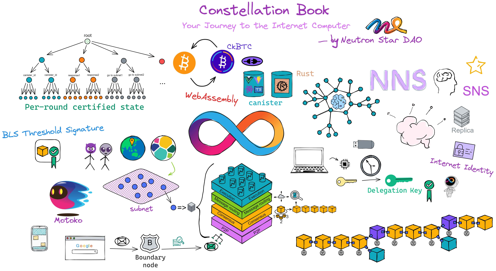If you have only heard of IC but have too busy with Ethereum and Polkadot projects without delving into IC, then you've come to the right place to learn more about it here!
If you are still unfamiliar with Web3, blockchain, Bitcoin, and IC, don't worry, start here. Let me guide you through the history of encryption and quickly get you started in Web3 development!

The structure of the "Internet Computer Roaming Guide": the first half is vivid and interesting, and the second half is concise; the first half talks about IC principles, and the second half discusses development in practice.
Why do I write this book
Early on, after learning about IC, I collected and arranged materials from the IC Whitepaper, Medium, ICPL forums, and IC Developer Forums. After talking to a friend about the IC architecture, I told her I was making notes on the IC resources and would share them when they were ready. I didn't expect that it would take a year. After experiencing the long years of procrastination, and with what I learned later, I finally put together the first version of the notes. After a period of further study, I thought it would be better to share these notes. Making it an open-source book helps everyone learn about IC and contributes to the IC developer community.
Learn blockchain with zero thresholds and level the learning field for IC.

Why open source?
I really like the Rust open-source community. There are many open-source books and high-quality projects in the Rust community, which have helped me a lot. I have learned a lot from the Rust open-source community. Projects like Bitcoin, Ethereum, and their related projects also have a strong open-source atmosphere, and I hope that more and more open-source projects will emerge in the IC community for everyone to learn from each other.
In addition, the IC content is updated and iterated quickly. With open-source references, everyone can contribute, keeping the content fresh and up-to-date.
Join the developer discussion group for this book, correct errors, make modifications, suggest improvements, and contribute to the open-source book together!

Journey of the Dream Weaver
In every geek's heart lies a dream of decentralization.
This is a story about Dominic Williams.
JAHEBIL😎
He liked to call himself "JAHEBIL", which stands for "Just Another Hacker Entrepreneur Based in London".
He wrote code, started businesses, and worked as a "dream maker" in London.
He was brave and optimistic, living secludedly, was not interested in socializing, and was only concerned about the brand of his company, living a repetitive and focused life. Even working 18 hours per day in an unfriendly entrepreneurial environment in the UK, he could still hum the happiest tunes.
Compared to Silicon Valley, the UK's entrepreneurial environment was like a living hell. The success of numerous companies in Silicon Valley led to even greater investments, which attracted top entrepreneurs from around the world to the area, either to reach the pinnacle of success or fail. Unlike Silicon Valley's talented pool, in the UK, every company that Dominic founded could only produce limited returns, then he would start another company, getting caught in a vicious cycle of working hard, making dreams, maintaining dreams, and making new dreams... He had to sharpen his skills to improve technically while ensuring the company remained profitable.
Tired of the cyclical life that was only draining his enthusiasm, the seed of hope ground at Dominic's heart. In 2010, as a dream maker, he decided to take chances!
Fight My Monster was a massively multiplayer online game and a children's social network. He planned to connect children from all over the world to play this game online. Players have their own monsters and use different skills to attack each other in a turn-based battle. At that time, on the other side of the earth, China was also going crazy for "Roco Kingdom" developed by Tencent.
After comparing HBase, Cassandra, and other databases, Dominic chose the early Cassandra beta, the first horizontally scalable distributed database. Dominic built various tools for Cassandra, including the first system that ran atomic transactions on scalable eventually consistent storage. They were the first team in the world to attempt to use a complex Cassandra system in a production environment.
Dominic wanted to connect millions of users worldwide through a distributed system, which was a significant innovation at the time. After several test runs, the game was officially launched on New Year's Day in 2011, and in just two weeks, it gained 30,000 users, skyrocketing to 300,000 users in just a few months.

The team achieved remarkable success in scaling up their business despite having a meager budget. However, they had overlooked one crucial factor - the development of a large-scale online game required an army of specialists, including Flash developers, database administrators, network engineers, payment system experts, operations and maintenance personnel, complexity analysts, cartoon artists, sound engineers, music composers, animation experts, advertising gurus, and more.
This massive expenditure surpassed any budget they had previously allocated to their entrepreneurial projects. In due course, Dominic and his friends exhausted their investment and were forced to seek additional funding. Day and night's overnight work resulted in an almost perfect growth chart, "so raising funds shouldn't be too difficult".
Dominic introduced the project to investors, saying, "Fight My Monster is growing rapidly and will soon exceed one million users. We believe that engineers live in an exciting era, and the Internet infrastructure is already mature. Many things can suddenly be achieved in new ways. This company was initially self-sufficient on a very limited budget. You may have heard that Fight My Monster is expanding, and now many excellent engineers have the opportunity to join us".
"Let me explain our architecture plan and why we did it this way. As you can see, it is not a traditional architecture. We chose a simple but scalable three-tier architecture, which we host in the cloud. I hope this system works..." Dominic continued passionately.
"Since you already have so many users, maybe you should try to get more of them to pay. This will not only prove your ability to make money but also get our investment." The other party frowned, clearly reluctant to invest. Faced with such a crazy user growth, London investors even suspected Dominic of fabricating data.
Now, Dominic's heart was shattered like a biscuit. He had underestimated the difficulty of financing.
Soon, the pieces turned to crumbs. At this point, competitors had already secured funding from other investment firms and prevented other investment firms from investing in Fight My Monster.
Was it because they weren't working hard enough?
Since Cassandra was also in early development, at the end of 2011, due to bugs in Cassandra beta code, Fight My Monster's user data was almost lost. It took several days and nights of work from Cassandra senior engineers and Dominic's team to save the data, ultimately resolving this horrific incident.

Dominic was in a constant flurry of activity.
He raced between his home and the company like a wound-up toy car: just after fixing a bug, he was off to meet with investors without even testing it first; he barely had time to eat, his head buried in meetings with engineers to discuss system adjustments; as soon as he left the company, he was off to the supermarket to buy Christmas gifts for his wife...
The team relied heavily on him, and his workload became overwhelmingly heavy - a rare sight even in the startup capital of Silicon Valley. Dominic worked 12 to 18 hours every day, a work pattern that is almost unheard of in today's startup world. He juggled business management, system administration, and coding, all while trying to maintain a personal life. In no time, his wife became accustomed to this lifestyle: during the day, she directed and planned games, perfecting game play and project processes, and at night, she cooked and cleaned the house, all in seamless cooperation with Dominic.
Dominic's photos.

Dominic became even more hardworking after that. Fortunately, he happened to meet a company willing to invest in him in Silicon Valley. Finally, an investor was moved by this dreamer in front of them. Within a few weeks of raising funds, Fight My Monster's user count quickly reached 1 million. A few months later, Dominic relocated the company to San Mateo (a small town near San Francisco).
He went downstairs to have coffee and when he came back, his memo was filled with common problems and solutions for ConcurrentHashMap, he listened to geeks talking about how to build a team for a startup, and he made connections with venture capitalists in Silicon Valley.
After a year of development, Dominic was very excited in 2012:
"Fight My Monster appeared on TechCrunch today, worth a big cheer, thank you!!! We are working hard and hope we can achieve our dreams."
"If you haven't played Fight My Monster yet, I suggest you give it a try - there really is nothing better online. We are incubating in the UK, and the best time to experience the site is weekdays (after school) from 4 pm to 8 pm or weekends during the day."
However, setbacks soon followed. After raising funds, the company's newly hired financial executive disagreed with the original team on strategy, and the disagreement escalated into a fatal decision-making mistake. Although the user base continued to grow, Fight My Monster was facing insurmountable obstacles.
From a financial return perspective, Fight My Monster was a failure, with the user base only expanding to over 3 million in 2013.
However, this experience was very valuable, and the most precious part was finding a group of capable colleagues who were also obsessed with the distributed system that Dominic loved. Dominic admired Fight My Monster's designer Jon Ball, who was always able to create a bunch of beautiful models using the team's design system, and later set the record for the highest ad viewing rate. There was also Aaron Morton, the Cassandra engineer who said "We work together, believe each other", who worked with Dominic to build the "engine" behind the game - a distributed database.

In hindsight, Dominic's Flash game was no longer popular as people were gradually shifting towards mobile games and tablets. In 2010, Steve Jobs announced that Apple would no longer support Flash on its devices due to its impact on device performance. Additionally, due to frequent security vulnerabilities, BBC published an article titled "How much longer can Flash survive?" Shortly after, Adobe announced that it was abandoning the Flash project and switching to Animate for professional animation.
Reflecting on his experience, Dominic said, "We could have succeeded but needed to move faster: if I had my time again, I would have relocated to The Valley very soon after the company started growing to raise money faster and gain access to a bigger pool of experienced gaming executives".
Engineers turned entrepreneurs, entrepreneurs turned engineers
Although the gaming industry was withering away, in Silicon Valley, a strange yet formidable force captured Dominic's attention, causing ripples to emerge in his mind's stagnant pool of inspiration. These ripples quickly transformed into rolling waves, propelling him towards a new frontier.
Rewinding back to 1998, Dominic was developing an online storage system for a London-based startup and utilizing Wei Dai's Crypto++ library extensively. While browsing Wei Dai's website, Dominic stumbled upon an article about "b-money", one of the early precursors to Bitcoin.
Little did Dominic know that this article from 1998 would ignite the spark for Bitcoin and connect the timeline of his cryptography career for the next decade.

After leaving Fight My Monster in 2013, Dominic became obsessed with Bitcoin, a long-dormant interest that had been sparked by the "b-money" article he had stumbled upon back in 1998.

Wei Dai wrote in b-money:
"I am fascinated by Tim May's crypto-anarchy. Unlike the typical understanding of 'anarchy', in a crypto-anarchy the government is not temporarily destroyed but permanently forbidden and unnecessary. It's a community where the threat of violence is impotent because violence is impossible, and violence is impossible because its participants cannot be linked to their true names or physical locations through cryptography".
Click here to see more about Crypto Punks.
B-money outlined a protocol for providing currency exchange and contract execution services in an anonymous community. Wei Dai first introduced a less practical protocol as a prelude because it required a synchronous, interference-free anonymous broadcast channel. He then proposed a practical protocol. In all schemes, Wei Dai assumed the existence of an untraceable network where senders and receivers could only be identified by digital pseudonyms (i.e., public keys), and each message was signed by the sender and encrypted for the receiver.
Wei Dai described in detail how to create currency, how to send it, how to prevent double-spending, how to broadcast transaction information, and how to achieve consensus among servers.
We cannot determine the relationship between Wei Dai's b-money and Bitcoin or whether he was inspired by "The Sovereign Individual" to design a scheme. However, Wei Dai's website shows that it was last updated on January 10, 2021.

Dominic said, "I love algorithms and distributed computing, and I won many awards in this field during university. More importantly, I had never encountered a technical field that combined the thinking of finance, law, politics, economics, and philosophy, while also having the potential to drive significant change in the world. For me, this emerging field was a dream come true. I made a bigger life decision to re-enter this field with my career".
Here is Dominic's "Bitcoin ATM kiss" in 2014.

In 2014, while trading cryptocurrencies, Dominic immersed himself in learning the fundamentals of consensus algorithms.
On February 7th, Mt. Gox, the world's largest Bitcoin exchange, announced its bankruptcy. Dominic took to Twitter to express his distress at the beloved Bitcoin's plummeting value.
Bitcoin crashed to 666 USD. (It's currently priced at 23,000 USD, down from its peak of 69,000 USD.)

Dominic immersed himself in the research of traditional Byzantine fault tolerance and combined it with his previous experience. He came up with a decentralized network that can scale horizontally like Cassandra - allowing more and more servers to join and maintain high performance. Within a few days, Dominic published a paper describing a scalable cryptocurrency called Pebble. The paper quietly circulated within a small circle of cryptography enthusiasts, and it was the first system to describe a decentralized sharding approach. In this system, each shard uses an asynchronous Byzantine fault tolerance algorithm to achieve consensus.
While learning, Dominic didn't forget to trade Bitcoin. Investing in Bitcoin brought him some peace of mind, and now he could focus on designing consensus algorithms without having to work day and night or in a frenzy.

Dominic's research focuses on protocols and cryptography, which are like dry kindling that reignites the dreamer's inner spark. Dominic believes that these protocols and cryptographic algorithms can change the world. He took the "D" for decentralized and the "finity" for infinity and combined them to create "DFINITY". DFINITY aims to create a decentralized application platform with infinite scalability.
After returning to Mountain View, California from China, Dominic tweeted, "China Loves Blockchain :)".

Like Ethereum, Dominic also received investment in China. The reason is simple. Silicon Valley invested in Bitcoin very early and gained huge returns, so they don't care much about "altcoins" (the secular view is that coins other than Bitcoin are "altcoins", which are basically coins that are slightly improved versions of Bitcoin).
Next, I need to introduce what the DFINITY team is doing in detail.
Point. Line. Surface. Solid!
We know that Bitcoin is the pioneer of blockchain. Bitcoin itself emerged slowly in the long-term pursuit of decentralized currency projects by cypherpunks. Click here to see more about Blockchain.
It created an open ledger system: people from all over the world can join or leave at any time, rely on consensus algorithms to keep everyone's data consistent, and create a co-creation, co-construction, and shared decentralized network. People just need to download the Bitcoin software (downloading the source code and compiling it is also possible), and then start running it on their own machines to join the Bitcoin network. Bitcoin will enable computers around the world to reach a consensus and jointly record every transaction. With everyone's record, the legendary feature of "immutability" in blockchain is achieved, which is actually a matter of majority rule and not being able to cheat everyone.
In the traditional network architecture, user data is indiscriminately stuffed into servers. Users cannot truly control their own data, and whoever controls the server has the final say. If we can view this one-to-many relationship as "points" scattered around the world, the user's data flows into each point tirelessly.

So the Bitcoin network can be seen as a "line", it connects isolated points into a line, making the internet more fair and open. What Bitcoin does is to combine computers from all over the world to form a huge "world ledger". So what if you want to record something else? Just imitate Bitcoin and create a new one!
Six years after the birth of Bitcoin, a "surface" that can deploy software on a decentralized network gradually emerged, called Ethereum. Ethereum is not a replica of Bitcoin's world ledger. Ethereum has created a shared and universal virtual "world computer", with Ethereum's virtual machine running on everyone's computer. Like the Bitcoin ledger, it is tamper-proof and cannot be modified. Everyone can write software and deploy it on the virtual machine, as long as they pay a bit of ether to the miners. (There are no miners anymore, but that's another article 😋)

Deployed software on the blockchain becomes an automated vending machine, permanently stored within a distributed and decentralized network that fairly and justly evaluates each transaction to determine if conditions are met. With the blockchain's immutable storage capabilities, the phrase "code is law" is coined. Here, software is referred to by another name: "smart contracts".
However, ahem, interrupting for a moment. The idea is beautiful, but reality can be cruel. In the early Ethereum community, there was indeed a desire to create a "world computer," establishing a decentralized infrastructure distributed worldwide. But Ethereum's architecture has certain limitations, including lower transaction execution performance, high gas fees due to rising ETH prices, poor scalability, and the inability to store large amounts of data, among other issues.
The solution to this problem can take two approaches. The first is to improve the existing architecture, such as transitioning Ethereum's consensus from PoW to PoS (Casper), building shard chains, or creating sidechains. The other approach is to start over and design a new architecture that can handle information processing and large-scale data storage at high speeds.
The question is whether to keep improving and scaling the old Ethereum architecture or design a new "world computer" from scratch.
In the face of these challenges, Dominic made a difficult decision and chose the latter option.
When we try to solve a specific problem, we often find that the key is to create powerful "tools". With a more advanced and practical tool, and continuously maintain and improve it, it gradually becomes a more powerful tool to solve many valuable problems. A common business phenomenon is that in order to realize a product or service, a tool is developed, and then it is found that this tool has wider applicability, and then the tool itself evolves into a larger, more successful and higher-valued product.
Amazon's cloud services were originally designed to solve the problem of waste of computing resources after Black Friday. Later, it became the world's earliest and largest cloud service provider. Similarly, SpaceX solved the problem of high rocket launch costs. In order to thoroughly solve the scalability problem, Dominic decided to redesign the consensus algorithm and architecture.
The opportunity finally arrived in November 2015, in London.
Dominic presented the consensus algorithm he had been studying at devcon one.

Now we can see from Dominic's presentation at devcon one in 2015 that he described the IC as Ethereum 3.0. In fact, it wouldn't be too much to call it Blockchain 3.0. If Bitcoin and Ethereum are called "Blockchain 1.0" and "Blockchain 2.0", he wanted to create a "solid", a true world computer, even naming the project the Internet Computer (IC for short). Based on the "face" to support large-scale applications, it can horizontally expand and achieve unlimited scalability as a "world computer".

Oops, sorry, it should be this one:

During the conversation, Dominic discovered that even the staunchest Bitcoin supporters were very interested in the concept of Ethereum. This reinforced his belief in the potential of Trusted Computing.
Dominic had an even grander vision than Ethereum. He wanted to create a public network of servers that would provide a "decentralized cloud" - a trusted computing platform. Software would be deployed and run on this decentralized cloud.

Dominic is working on reshaping a completely decentralized infrastructure, which can also be understood as the next generation of internet infrastructure or as a decentralized trusted computing platform combined with blockchain😉.
Simply put:
Traditional defense systems: mainly composed of firewalls, intrusion detection, virus prevention, etc. The principle of traditional network security is passive defense, often "treatment after the event". For example, when an application has a virus, it is necessary to use anti-virus software to detect and kill it. At this time, the enterprise has already incurred losses to some extent.
Trusted computing: based on cryptographic computation and protection, combined with secure technology to ensure full traceability and monitoring. The principle of trusted computing is active defense. Since the entire chain from application, operating system to hardware must be verified, the probability of virus and network attacks is greatly reduced.
Blockchain has something called a consensus algorithm, which is responsible for coordinating the nodes in the network (a node is a group of servers, which can be understood as a high-performance computer). The consensus algorithm can ensure that everyone's information in the network is in agreement, because this is a network that anyone can join or leave at any time, and it is not known which node might intentionally disrupt it (you can refer to my future blog post about the Byzantine Generals problem). With the consensus algorithm, even if one-third of the nodes in the network are malicious, the other nodes can still reach a consensus normally (the resistance of different consensus algorithms varies).

Decentralized platforms not only involve token transfers between parties, but also rely on consensus algorithms to establish a barrier and keep malicious actors at bay. However, efficiency and decentralization are difficult to achieve simultaneously, and it's challenging to create a fully decentralized system that can both protect nodes and allow for coordination and data synchronization among them. Dominic's goal is to merge trusted computing and blockchain to create a limitless, open, high-performance, strongly consistent, scalable, and data-intensive blockchain network composed of servers from all over the world, without the need for firewalls.
For Dominic, the future of blockchain is the future of the internet, and vice versa. The internet is no longer just about connecting servers in data centers to users, but first forming a trusted and secure blockchain network composed of servers from around the world, and then deploying apps and serving users on top of it. Dominic hopes that banking and finance, the sharing economy (such as Uber), social networks, email, and even web searches can all be transferred to such a network.
In the fall of 2016, Dominic announced his return as a "decentralized adventurer". With the theoretical framework in place, the adventure of a dreamer has officially begun!
DFINITY !
IC re-designed the blockchain architecture and developed more efficient consensus, along with innovative cryptographic combinations, in order to achieve the idea of a "world computer". The goal is to solve the limitations of speed, efficiency, and scalability in traditional blockchain architectures.
Dominic is busy researching with the technical team on his left hand, writing strategic plans for the team on his right hand, and going to various blockchain forums to introduce the project with his mouth.

Over the years, Dominic has shared many critical cryptographic technologies with other blockchain teams, such as the application of VRF, which has been adopted by many well-known projects (such as Chainlink, etc.).
In February 2017, Dominic participated in a roundtable forum with Vitalik Buterin and many other experts. From left to right: Vitalik Buterin (left one), Dominic (left two), Timo Hanke (right one).

Ben Lynn (second from left in the red T-shirt) is demonstrating a mind-blowing technology called Threshold Relay, which can significantly improve the performance of blockchain and quickly generate blocks.

By the way, engineer Timo Hanke (third from left in the middle) was a mathematics and cryptography professor at RWTH Aachen University in Germany before he created AsicBoost in 2013, which increased the efficiency of Bitcoin mining by 20-30% and is now a standard for large-scale mining operations.
Ben Lynn is one of the creators of the BLS signature algorithm, and the "L" in BLS stands for the "L" in his name. After graduating from Stanford with a Ph.D., he worked at Google for 10 years before joining DFINITY in May 2017. If you haven't heard of the BLS algorithm, you must have read Ben Lynn's "Git Magic," which was all the rage on the internet a few years ago.

2021 was not an ordinary year.
May 10th. The IC mainnet was launched.

The chart above shows a comparison of performance, storage data costs, and energy consumption against other blockchains.
When the IC mainnet went live, there were already over 4,000 active developers. The chart below shows the growth of developers compared to other blockchains.

IC has many innovations, such as unlimited horizontal scalability. Through Chain Key, IC network has the ability to infinitely expand. The network is managed by a DAO - the Network Nervous System (NNS). So this requires an unusual consensus algorithm. IC's consensus only orders messages so that replicas execute messages in the same order. Relying on the BLS threshold signature algorithm and non-interactive distributed key generation (DKG) to randomly select who produces blocks, the consensus speed is very fast. This also gives IC higher TPS, millisecond level queries and second level data updates. The experience of using Dapps is much smoother than other public chains.
IC's goal is decentralized cloud services. In order to deploy Full Dapps on chain, all Dapps are installed in a virtualized container. "Canister" on IC is equivalent to smart contracts on Ethereum. Canisters can store data and deploy code. Developers can also test through the Candid UI automatically generated by the backend virtual container without writing a line of code. Clients can directly access the frontend pages and smart contracts deployed on IC through https. The virtual containers are like small servers, providing each Dapp with its own on-chain storage space. They can also support smart contracts directly calling external https servers without an oracle. This is the first time in the history of blockchain that smart contracts can communicate directly with external https servers. After further processing the messages, the smart contracts can respond. Like Ethereum and Bitcoin, IC also accepts the paradigm of "code is law". This also means that there is no governance to regulate the use of the platform or the underlying network itself. IC's "smart contracts" Canisters are not immutable. They can store data and update code.

Historically, for the first time, Bitcoin and Ethereum are directly integrated at the bottom layer through cryptography (not cross-chain bridges): IC is directly integrated with Bitcoin at the protocol level. The Canisters on IC can directly receive, hold and send Bitcoin on the Bitcoin network. In other words, Canisters can hold Bitcoin like a user's wallet. Canisters can securely hold and use ECDSA keys through the Threshold ECDSA Chain Key signing protocol. It is equivalent to giving Bitcoin smart contract functionality!
The whiteboard of the Zurich office's computing Bitcoin integration.

Since the data is on the chain, the Gas fee has to be very low so people will use it: 1 G for 1 year is $5! Low Gas alone is not enough. In order for users to use Dapps without barriers, IC uses a reverse Gas fee model where the Gas is paid by the development team. The DFINITY team also pegged Gas to SDR, turning it into stable Gas that does not fluctuate with the coin price. IC has a unified decentralized anonymous identity: Internet Identity (ii) as the login for Dapps and joins the network neural system to participate in governance...
IC architecture and consensus are also unique. IC theoretically has unlimited computing and storage, just add more server nodes. The improved consensus is a bit like practical Byzantine, but more complex, because it is quite different from the current consensus. Dominic gave it a name called "PoUW" consensus, Proof of Useful Work. The BLS threshold signature scheme's VRF generates truly unpredictable random numbers, and everyone can verify that the random number is not forged by others. Anti-Sybil attack edge nodes, layered architecture, randomly designated block generation, no need to say more, just one word, wonderful.
According to statistics from GitHub and Electric Capital (2023), IC has the most active developer community and is still growing rapidly.

The photo on the office wall when IC was about to reach 30 million blocks after three weeks of mainnet launch.

In July 2021, many new DFINITY members interviewed and joined the team via video conferencing during the COVID-19 pandemic without meeting in person. On this day, a small group of people came to the office located in Zurich to meet face-to-face.

Dominic has written two visions for DFINITY in his blog:
On the one hand, many traditional monopolistic technology intermediaries, such as Uber, eBay, social networks, instant messaging, and even search engines, may be redesigned as "open-source enterprises," using proprietary software and their own decentralized governance systems to update themselves.
On the other hand, we hope to see large-scale redesign of enterprise IT systems to take advantage of the special properties offered by blockchain computers and dramatically reduce costs. The last point is not obvious, as computing on blockchain computers is much more expensive than traditional cloud computing such as Amazon Web Services. However, significant cost savings are possible because the vast majority of costs involved in running enterprise IT systems come from supporting human capital, not computing itself, and IC will make it possible to create systems with much less human capital involvement.
Image from Shanghai, October 2021.

On July 14, 2022, at a street café in Zurich, Dominic and his team were waiting for the 1,000,000,000th block of IC to be mined, while checking the real-time statistics of IC data on the dashboard.

DFINITY's new office building is located in Switzerland.

When leaving the office, Dominic took some photos of murals on the cafeteria wall that were created by talented IC NFT artists.

Dominic moved into his new house, and shared the good news on Twitter while enjoying a piece of cake.

After work, one must not neglect their musical pursuits.

After talking for so long, what problems does IC actually solve? In general, it solves the problems that traditional blockchains have low TPS, poor scalability, and Dapps still rely on some centralized services.
Bitcoin is a decentralized ledger.
Ethereum created a decentralized computer.
Cosmos and Polkadot implemented the composability and scalability of blockchains.
The Internet Computer is building a highly scalable, ultra-high TPS decentralized cloud service.
The key to scalability is near-zero marginal cost. Polkadot's scalability is built on software engineers' development, while IC's scalability is automatically completed at the lower level. This greatly reduces the development cost of application teams on IC.
To build a highly scalable and high-performance public chain:
-
First, scalability and performance must be valued in the planning stage, and the design and layout in all aspects are aimed at achieving scalability and TPS as soon as possible.
-
Second, confidence and strength are needed to stick to their own path until the day the ecosystem explodes. In the short term, we need to endure the suppression of other competitors, withstand the pressure of cash flow for a long time, and ignore the incomprehension of the world.
Focus on the research and development of underlying infrastructure until various creative applications appear and increase the number of participants in the ecosystem. The increase in quantity leads to the further emergence of new ideas and applications. This forms a positive feedback loop, making the ecosystem spontaneously more prosperous and more complex:
Scalability / Zero marginal cost / Open system → Increase in number of applications → Exponential increase in various connections → Valuable ideas emerge → Form applications → System complexity → Quantity continues to increase exponentially → Positive feedback loop → Ecosystem prosperity.

All technological development options have advantages and disadvantages. Judging who will eventually win based on the partial and one-sided technological advantages and disadvantages is naive and dangerous. The ultimate winner on the blockchain will be the one with the richest ecosystem, the largest number of developers, software applications, and end users.
The key words for the future of blockchain are: zero latency, zero marginal cost, open ecosystem, huge network effects, extremely low unit cost, and an extremely complex and rich ecosystem.
The huge changes in industries brought about by technological revolutions are sudden for most ordinary people. But behind this suddenness are years, even decades, of gradual evolution.
Once a few critical parameters affecting the industrial pattern cross the critical point, the ecosystem enters a period of great prosperity, and changes are extremely rapid. The profound impact on most people is completely unexpected. After the change ends, the industry enters a new long-term balance. For some time, almost no competitors can catch up with the leaders in the industry.

After 2 years of development, the IC ecosystem has emerged with many excellent applications. The front end and back end are all on-chain, and Dapps that do not rely on centralized services at all.
In the social Dapp (SocialFi) field, there are DSCVR, Distrikt, Mora, Openchat, etc. DSCVR is an end-to-end decentralized Web3 social media platform. Distrikt is a Web3 microblogging platform that allows everyone to share content or participate in discussions in a decentralized network. Mora can deploy a smart contract for each user to store the user's blog data. Mora allows users to publish blogs on the blockchain and permanently store their own data. Here is more about Mora. Openchat provides decentralized instant messaging services and is a decentralized chat Dapp.
In the decentralized finance (DeFi) field, the IC ecosystem also has some very good Dapps: ICLightHouse, InfinitySwap and ICPSwap. 2022 was a year of collapse of trust in centralized institutions. 3AC, Celsius, Voyager Digital, BlockFi, Babel Finance, FTX and other leading hedge funds, lending platforms and exchanges were defeated and went bankrupt this year. Not only that, DCG grayscale, Binance and Huobi and other giants also suffered varying degrees of FUD. Centralized institutions cannot achieve complete transparency. Their trust depends on the reputation of the founders and the external image of the company's brand. Decentralization is based on "code is law" and "Don't trust, verify!". Without breaking, there is no standing. Under this revolutionary idea, the myth of centralization has been completely shattered, paving the way for a decentralized future. Decentralized financial services allow users to borrow, trade and manage assets without intermediaries, enhancing the transparency and accessibility of the financial system.
AstroX ME wallet is a highly anticipated wallet app. The ME wallet can securely and reliably store and manage digital assets, allowing users to easily manage their IC tokens and various digital assets.
There is also the decentralized NFT market Yumi. Users can create, buy and trade digital artworks, providing artists and collectors with new opportunities and markets.
The IC ecosystem has already emerged with many impressive Dapps, covering social, finance, NFT markets and wallets, providing rich and diverse experiences and services. As the IC ecosystem continues to grow and innovate, we look forward to more excellent applications. There are more interesting projects waiting for you to discover on the official website.

Switzerland is now a prominent "Crypto Valley", where many well-known blockchain projects have been born. DFINITY is the first completely non-profit foundation here.
Dominic has assembled a very strong team of blockchain developers, including cryptography, computer science, and mathematics professors, PhDs and postdocs, cryptocurrency experts, senior engineers, and professional managers.
I believe that blockchain will still be one of the most interesting, influential, and fastest-growing technology fields in the next 10 years. Currently, there is no other chain better suited for deploying applications than IC.
This is the story I wanted to tell about Dominic, but his own story is far from over, and has just begun...
@1.5x.jpg)
Who could have imagined that a blog post from distant 1998 would ignite the "crypto movement" that has been sweeping the world for the past twenty years, fueled by Dominic's passion for unlimited distribution...
That was a new world.
Epilogue
After completing the conclusion, I perceived a faint disturbance. The rustling, rustling sound approached gradually, rendering the entire room utterly silent. The source of the sound remained indistinct and unfathomable - it could have been the hum of the computer's fan, the gentle sway of tree branches outside the window, or simply a figment of my own imagination.
The sound became clearer and clearer. It sounded like it was coming from inside the computer?
I hurriedly pressed my ear against the computer's motherboard, but the sound did not emanate from there. I turned my gaze towards the window - could it be coming from outside? Yet everything outside appeared perfectly normal.
Then the sound came again, louder this time. It was a buzzing sound! That's it!
Suddenly, time came to a standstill. Everything around me froze in place. Neurons expanded and burst, releasing pheromones that catalyzed other neurons. My head began to shake uncontrollably, then suddenly expanded. My eyes bulged like a mouse's, and my ears twisted into pretzels... The sound seemed to be accompanied by the sound of breaking glass, footsteps on the ground, and the sound of birds and dogs barking...

A burst of white light coursed through my mind, quickly swelling into a vast, shimmering expanse of brilliance. All around me, an endless canvas of blue unfurled, adorned with intricate squares and lines of every hue. Then, a radiant spark flickered to life, blossoming into a majestic orb that engulfed all else in its path. As the light dissipated, the blue canvas gave way to an immaculate vista of pristine white.
Now, I don't remember anything.
Maybe it was just a dream.
Or maybe it was something that could change the world.

The Future Has Come
I read through a lot of thoughts about blockchain, and summarise them into this article. Which I hope to give a relatively objective view about blockchain and internet technologies in the future.
Turkeys on the Farm
Blockchain is all the rage these days. It seems like everyone is buying cryptocurrencies.
The quadrennial bull market, digital gold Bitcoin, red-hot IXOs, meme coins with hundredfold increases...
Hold on, let me check the calendar. It's May 2023... Looks like we're almost due for another bull market, if it comes on schedule. Last time was 2020, so maybe this time it'll be 2024.
But don't get too excited, let me tell you a story:
In a farm, there was a group of turkeys. The farmer fed them every day at 11 a.m. One turkey, the scientist of the flock, observed this phenomenon for almost a year without any exception.
So, it proudly announced its great discovery: every day at 11 a.m., food would arrive. The next day at 11 a.m., the farmer came again, and the turkeys were fed once more. Consequently, they all agreed with the scientist's law.
But on Thanksgiving Day, there was no food. Instead, the farmer came in and killed them all.
This story was originally put forth by British philosopher Bertrand Russell to satirize unscientific inductive reasoning and the abuse of induction.
Let's not talk about whether the bull market will come or not.
Instead, let's look at some similar situations from history and see what happened:
During the late '90s Internet bubble, the market experienced several ups and downs. In '96, '97, and '98, there were several fluctuations. The last and largest surge occurred from October '98 to March 2000 when the Nasdaq index rose from just over 2000 points to around 4900 points. This gradual climb instilled a resolute belief in speculators: no matter how badly the market falls, it will always bounce back.

As people went through several bull and bear cycles, this unwavering belief was further reinforced. When the real, prolonged bear market began, they continued to follow their own summarized experience, doubling down and buying at what they thought were the dips...

When the bubble burst, stock prices plummeted more than 50% in just a few days, with most stocks eventually losing 99% of their value and going straight to zero. Many people who had quickly become wealthy by leveraging their investments bet their entire net worth on bottom-picking during the bear market, only to end up losing everything.
The essence of the Internet is to reduce the cost of searching and interacting with information to almost zero, and on this basis, it has given birth to many highly scalable, highly profitable, and monopolistic business models that traditional economists cannot comprehend. However, many projects and ideas from the '90s were launched prematurely, before the necessary hardware and software infrastructure was in place, and before personal computers and broadband internet became widespread. As a result, they ended up failing miserably, like Webvan, founded in 1996 and bankrupt by 2001, with a total funding of around $800 million.
After the dot-com bubble burst in 2001, the maturation of infrastructure and the decrease in various costs led to the emergence of new applications (such as Taobao, YouTube, Netflix, Facebook, Amazon, AWS, iPhone, Uber, TikTok). Their explosive growth and massive scale far surpassed even the most pessimistic imaginations.

Similarly, a large number of overly advanced blockchain projects that cannot directly generate value for end users will eventually wither away, giving rise to various pessimistic and negative emotions.
However, once the infrastructure matures, many of the boasts and dreams of the past will ultimately be realized by entrepreneurs who appear at the right time and place.
Blockchains sit at the intersection of three major themes in modern society: technology, finance and democracy. Blockchains are a technology that uses the progress of encryption and computing to "democratize" money and many aspects of our daily lives. Its purpose is to improve the way our economy works, make it easier for us to control our own information, data and ultimately take control of our lives. In this tech age, this is what democracy should look like. We often hear people complain about tech giants (like Apple, Google and Facebook) snooping on our privacy data. The best way to solve this problem and give power back to the people.
Blockchain technology's essence is to reduce the barriers and costs of value exchange between global individuals and machines to almost zero.
However, Ethereum currently does not achieve this vision and ultimately still requires the maturity and popularity of various infrastructures.
Imagine what it would look like if blockchain technology successfully solves scalability, security and usability issues. Eventually there may be only a few public chains that can represent the future and go worldwide, carrying the decentralized dreams of people around the world.
When bitcoin was viewed as an Internet payment in 2014, the actual throughput of bitcoin could not support payment when shopping in supermarkets. Ethereum initially called itself "a world computer". Many initially believed that Ethereum could replace Bitcoin because it had programmability. But this is actually a misconception, which can also easily lead to another mistaken view: That another next-generation smart contract platform is the killer of Ethereum, just because it provides more scalability.
Similarly, just as Ethereum cannot replace Bitcoin, the next "cloud service" blockchains are also unlikely to kill Ethereum, but expand adjacent possibilities and carry different applications, utilizing their unique characteristics. This does not mean that Bitcoin and Ethereum have established their position permanently. Bitcoin and Ethereum also have their own existing problems. More advanced technology does not necessarily replace existing technology, but is more likely to create a complex, specialized tech stack.
Today's use of Ethereum is not computing, but as a battle-tested, slow and secure computer for token-based applications such as crowdfunding, lending, digital companies and voting in the world's accounting system. Even if the Ethereum network is a bit congested, Gas is super expensive and it takes a few minutes to complete a transaction, these Dapps can still compete with banks, shareholder voting and securities firms.
Because these smart contracts allow completely free transactions between strangers without going through centralized institutions, and make the large personnel establishments of centralized institutions redundant. Automated market makers on Ethereum, like Uniswap, have only about 20 employees, currently worth about 20 billion. In comparison, Intercontinental, the parent company of the New York Stock Exchange, has nearly 9,000 employees and a market value of over $600 billion. Renowned blockchain investor Raoul Pal estimates that the global user base of blockchains is currently growing at over 110% per year, while global Internet users grew only 63% in 1997. Even following the trajectory of Internet development after 1997, the global user base of blockchains will grow from the current approximately 200 million to around 430 million by 2030.
The Coachman and the Driver
The Coachman and the Driver History repeats itself in a spiral ascent:
Now everyone can drive cars as long as they have money to buy one. 🚗
In the past, everyone could ride horses as long as they had money to buy one. 🐎
So the car is just a means of transportation for this era. In the future, people may rarely drive cars. Similar to how people ride horses now, only at riding clubs and some tourist spots. After self-driving technology matures, people will not need to drive at all, and those who can drive will become fewer and fewer. One has to go to racetracks to experience the joy of driving.
In the ancient times there were common horses, blood horses, war horses, and racetracks.
Now there are common cars, supercars, tanks, and racetracks.
Horses did not disappear, they were just replaced by cars.
When cars first appeared, they were looked down upon and hated for a long time due to noise, slow speed, frequent accidents, often breaking down, lack of gas stations, and lack of parking lots. Later, as more roads were built, more gas stations emerged, cars improved in quality, traffic rules were promoted, and horse carriages were completely replaced.
Tesla nowadays works the same way: it runs out of power quickly; catches fire; the autopilot drives into the sea or into trees; lacks charging poles; brake failures are exaggerated by the media to be a joke, oh no, it has become a laughing stock and meme. When the battery life extends, self-driving algorithms improve, charging poles become more common, and charging time shortens, what can oil cars do? 😄 Moreover, electricity will become cheaper and cheaper with technological progress, through solar, wind, geothermal, and eventually controlled nuclear fusion...
The negative media coverage to attract eyeballs is also an obstacle for people to objectively recognize new things. In order to attract attention, the media selectively reports negative news about new inventions much more than positive reports, especially for new things. When the iPhone came out, the media first ridiculed the Apple fans as brainwashed, then accused people of selling kidneys to buy phones, and then attacked the poor signal.Every time a Tesla catches fire, experiences brake failure, or gets into an accident, there are always people who are inexplicably happy about it, without objectively comparing the accident rate with other cars. While people curse the various problems of shared bicycles, they fail to notice that shared bicycles are changing the commuting habits of urbanites, reducing gasoline consumption, and even affecting real estate prices.
Constant bombardment of negative news makes it almost impossible for most people to really delve into and study the full logic behind new things. Judging that a technology has no future because of its current limitations is like continuing to burn oil lamps for fear of the danger of electric shock. In fact, oil lamps also have the risk of fire! If we can remain objective and curious, we will have many different views on the world, especially in this era of rapid technological development.
Similarly, many people do not understand the underlying operating principles of IC, do not know the innovations of Chain Key cryptography, do not know that IC solves the scalability problem, do not know BLS threshold signatures, and do not know IC's consensus algorithm. It is difficult to truly understand the concept of IC because it is a completely new and complex system without analogies. Even for those with a computer background, it takes months to fully and deeply understand all the concepts by delving into various forums, collecting materials, and keeping up with new developments every day. If you are just looking for short-term benefits and blindly following the trend, investing in ICP at the price peak and then labeling this thing as "scam" or "garbage" because of huge losses and lack of understanding is very natural. All the losing retail investors become disappointed and gradually join the FUD army on social media, leading more people who do not understand IC to develop prejudices. More importantly, people often do not know the information they missed due to ignorance. Individual prejudices are common. Each person has different learning and life experiences and different thinking models, which will automatically ignore things that they are not interested in or do not understand.
For more related reading: Were attacks on ICP initiated by a master attack — multi-billion dollar price manipulation on FTX? How The New York Times promoted a corrupt attack on ICP by Arkham Intelligence ,Interview with DFINITY: ICP is a victim of SBF's capital operation; much of the future of Web3 is in Asia.
Human society's productivity moves forward in cycles:
A new technology emerges → A few people first come into contact with and try it → More people are hired to develop and maintain this technology → Organizations (companies or DAOs) grow and develop → More and more people start to try it and improve productivity → Until another new technology sprouts, trying to solve problems and facilitate life in a more advanced and cutting-edge way → Old organizations gradually decline and die (those that change faster die faster, those that do not change just wait to die, and a few organizations can successfully reform) → A large number of employees lose their jobs and join new jobs → New organizations continue to grow and develop...until one day! People really don't have to do anything at all, fully automated, abundant materials...life is left with enjoyment only~
The essence of blockchain technology is that innovation can be carried out by everyone without the review and approval of authoritative institutions. Anyone can protect their rights and interests through blockchain technology without infringement by the powerful. Everyone is equal in cryptography. As long as the private key is properly kept, personal assets can be fully controlled by themselves without relying on anyone's custody.
Visa's TPS is 2400, Bitcoin's is 7. Even at Bitcoin's slow speed, it has gained the support of enthusiasts, organizations and some governments around the world. If the previous centralized applications, such as Telegram and Dropbox, can be transferred to a decentralized blockchain, what kind of scenario would that be? Productivity will definitely be improved.
Despite the widespread application and development of blockchain technology in recent years, there are still some obvious drawbacks. One of the main issues is scalability. As blockchain technology is widely applied in areas such as digital currencies, smart contracts, and supply chain tracing, the transaction and data volume in blockchain networks are growing rapidly, presenting significant challenges to the scalability of the blockchain. The current blockchain architecture faces problems such as low throughput and high latency, making it difficult to support large-scale application scenarios. This is because the traditional blockchain technology adopts distributed consensus algorithms, which require all nodes to participate in the process of block verification and generation, thus limiting the network throughput and latency. Additionally, as blockchain data is stored on each node, data synchronization and transmission can also become bottlenecks for scalability.

Therefore, solving the scalability problem of blockchain has become one of the important directions for the development of blockchain technology. Researchers have proposed many solutions to improve the throughput and latency performance of blockchain networks, such as sharding technology, sidechain technology, and Lightning Network. These technologies are designed to decompose the blockchain network into smaller parts, allowing for separate processing of transactions and data, and can be interoperable through cross-chain communication protocols. Through these innovative technologies, blockchain scalability can be improved to better meet the needs of actual application scenarios.
Once blockchain solves the problems of scalability and throughput, achieves breakthroughs in underlying technology, it may become the new infrastructure of the Internet and reshape the future Internet landscape.
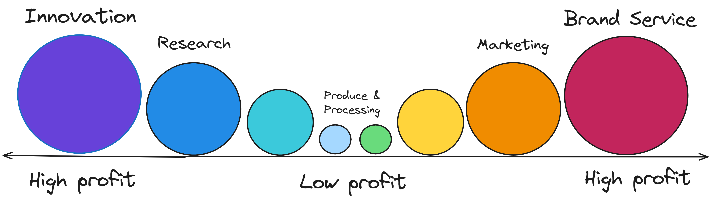
Dfinity elected to reinvent blockchain's underlying technology, developed a superior decentralized network service through innovation, and fostered more Dapps to cultivate an entirely new decentralized Internet ecosystem.
This realm is so novel, encompassing such a vast knowledge domain, that no one person reigns supreme. Success springs from observing broadly, learning ceaselessly. Only then unveils insights inaccessible and incomprehensible to most.
To talk about this, we have to start before Bitcoin.
If you're not familiar with Bitcoin, you can take a look at this first.
Bitcoin is completely virtual. It has no actual value and cannot create any value; it's just a virtual currency. Why do people go crazy sending money to buy Bitcoin? Let's dig a bit deeper: why does Bitcoin even exist?
Bitcoin was born against the backdrop of the 2008 financial crisis. The financial crisis spread globally, with no country immune. Fiat currencies became less reliable. Imagine the underlying relationship: governments issue legal tender backed by national credit. But the world is not always stable and peaceful, with wars, natural disasters and financial crises impacting society, which in turn affects the economy.
About wars: Society relies on governments, governments control armies, armies maintain society. Nations fund their armies through taxation. Conflicts between nations can arise if the benefits outweigh the costs, leading to war. Taxpayers fund the armies to launch wars. When the cannons boom, gold weighs a thousand taels. Some nations profit, some lose money.
About finance: Most countries in the world, like Europe and North America, have economic cycles. Small cycles make up large cycles, like a sine wave function. Periodic financial crises are like a sword hanging overhead; we can only pray: "Dharma, spare me!"
About natural disasters: They are difficult to predict. Though technological advances have reduced their impact on humans, threats remain for the next few decades. Viruses, floods, volcanoes - the economy suffers in response.
Since the economy will be impacted one way or another, can we find a type of money that is not devalued? It doesn't have to withstand all crises until mankind's destruction; it just needs to survive some natural disasters and human troubles. Money, I beg you, don't let a financial crisis on one end of the Earth affect people's normal lives on the other end.
There really is such a magical thing.
This kind of money originates from an "anarchist" idea. The previous b-money already reflects this idea.
The basic position of "anarchism" is to oppose all forms of domination and authority, including government, advocate self-help relations between individuals, and focus on individual freedom and equality. For anarchists, the word "anarchy" does not represent chaos, emptiness, or a state of moral degeneration, but a harmonious society established by the voluntary combination of free individuals to build mutual assistance, autonomy and anti-dictatorship, which is an autonomous system with authority but without government. They believe the root lies in "government", in the current pyramid structure from top to bottom. The layer-upon-layer management model not only has problems of inaction, corruption and waste, more importantly, there is always an organization above managing and maintaining order, which can easily lead to turmoil due to major conflicts of interest.
- Further analysis, you see that primitive society was very peaceful. People lived together spontaneously in large families, hunted together and cooperated. There was no so-called government or nation, only small-scale wealth accumulation and division of labor, and no laws or police. Because primitive society had no private property, everyone was a piece of meat that could run and jump, naked.
- Later, with private property came violence. The reason is simple, because you can profit from it .Through violent plunder of wealth, there will be "brave men" who do it for profit.
- Then, when there are a large number of "profitable" organizations, someone will stand up to protect everyone. The emergence of violent organizations to prevent violence - the army. Everyone pays a little money (taxes) in exchange for protection. People form governments to provide protection services more efficiently. People deposit their money in banks because banks can provide protection: vaults, safe deposit boxes, security guards, police, etc. This system relies on the government to operate, banks, police, either accept government regulation or are established by the government. My money is not on me, it's in the bank, haha you can't rob it.
- In this way, two large organizations (governments) will engage in larger-scale wars due to collective interest conflicts if the benefits outweigh the costs of launching the war. Recruit more armies to protect collective property...The violent conflicts become larger and larger, where is the peace? Nuclear deterrence.
By the 21st century, people's property, including social and entertainment, gradually shifted to the Internet. So the organizations that protect people's property also migrated online: online banks, Alipay.
No problem, leave your money with us, haha. Just pay a small fee, haha. It's the protection organization that helps everyone keep it, if you lose money, solve it with the platform! Wars have also become online attacks and defenses, protection organizations and hackers fight back and forth, desperately holding on to everyone's money.
In the past, protection organizations only provided physical protection and would not station troops in your home to guard you. But it's different online, all your data is uploaded to the server in one go. My data is also my asset! The data contains privacy, property, what you bought today, who you like to chat with, what you like to watch, what you want to eat at night ... All can be analyzed from the data. This is equivalent to a "network army" stationed in your home, monitoring your every move day and night. And how the data is processed is up to them. Because the protection organization controls the server, if they think it's not good, disadvantageous to someone, they can directly delete it without your consent.
Is it possible to flatten the "pyramid" and build a system of "personal sovereignty" for each person to represent equal and independent individuals, not dependent on protection organizations?
It is possible. There is a way for you to safely hold your own private property by yourself. You don't need a bank to protect your wealth, don't need a safe to protect, and don't need protection organizations, you can keep it by yourself.
But how can you protect your property yourself? The answer is to use modern cryptography through mathematics!
Bombs can blow open safes, but they cannot blow open cryptography!
Bitcoin is just that kind of money! You generate your own private key, as long as the private key is not leaked, no one can take your bitcoins from you. Receiving and sending bitcoins are peer-to-peer transfers that bypass third-party centralized platforms (banks). Of course, if you lose the private key, you'll never be able to find your bitcoins again.
Your private key, mastering your own data, not dependent on third parties, perfect.
Of course, encrypted currency was not Satoshi Nakamoto's own idea.
David (Wei Dai) mentioned Tim May, who was one of the three people who jointly initiated the Cypherpunk research group in California Bay Area in 1992 along with Eric Hughes and John Gilmore. At the first meeting, the word "cypherpunk" was born by combining the roots of "cipher" and "cyberpunk."
They found in cryptography and algorithms a potential solution to the excessive centralization of the Internet. Cryptographers believed that to reduce the power of governments and companies, new technologies, better computers and more cryptographic mechanisms were needed. However, their plans faced an insurmountable obstacle: ultimately, all of their projects needed financial support, and governments and banks controlled that money. If they wanted to realize their plans, they needed a form of currency not controlled by the government. So the race for encrypted currency began. But the result was the exact opposite. All the initial efforts failed, including the legendary cryptographer David Chaum's ECash, as well as various encrypted currencies like Hashcash and Bit Gold.

Wei Dai is a Chinese American computer engineer and an alumnus of the University of Washington. In the late 1990s and early 2000s, he worked in the cryptography research group at Microsoft. During his time at Microsoft, he was involved in researching, designing and implementing cryptographic systems. Previously, he was a programmer at TerraSciences in Massachusetts.
In 1998, he published an informal white paper called "B-money, an anonymous distributed electronic cash system" on his personal website weidai.com. He is known for his contributions to cryptography and cryptocurrencies. He developed the Crypto++ cryptographic library, created the B-Money cryptocurrency system, and co-proposed the VMAC message authentication code algorithm. Wei Dai's pioneering work in the blockchain and digital currency field laid the foundation for later Bitcoin technology and was of milestone significance.
In November 1998, just after graduating from university, he proposed the idea of B-money in the community: "Effective cooperation requires an exchange medium (money) and a way to enforce contracts. In this paper, I describe a protocol whereby untraceable anonymous entities can cooperate more efficiently... I hope this protocol can help move encrypted anarchism forward, both theoretically and practically. " The design goal of B-money was an anonymous, distributed electronic cash system.
In the eyes of the Cyberpunks community, the problem with this approach was that the government could control the flow of money through policy management, and using these institutional services (banks or Alipay) required exposing one's identity. So Dai provided two alternative solutions (proof of work and distributed bookkeeping).
- Proof of work creates money. Anyone can calculate some mathematical problems, and the person who finds the answer can broadcast it to the entire network. After each network node verifies it, they will add or destroy work equivalent value encrypted currency in the account of this person in their own account book.
- Distributed bookkeeping tracks transactions. Neither the sender nor the receiver has a real name, only public keys. The sender signs with the private key and then broadcasts the transaction to the entire network. Each new transaction generates, everyone updates the account book in their hands, so that no one can stop the transaction and ensure the privacy and security of all users.
- Transactions are executed through contracts. In B-money, transactions are achieved through contracts. Each contract requires the participation of an arbitrator (third party). Dai designed a complex reward and punishment mechanism to prevent cheating.
We can see the connection with Bitcoin. Money is created through POW proof of work, and the account book work is distributed to a peer-to-peer network. All transactions must be executed through contracts. However, Dai believed that his first version of the solution could not be truly applied in practice, "because it requires a very large real-time tamper-resistant anonymous broadcast channel." In other words, the first solution could not solve the double spending problem, while Bitcoin solved the Byzantine Generals problem through incentives.
Dai later explained in the Cyberpunks community: "B-money is not yet a complete viable solution. I think B-money can at most provide an alternative solution for those who do not want or cannot use government-issued currencies or contract enforcement mechanisms." Many of the problems of B-money have remained unresolved, or at least have not been pointed out. Perhaps most importantly, its consensus model is not very robust. After proposing B-money, Dai did not continue to try to solve these problems. He went to work for TerraSciences and Microsoft.
But his proposal was not forgotten. The first reference in the Bitcoin white paper was B-money. Shortly before the publication of the Bitcoin white paper, Adam Back of Hashcash suggested that Satoshi Nakamoto read B-money. Dai was one of the few people Satoshi Nakamoto contacted personally. However, Dai did not reply to Satoshi Nakamoto's email, and later regretted it.
He wrote on LessWrong, "This may have been partly my fault, because when Satoshi emailed me asking for comments on his draft paper, I didn't reply. Otherwise I might have been able to successfully persuade him not to use a fixed money supply."
B-money was another exploration by the cypherpunk community to develop an independent currency in the digital world. In his memory, two cryptocurrencies were named "Dai" and "Wei" respectively, of which Wei was named by Vitalik in 2013 as the smallest unit of Ethereum.
However, with each new attempt and each new failure, the "cypherpunks" gained a better understanding of the difficulties they faced. Therefore, with many previous attempts to explore, Satoshi Nakamoto learned from the problems encountered by his predecessors and launched Bitcoin on October 31, 2008.
As Satoshi Nakamoto said in his first email on this issue, "I've been working on a new electronic cash system that's fully peer-to-peer, with no trusted third party." He believed that his core contribution was: creating a virtual currency managed and maintained by users; governments and businesses have almost no say in how the currency operates; it will be a completely decentralized system run by users.
Satoshi Nakamoto was well aware of the inglorious history of cryptocurrencies. In an article shortly after the release of Bitcoin in February 2009, Satoshi Nakamoto mentioned Chaum's work but distinguished Bitcoin from Chaum's work. Many people mistakenly regarded electronic money as a failed venture because all companies had failed since the 1990s. In my view, the failure of those digital currencies was because their systems were not decentralized. I believe Bitcoin is our first attempt to build a decentralized, trustless virtual currency system.
To ensure trust between participants, Satoshi Nakamoto designed a public chain that allows people to enter and check to ensure their money still exists. To protect privacy, Bitcoin uses an encrypted private key system that allows users to tell others their account without revealing their identity. To incentivize users to maintain the system, Bitcoin introduced the concept of mining, in which users can create new transaction blocks and earn rewards with newly minted bitcoins. To prevent hacking, blocks are cryptographically linked to previous blocks, making the transaction history essentially immutable. Bitcoin's real innovation is that its monetary system is completely decentralized, that is, there is no ultimate decision maker or authority to resolve disputes or determine the direction of currency development, but users collectively determine Bitcoin's future as a whole.
Cypherpunks remain vigilant about these threats. They are trying to weaken the government's and companies' surveillance capabilities by creating a set of privacy-enhancing programs and methods, including strong cryptography, secure email, and cryptocurrencies. Their ultimate goal is to decentralize decision making on the Internet. Cypherpunks do not concentrate power in the hands of a few but seek to distribute power to the masses so that everyone can decide together how the entire system should operate.
In the eyes of cypherpunks, the main problem of the Internet age is that governments and companies have become too powerful, posing a serious threat to individual privacy. In addition, the US government and companies abuse their power and status, charging consumers too much and imposing heavy taxes. The answer lies in decentralizing power—distributing power and decision making from a few to many. But before Bitcoin appeared, it was unclear how to achieve this, and Satoshi Nakamoto provided the solution.

Is Bitcoin absolutely safe? Of course not. If you want to rob someone's Bitcoin, put a knife to his throat and ask him to hand over the private key. Whoever has the private key owns the Bitcoin. The encryption algorithm only recognizes the private key. This is the charm of decentralization. We believe in Bitcoin not because Satoshi Nakamoto will not sell his huge amount of Bitcoin, but because we believe in individual sovereignty and cryptography.
People will say that when Satoshi Nakamoto invented Bitcoin, he could not foresee the astonishing consequences at all. Of course, to some extent, it was indeed impossible for him to foresee "Bitcoin pizza", "Silk Road", Mt.Gox or the crazy bull market in 2017.
However, Satoshi Nakamoto had an amazing vision for the development of this technology. For example, he wrote that although blockchain technology cannot solve privacy issues on the Internet, if successful, users will "win a major battle in an arms race and gain new freedom over the next few years." He also foresaw that blockchain technology would be difficult to shut down. As he wrote, "Governments are good at cutting off the heads of centrally controlled networks like Napster, but pure peer-to-peer networks like Gnutella and Tor seem to be holding their own." He also saw that the blockchain itself is a flexible technology that can be developed into endless applications by users. "Once it gets going, there are going to be applications nobody ever dreamed possible, no sooner than you can install a plug-in on a website for pennies if you wanted too, it will be that easy."
At the same time, Satoshi Nakamoto was also worried about the consequences he brought to the world. He worried about how governments would deal with his virtual currency. When blockchain users pushed WikiLeaks to use Bitcoin to avoid government sanctions, Satoshi Nakamoto strongly opposed it, saying: "You would likely do more harm than good at this point." He was also worried about the emergence of super miners. He wrote: "We should have an gentleman's agreement to postpone the GPU arms race as long as we can for the good of the network." His biggest concern may have been network security. After detailing improvements to virtual currencies, he summarized in his last public message: "There are still more ways to attack than I can calculate."
The mystery surrounding Satoshi Nakamoto will only increase people's curiosity about him and his technology. Although journalists have tried their best to uncover his mysterious veil, we may never know who he is. Satoshi Nakamoto is like a star shining in the middle of the night, always twinkling in our sight but unattainable. This is very punk and poetic. The inventor of Bitcoin refuses to become the centre of his invention. Blockchain technology is a technology that removes trusted intermediaries from our lives and empowers everyone. He refused to become the focus of people's attention. The success or failure of the blockchain must depend on its own advantages - relying on the characteristics of the technology itself and the efforts of users to make it work.
Satoshi Nakamoto's idea may be quite innovative, but the rise of Bitcoin was not inevitable. Bitcoin was born against the backdrop of the 2008 financial crisis. The financial crisis swept the globe, and no country could stand alone. Fiat currencies became unreliable. Satoshi Nakamoto and his supporters often pleaded over and over again to convince others to believe in Bitcoin. They often said one sentence: Imagine if Bitcoin became the world's currency. Imagine how much each Bitcoin would be worth then! And all you have to do is download the software and run it on your home computer to earn hundreds of them. Of course, most people believed that this was a pyramid scam under Satoshi Nakamoto's tireless efforts.
But it did not prevent some tech geeks from becoming interested in Bitcoin eventually. Satoshi Nakamoto's efforts paid off, and people began to use and accept Bitcoin in the real world. Then on May 22, 2010, programmer Laszlo Hanyecz bought 2 boxes of pizza for 10,000 bitcoins.

Then, fundamental changes began to happen in the entire Internet world: once people started using Bitcoin in the real world, an ecosystem surrounding Bitcoin emerged. Cryptocurrency exchanges like Mt.Gox, Binance, and Coinbase were born to make it easier for people to buy and sell this currency. To solve the difficult mathematical problems behind the currency, professional miners began to build mines around the world. Chip manufacturers began to produce dedicated chips.
People's growing interest in Bitcoin stimulated the development of the Bitcoin and cryptocurrency market. The value of Bitcoin began to soar wildly. In 2010, Bitcoin was less than 1 cent. By mid-2021, it rose to $60,000. This crazy surge led many outsiders to compare it with historical bubbles such as the Tulip Mania in the 17th century and the South Sea Bubble in the 18th century. Concerns about the collapse of Bitcoin prices began to spread. Secondly, the emergence of competitive cryptocurrencies.
Seeing the success of Bitcoin, some entrepreneurial-minded computer scientists have launched cryptocurrencies based on blockchain technology. For example, Litecoin, Dogecoin, and Ethereum. Ethereum built a new type of computer on top of Bitcoin that runs on decentralized virtual machines around the world. It cannot be tampered with, shut down by governments, or controlled by governments. People of different races, living in different regions and with different lifestyles from all over the world come together to form a decentralized network. Unless the United Nations shuts down the Internet on Earth, as long as the Internet is up, this decentralized organization will continue to exist.
In 2017, initial coin offerings (ICOs), where individuals or groups raise funds by selling cryptocurrencies or "tokens", became popular very quickly. However, most of them ended in failure. About half of the initial coin offerings went bankrupt within a year despite widespread media attention on virtual currencies.
However, the network speed of almost all electronic devices is too slow. Think about it, in the early days, any ordinary computer could join the Bitcoin network to mine, but now with more and more people mining Bitcoin and the increasing difficulty of hash, people have to buy more high-performance graphics cards and combine more computers to mine. This is equivalent to a decentralized server room.
Dominic thought, why not let data centre server rooms act as nodes, which can also improve performance!
As a result, IC has become "server room chain", a decentralized network composed of server rooms around the world. Ethereum is better at financial dapps, while IC is good at general dapps. This has led to a "personal sovereignty" revolution in various Internet applications: envisioning the future of blockchain.
What Is Blockchain?
What is blockchain?
Blockchain is a decentralized distributed system formed through cryptography.
Wait, what does decentralization mean?
Don't worry, let me explain it one step at a time.
Suppose a few neutron star beings want to establish an online banking system called "Neutron Star Bank." They purchase a server to handle all requests. The balance and transaction information for all users are stored on this single server. Thus, Neutron Star Bank begins its operations.
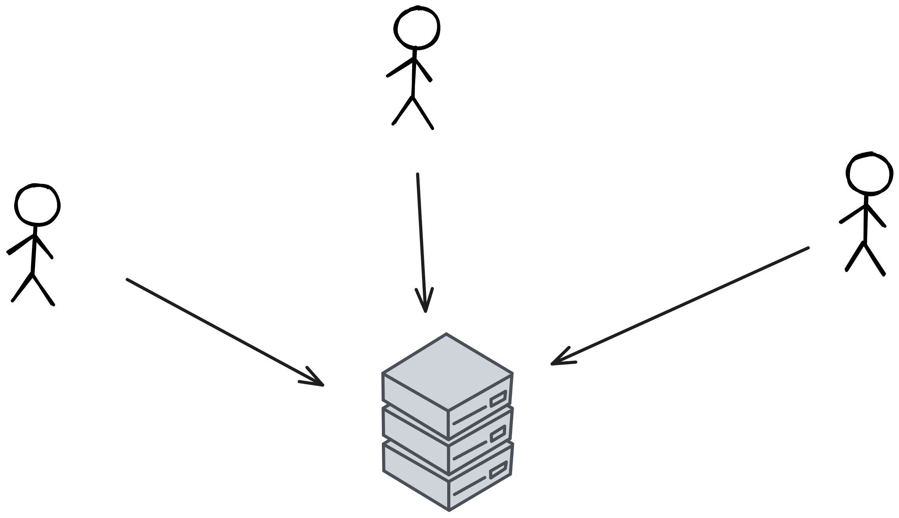As online payments become increasingly popular, the number of users and use cases continue to grow, leading to exponential growth in transaction data.
The capabilities of a single server are continuously challenged, and it starts to struggle:
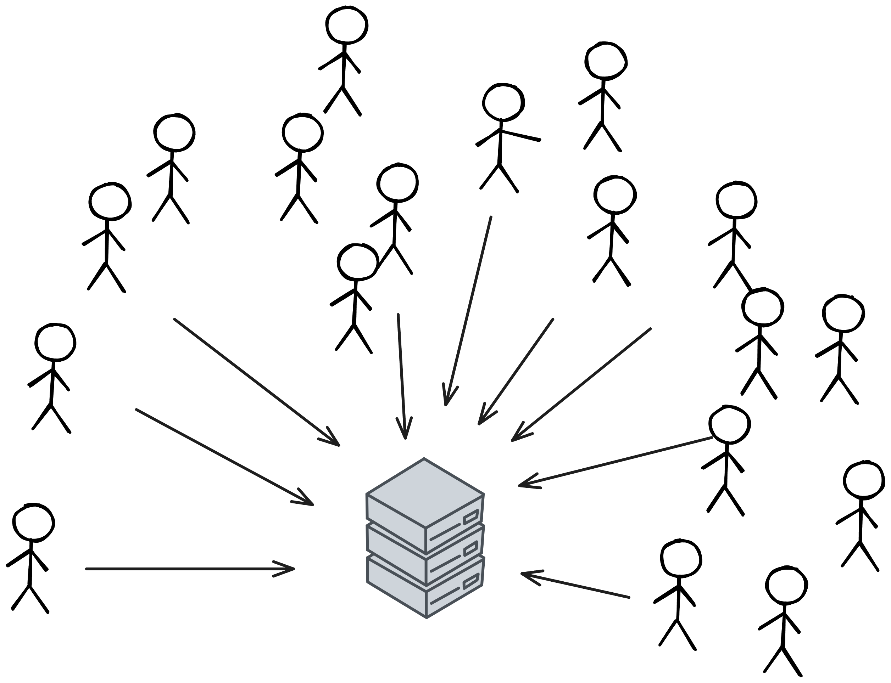For one thing, storage capacity is insufficient to meet the massive storage demands of transaction data; for another, during shopping frenzies like Double 11 and 618, system access volume surges, CPU loads continue to climb, and overload situations occur frequently. Even more severe, server failures sometimes occur, resulting in the entire system becoming paralyzed and transaction data being lost.
The growth in business is putting a heavy strain on the system, and to prevent system paralysis, the neutron star beings decide to scale and optimize the system:
They purchase one server to act as an "administrator" and several additional servers dedicated to data storage. When the administrator server receives transaction data, it forwards it to the servers responsible for data storage. Once one server is full, the data is stored in another server.
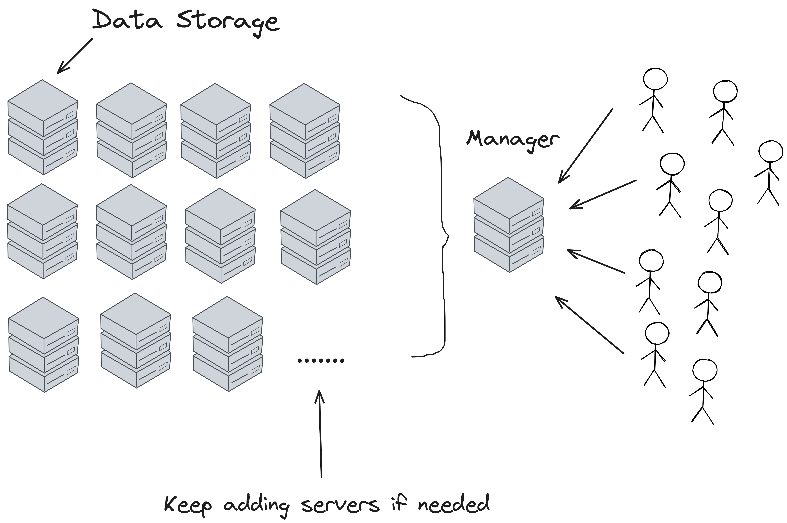If the administrator becomes overwhelmed, more administrator servers can be added. In this way, the system is finally expanded.
However, at this point, a group of hackers set their sights on Neutron Star Bank. After all, money is just a string of numbers, and by secretly infiltrating the bank's database to modify account balances and transaction records, they could achieve financial freedom.
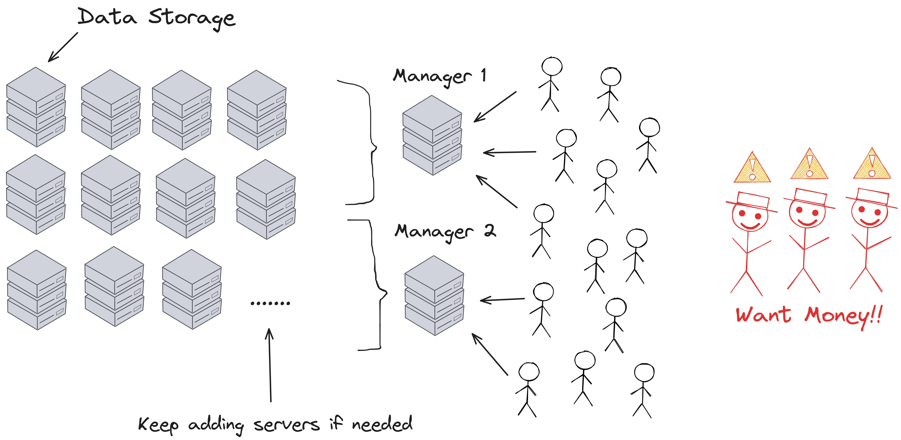Initially, the bank's system lacked proper protection measures, making it vulnerable to attacks.
After paying a heavy price, the bank realized the severity of the issue and began implementing a series of measures to protect their system: first, they purchased several servers for data backup, backing up data every 3 hours. Then, they deployed an independent sentinel monitoring system on the network, dedicated to protecting the system's security.
With these security forces in place, the system's safety was greatly enhanced, and hackers could no longer use their previous attack methods.
Since all of the servers were located within Neutron Star Bank's building, the hackers thought: if they couldn't break into the system, they might as well physically attack it 😎. They planned to borrow a large sum of money from the bank, then destroy the bank's servers. Alas, the servers would be dead, and there would be no evidence left.
Fortunately, the security at the bank's entrance was not to be trifled with; who would bring a bomb to a bank? The security intercepted the bomb, successfully preventing the hackers from physically destroying the servers.
This incident frightened the bank, as it became apparent that having the servers in the bank building was not safe. What should they do?
They needed to come up with a foolproof plan to ensure the security of the servers.
So, Neutron Star Bank decided to establish a dedicated data centre and independently protect all network devices, such as routers, switches, and interfaces.
The requirements for building the data centre were very strict: it could not be near railways, highways, airports, chemical plants, landfills, nuclear power stations, munitions factories, gas stations, or any other facilities posing safety risks. It also couldn't be located in flood-prone or earthquake-prone areas, nor could it be in areas with high crime rates. Despite these precautions, the bank still feared sudden natural disasters, so they built the data centre with flood protection and 8-level earthquake resistance.
In addition to finding a suitable location, the data centre had to meet many strict construction standards, including building materials, internal heating, ventilation, and air conditioning systems, lighting systems, fire suppression systems, lightning protection measures, and constant temperature and humidity control, among others.
If the hackers managed to cut off the power supply to the data centre, the entire system would be paralyzed, and even the most secure equipment wouldn't function without electricity.
To address this concern, two power plants were set up near the data centre to provide electricity simultaneously. Each power plant could meet the data centre's entire power demand, with a backup power supply in case both power plants experienced outages. Each power plant was equipped with an independent power distribution room.
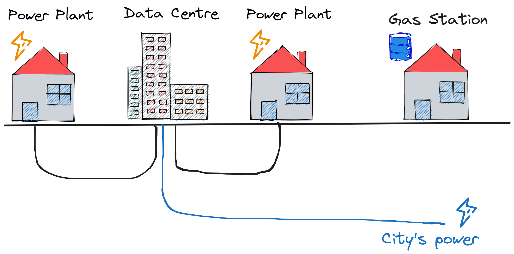No, it's still not reassuring enough. What if, after a city-wide power grid interruption, both power plants experience accidents and can't generate electricity?
No worries, the data centre is also equipped with a UPS room. This room houses a multitude of batteries that can support the data centre's full-load operation for over 15 minutes.
Even if hackers cut off the power supply to the data centre, it can still maintain operation for a period through the UPS uninterrupted power supply.
Can power be restored within 15 minutes? There's no rush. That's because the data centre is also equipped with generators and fuel storage tanks, capable of supporting full-load operation for more than 12 hours.
Additionally, the bank has signed agreements with at least two nearby gas stations to ensure diesel supply within 4 hours. Though relying on fuel delivery is not a long-term solution, it's more than enough to support operations for a week.
What if the fuel storage tanks catch fire, as they're full of oil?
The data centre's fire detection system consists of a temperature sensing system, a video system, and on-duty personnel keeping watch. Upon detecting a fire, the fire suppression system extracts a portion of gas and then releases heptafluoropropane. This substance is colorless and odorless, killing stealthily and invisibly — wait, no, it's actually colorless, odorless, low-toxicity, non-conductive, non-polluting, and non-corrosive.
Won't people inside be suffocated?
When the data centre's fire suppression system is activated, alarm bells ring, and the access control system automatically cuts off power, allowing personnel to evacuate the affected area. Even if they cannot leave in time, the data centre is equipped with a sufficient number of oxygen masks.
However, no matter how many safety measures are taken, a single data centre cannot guarantee the system's absolute security.
During the 9/11 attacks in 2001, Morgan Stanley's data centre in the World Trade centre was completely destroyed. However, thanks to a mature disaster recovery system, all business operations were restored the next day. Despite the total destruction of their 25-story office space in the World Trade centre and the emergency evacuation of over 3,000 employees, a secondary office was established within half an hour at the disaster recovery centre, and all business operations resumed the following day. Conversely, some companies had to file for bankruptcy due to inadequate backup disaster recovery systems.
You see, having another data centre would be beneficial in such situations.
This is what's known as a "dual-active data centre," where two data centres operate simultaneously. If one is destroyed, the other continues to function, leaving the system virtually unaffected.
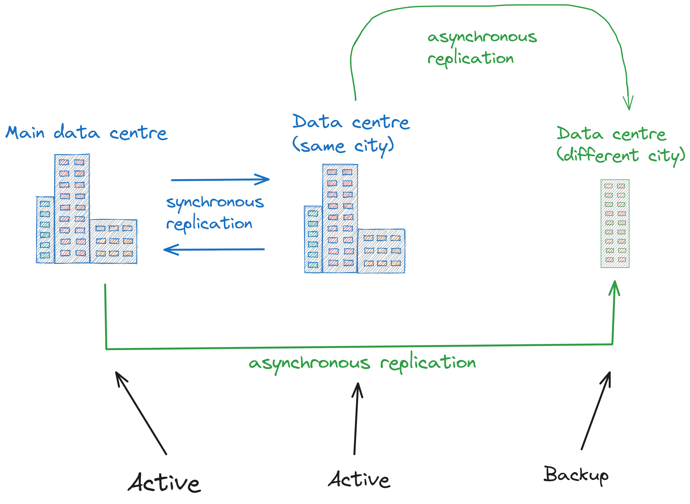What if, by chance, an asteroid strikes the very area where the data centre is located? Wouldn't everything be wiped out in one fell swoop?
No worries, there's a remote disaster recovery data centre. If both primary data centres fail, operations can be switched to the remote disaster recovery centre, which has the same configuration and is ultra-secure.
What if the remote disaster recovery data centre is also destroyed?
At that point, the system would truly be down, but the data would still be safe. That's because there's a cold backup in place, which doesn't run within the system but operates independently. The backup system performs incremental backups every 2 hours and is housed in several other cities.
Have you noticed? After all these preparations, the ultimate goal is singular: to ensure the smooth operation of the system and maximize its reliability as much as possible.
Although distributed systems are geographically distributed in different places with multiple data centres undertaking business. But all servers still need banks for protection. This is a centralized approach, and many people are calling for visibility, choice and reasonable control over existing networks and data. Users need the right to know who can access their data, how their data is used, and if users don't want to share certain data, we also have the right to refuse. Perhaps most importantly, users want their own data to be used for their own benefit. If you are interested in the history of this, you can take a look here first.
So what is the essence of blockchain?
A globally distributed network, a "decentralized" system, a "shared distributed" system, a "fault tolerant, disaster tolerant" system.
The concept of blockchain consists of two parts: "blocks" and "chains". Let's start with "blocks". Blocks are like pages in a ledger that contain some information. In the blockchain world, this information is usually transaction records, such as A transfers 10 bitcoins to B, which is a transaction. Packaging a certain number of transactions together forms a block.
Now let's look at "chains". The concept of chains is very simple, just connect these blocks in a certain order. With chains, we can trace the connection between each block. Each newly generated block is connected to the previous block to form a chain.
The full picture of the blockchain is: a series of blocks arranged in chronological order, connected together by a specific algorithm. This structure ensures the security and integrity of the data.
Next, we need to understand an important concept - encryption. In the blockchain, each block has a unique digital string called a "hash value". The hash value is generated by an algorithm called a "hash function". This algorithm is magical, even if only a small piece of information is changed, the hash value will change dramatically. This ensures the security of the blockchain, because tampering with any block information will change the hash value and affect all subsequent blocks.
Another key concept is "decentralization". In a traditional database, data is controlled by a centralized institution. This means that if there is a problem with this institution, the security of the entire system will be affected. The blockchain is different, it is jointly maintained by tens of thousands of computers around the world. These computers are called "nodes".
The decentralized nature of the blockchain means that it does not rely on a single centralized entity to maintain the data. Traditional databases are controlled by a centralized institution. In this way, if there is a problem with this institution, the security of the entire system will be affected. The blockchain, on the other hand, is jointly maintained by tens of thousands of computers around the world. These computers are called "nodes". For a transaction to be recorded on the blockchain, it must reach a consensus from most nodes. This brings many advantages, such as higher security, better privacy protection, lower operating costs, etc. On the blockchain, for a transaction to be recorded on the blockchain, it must reach a consensus from most nodes. This consensus mechanism ensures the transparency and security of the blockchain.
So how to reach a consensus? Here we take Bitcoin as an example. Bitcoin uses a consensus mechanism called "Proof of Work" (PoW). The core idea of Proof of Work is to let nodes participate in competition and compete for the right to keep accounts by solving a complex mathematical problem. Whoever solves this problem first has the right to package transactions into a new block and add it to the blockchain. At the same time, other nodes will verify this block and accept it after confirming that it is correct. This process is known as "mining".
The mining process ensures the security and decentralization of the blockchain. However, this method also has some problems. For example, it requires a lot of computing power and energy consumption. To solve this problem, other consensus mechanisms have emerged, such as "Proof of Stake" (PoS) and "Delegated Proof of Stake" (DPoS).
Proof of Stake (PoS) is a more environmentally friendly consensus mechanism. In a PoS system, a node's right to keep accounts depends on the amount of currency it holds. Nodes with more currency have a higher probability of obtaining the right to keep accounts. This method reduces energy consumption but may lead to uneven distribution of currency.
Delegated Proof of Stake (DPoS) is a variant of PoS. In a DPoS system, token holders can delegate their token interests to other nodes, allowing them to keep accounts on their behalf. This can further reduce energy consumption while improving system efficiency and security.
Blockchain is like a public, secure, distributed ledger. It can be used to record transactions, store data, and more. Blockchain technology has already been applied in many fields, such as finance, the Internet of Things, healthcare, and more. Blockchain technology has a lot of potential for the future. Other technologies such as AI and VR improve productivity. Blockchain changes the way that work is organized.
There are two main points:
First, use technology to solve the "trust" problem.
Second, achieve "autonomy" based on technology.
For example, in a massive multiplayer online game set many years in the future like Ready Player One, character and equipment assets must be stored on the blockchain, otherwise game companies or hackers could tamper with the data at will.
In the world of blockchain, you only need a blockchain account identity to join any network without permission, without sacrificing privacy or paying costs to use a service. Unlike the Web2 era when commercial value was completely controlled by major platforms, Web3 is built on decentralized networks. Application developers are responsible for developing and deploying to the blockchain platform. Once deployed on the blockchain, they cannot monopolize and use user data. This will fundamentally change business logic and the attribution of commercial value, creating a fairer internet business environment and breaking the monopoly of industry giants.
The blockchain emphasizes equality, fairness, democracy and autonomy more, which is completely inherited from the idea of communist society. In the blockchain network, the mechanisms of shared interests and democratic autonomy will curb the emergence of all monopolistic giants. The way to accumulate wealth by exploiting the surplus value of users and content creators has been completely subverted.
The application scenarios of the blockchain are very extensive, covering all aspects of daily life, health care, energy charity, elections and finance:
Digital currency: The most famous application of blockchain is digital currency, such as Bitcoin and Ethereum. Digital currency is a kind of virtual currency based on blockchain technology, which can be used for point-to-point transactions without going through centralized financial institutions.
Smart contract: A smart contract is a blockchain-based, automatically executed contract. It can automatically trigger corresponding operations when certain conditions are met, thereby reducing the cost and risk of contract execution. Platforms such as Ethereum support smart contracts, enabling developers to build various decentralized applications (DApps) on the blockchain.
Supply chain management: Blockchain can be used to track the circulation of goods in the supply chain. This can improve the transparency of the supply chain, prevent counterfeit products, and reduce costs.
Identity authentication: The blockchain can be used as a decentralized identity authentication system to help users verify their identity on the network. This can reduce dependence on centralized institutions and improve privacy protection.
Copyright protection: Blockchain can be used to store and verify intellectual property information to prevent piracy and counterfeiting. This is very valuable for creators and intellectual property owners.
Cross-border payments: Digital currencies can be used to make cross-border payments, which can reduce the fees and time costs of remittances.
- Internet of Things: The blockchain can be used to record and verify the data of Internet of Things devices to ensure data security and integrity.
- Healthcare: Blockchain can be used to store and share medical data, improve data security and availability. This helps to improve medical standards and reduce medical costs.
- Energy trading: Blockchain can be used to record and verify energy transactions, such as solar energy and wind energy. This helps to achieve decentralization of the energy market and improve energy utilization efficiency.
- Election voting: Blockchain can be used to build a transparent and secure election voting system. This can prevent election fraud and increase democratic participation.
- Charity: Blockchain can be used to track the flow of charitable donations to ensure that donations are truly used for those in need. This helps to increase the transparency of charities and enhance public trust in charitable organizations.
- Financial services: Blockchain can be used to build decentralized financial service platforms such as lending, insurance, and securities. This can reduce the cost of financial services and improve the efficiency and security of the financial system.
- Automotive industry: Blockchain can be used to record the life cycle information of vehicles such as production, sales, and maintenance. This helps to improve the transparency of the automotive industry and prevent fraud in the used car market.
- Real estate: Blockchain can be used to record real estate transaction information, simplify real estate transaction processes, and reduce transaction costs. In addition, real estate transactions can be automated through smart contracts.
- Education: Blockchain can be used to store and verify educational information such as degrees and certificates. This helps to prevent degree fraud and improve the credibility of the education system.
- Social media: Blockchain can be used to build decentralized social media platforms to protect users' privacy and data security. In addition, blockchain can also be used to incentivize content creators and achieve fair income distribution.
- Game industry: Blockchain can be used in the game industry for virtual asset transactions, copyright protection, and more. Through blockchain technology, players can have truly digital assets in the game and realize cross-game asset circulation. resources: Blockchain can be used for human resource management, such as recording employees' work experience, skills, and performance. This helps simplify the recruitment process, improve recruitment efficiency and accuracy.
- Legal services: Blockchain can be used to store and verify legal documents such as contracts and wills. This helps improve the efficiency of legal services and reduce the cost of legal services.
- Food safety: Blockchain can be used to track the circulation of food in the supply chain to ensure food safety and quality. This helps prevent food safety issues and boost consumer confidence.
The above are only some of the applications of blockchain technology in various fields. With the development and innovation of technology, blockchain will show great potential in more fields. At the same time, we should also pay attention to the challenges brought by blockchain technology, such as energy consumption, network congestion, privacy protection, and other issues. Continuous discussion and improvement of blockchain technology will help create a safer, more transparent and more efficient digital world.
Ethereum is a decentralized platform that allows developers to build various applications on top of it. You can imagine it as a global computer that does not rely on any central server. This computer runs smart contracts - programs that automatically execute predetermined tasks.
First, you can imagine it as a giant computer that can run all sorts of applications. But this computer is not a physical entity, but a virtual network maintained by many people. These people, whom we call "nodes", are distributed all over the world and collectively maintain the Ethereum network.
So what's the difference between Ethereum and computers we commonly use? The biggest difference is that Ethereum is decentralized. That means data is not stored on a central server, but distributed across many different nodes. This makes the data difficult to tamper with and attack because an attacker would need to compromise thousands of nodes simultaneously.
Now we know Ethereum is a decentralized and giant computer. So how do we run applications on this computer? The applications running on Ethereum are called smart contracts. A smart contract is essentially a piece of program code that executes automatically when certain conditions are met. This automatic execution feature makes smart contracts applicable in many fields like finance, gaming, and voting.
As a simple example, we can use a smart contract to implement an automatic payment system. For example, you need to pay someone but you want to pay only after they complete a task. You can deposit the money into the smart contract and set a trigger condition. When the other party completes the task, the smart contract will automatically transfer the money to them. This way you don't have to worry about them taking the money without doing the work or you forgetting to pay.
In order to run smart contracts on Ethereum, we need a digital currency as "fuel". This currency is called "Ether" (ETH for short). Every time we execute an operation on Ethereum, we need to consume a certain amount of Ether. This Ether is awarded to the nodes that maintain the Ethereum network as a reward. This process is called "mining".
Smart contracts on Ethereum can not only perform simple transfers, they can also create an entirely new digital currency, which we call a token. Tokens can represent anything, like stocks, points, properties, etc. Through smart contracts, we can easily issue our own tokens on Ethereum and then use these tokens to transact.
There are many types of tokens on Ethereum, the most common being ERC-20 tokens. ERC-20 tokens are tokens that follow a uniform standard, which specifies how the tokens are created and transacted. With this standard, different tokens can interexchange and transact with each other, just like fiat currencies from different countries can still be exchanged.
In addition to ERC-20 tokens, there is also a token standard called ERC-721. These tokens are unique in that they represent unique and non-fungible assets. These assets can be artwork, collectibles, properties, etc. With ERC-721 tokens, we can transact unique assets on Ethereum without worries of forgery or replication. This is also why many crypto arts and collectibles are traded on Ethereum.
So what are the practical applications of Ethereum? In fact, Ethereum has had an impact in many fields. For example:
Ethereum can be used for financial services. Through smart contracts, we can create decentralized financial products such as lending, insurance, and derivatives. These financial products do not require intermediaries, so they can reduce costs and improve efficiency. At the same time, the transparency of smart contracts can also reduce the risk of fraud.
Ethereum can be used for supply chain management. Through smart contracts, we can track information about the source and distribution channels of goods in real time. This allows consumers to ensure that the products they buy are genuine and reliable, and allows companies to better monitor supply chains and improve efficiency.
Ethereum can also be used for identity authentication. Through smart contracts, we can create a decentralized identity system that allows users to share authentication information across different platforms. This way, users do not have to resubmit their personal information each time, while still being able to protect their privacy.
Although Ethereum has many advantages, it also has some limitations. For example, Ethereum's current transaction speed and scalability still needs to improve. In order to solve these problems, the Ethereum team is carrying out a series of upgrades. Ethereum 2.0 aims to address the performance bottlenecks and scalability issues in Ethereum 1.0. This upgrade will have the following impacts on Ethereum's performance:
- Higher throughput: Ethereum 1.0's current transaction processing speed is limited to around 30 transactions per second. Ethereum 2.0 introduces sharding technology, which splits the network into multiple independent sub-chains, greatly improving the overall network's transaction processing capability. Ethereum 2.0's throughput is expected to reach thousands of transactions per second.
- Lower latency: In Ethereum 1.0, each block takes about 15 seconds to produce. This means that users have to wait for their transactions to be confirmed. Ethereum 2.0 will adopt a new consensus mechanism to reduce block time and thus reduce users' waiting time for transaction confirmation.
- More eco-friendly consensus mechanism: Ethereum 1.0 uses the energy-intensive Proof of Work (PoW) consensus mechanism. Ethereum 2.0 will gradually transition to the more eco-friendly and efficient Proof of Stake (PoS) consensus mechanism. Under the PoS mechanism, validating nodes (validators) have to stake a certain amount of Ether as collateral to gain block production rights, which reduces energy consumption and improves network security.
- Higher security: Ethereum 2.0 introduces a new role called "validators," which replaces the miners in Ethereum 1.0. By requiring validators to stake a certain amount of Ether to participate in consensus, it becomes more costly to attack the Ethereum 2.0 network, thus improving security.
- Higher scalability: Ethereum 2.0's sharding technology and other optimizations can improve the network's scalability.
While Ethereum has brought many innovations to the blockchain world, it still has some shortcomings, mainly including the following points:
- Scalability issues: Although Ethereum has upgraded its scalability, this does not mean that the scalability issue is permanently solved. This is not a one-time engineering effort, if the number of users continues to increase, engineers still need to further scale and improve Ethereum.
- Transaction fees are still relatively high: Because Ethereum's processing capacity is limited, users usually have to pay higher fees for their transactions to be processed faster. This has led to expensive transaction fees on Ethereum, making it difficult for some users and developers to bear. During network congestion, transaction confirmation may take a long time, which can also lead to rising transaction fees.
- Centralization issues: Although the original intent of blockchain is decentralization, traditional blockchain technology has some degree of centralization issues, which gives some nodes too much control over the entire network, bringing security and manipulation risks.
- Privacy protection issues: Traditional blockchain technology has privacy protection issues. Once transaction data is recorded on the blockchain, it will be permanently saved, which will pose a great risk of privacy leakage.
- Development and maintenance costs: Building and maintaining blockchain applications may require high development and operational costs. In addition, the constant development of blockchain technology means that developers need to continually update and optimize existing applications.
Compared to Ethereum, IC has the following features that can solve some of Ethereum's issues:
- Infinite scalability: IC uses a technology called "Chain Key" that allows the network to run more efficiently. IC also divides the network into many subnets, each subnet handling a portion of messages.This greatly improves the network's processing capability to better cope with high transaction volume.
- Lower transaction fees: Due to IC's better scalability, the network can process more transactions, meaning users no longer need to pay high fees to speed up transactions. Therefore, Dfinity's transaction fees will be relatively low.
- Consensus algorithm: IC uses a consensus algorithm called PoUW, which is a random consensus algorithm based on BLS threshold signatures. Compared to other Proof-of-stake (PoS) or Proof-of-work (PoW) systems, PoUW aims to provide higher security and performance.
- Scalability and performance: IC's design gives it a high degree of scalability and performance. Through adopting a tiered architecture, subnets and parallel processing technologies, IC's Internet Computer can support a large number of concurrent transactions and smart contract executions. IC's goal is to achieve higher throughput and lower latency compared to other public chains.
- Interoperability: IC's Internet Computer is designed to be a platform that supports various decentralized applications and services. Although interoperability is not its primary focus, IC's design allows developers to easily build and deploy various applications on the Internet Computer, thereby enabling interoperability across applications.
- Simpler development process and easier maintenance: IC aims to lower the learning cost and development difficulty for developers. It allows developers to write smart contracts using more familiar programming languages. This makes it easier for developers to get started and develop decentralized applications.
- Better security: IC also provides a network autonomy mechanism whereby the network can self-repair and upgrade, which helps improve the overall security and stability of the network.
- Security and decentralization: IC's consensus algorithm and network design aims to achieve a high degree of security and decentralization. Compared to other public chains, IC uses some innovative technologies such as threshold relays and distributed key generation to improve the network's resistance to attacks.
- Developer experience: IC provides a set of friendly development tools and resources, including the Motoko programming language and SDK. Code debugging can also be done locally without the need for a testnet. This makes it easier for developers to build and deploy applications to the Internet Computer. Compared to other public chains, IC is committed to simplifying the development process of decentralized applications.
IC aims to become an infinitely scalable, decentralized global compute infrastructure. IC's goal and vision: IC's goal is to create a new type of Internet infrastructure that can support various decentralized applications while having high scalability, security and performance. Like other public chains, IC is committed to solving the limitations of traditional blockchain technology; but its vision is to create a larger Internet ecosystem, not just a blockchain platform.
This is a rather serious problem. Although the Internet can store your data, your data will not necessarily be permanently preserved by the Internet. Because now most applications' back-ends are "independent". Each company has its own maintained servers, either self-built computer rooms or cloud services. All users transmit network information and interact with other users by accessing their servers. Once the company announces service termination, your data will be gone.
For example, TikTok is like this:

Each company's servers provide users with their own network services:

While data brings convenience to the information age, it also leads to data abuse, personal privacy leaks, infringement of corporate trade secrets and many other problems. Your data has been dumped into their servers in one swoop. They control the servers and have the final say in how to handle the data in the servers. Although engineers are only responsible for studying AI recommendation algorithms and do not peek at your data. Only AI knows what you like, stored in servers, and there are too many user data to see. But when they want to find someone, the management can still see all kinds of data.
The data contains your privacy, what you bought today, what you chatted about, what you like to watch, what you want to eat at night, taste preferences, height and weight when buying clothes, map positioning... can all be analysed through data. They can completely monitor your every move on the network.
You may say: Who asked them to see my data! Indecent! Help! Is anyone in charge?
But I still have to say a fair word. In fact, when you first installed the app, they would let you check a "User Agreement" or more euphemistically called "User Experience Improvement Program". Although almost no one will read the entire "User Agreement" in full, you have already "agreed" to give them your usage data. Otherwise, you can't use it!😡
Although on the surface, you agreed to the "User Agreement" first, and then they used your data to improve the experience.
No one knows what they will have done with the data.
We already know about PRISM, Facebook's leak of hundreds of millions of user data in 2018, Amazon was fined 746 million euros by the EU privacy regulator in July 2020 for violating the EU General Data Protection Regulation, which was also the largest data privacy leak fine in EU history. Chinese takeaway platforms such as Meituan and Ele.me have also been exposed to user information leaks and resales, down to order contents, addresses and other private information; Li Yanhong: Chinese people can be more open to data privacy and are willing to exchange privacy for efficiency...
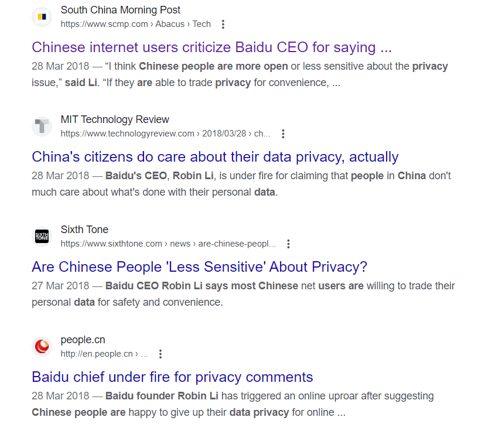(Screenshot of Li Yan Hong's claim on the internet:"Users are willing to exchange privacy for efficiency!)
And they think that unfavorable content to them can be deleted directly without your consent. (Of course, illegal content must be deleted)
The current situation of the Internet can be said to be: When I open my mobile phone, my apps want to read through my private information. Otherwise, you can't use it.
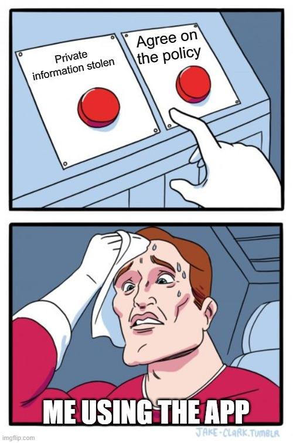The large-scale disclosure of personal privacy data has become a major global social problem in the era of big data. Internet platforms massively collect user data and centrally store users' personal information for a long time. Once the data is leaked, it will be a large-scale group incident, not only violating the user's right to privacy, infringing on the life and property safety of citizens, but also causing unpredictable economic losses to Internet companies themselves. The negative impact on corporate reputation after data leakage is also difficult to eliminate.
Just last week, on March 21, 2023, Pinduoduo was forcibly removed from Google Play and prompted existing Pinduoduo users to uninstall it as soon as possible. This was the first time Google prompted users to uninstall an app. Subsequently, the well-known antivirus software laboratory Kaspersky confirmed that Pinduoduo recklessly collected user information by exploiting vulnerabilities in the Android system, cracked system shielding mechanisms, tampered with mobile phone system records, concealed its own whereabouts, ran in the background of the system to monitor mobile phones, evaded system cleanup processes, and read mobile phone input method information.

(A famous shopping app in China: Pinduoduo. Had been exposed that they implemented malicious code in users' device for purpose of tracking and collecting users' information)

The malicious behaviours and functions of Pinduoduo including:
- Collect user's images and social relationships.
- Install apps in the background when users clicked on certain links
- Reading information from user's phone keyboard.
- Produce fake notifications by hijacking Alarm,wallpaper and calander.
- Making fake icons in the main page which users are unable to uninstall, keep running and consume battery in the background.
- Delete record of access to system information when Pinduoduo's app is running, or a virus detecting app is on.
- Act as communication app such as Wechat and mislead users to run it.
- Stealing message records from communication apps, browser history, ban users from using apps from competitors.
Damn it! It's so hard to store information, it's better to engrave it on stone!
The essence of this phenomenon lies in the fact that users do not have their own data rights. Your own data, you don't even have the data rights!
Users should have the right to know how their personal information is collected, used and shared, the right to decide how their personal information is used and shared, and the right to control how their personal information is collected, stored and used. Then if I want to delete some privacy data, hey hey, you don't even know if they will really delete the content you want to delete. They can even hide the information and secretly save it themselves.
Unlike traditional currencies, Bitcoin is completely virtual.
Bitcoins exist hidden within the exchange of value between senders and recipients. Bitcoin users have keys that allow them to prove within the Bitcoin network that they have authority to transact bitcoins, which can then be spent, bought, sold and exchanged for other currencies once decrypted. Due to Bitcoin's fast, secure and borderless nature, in some sense Bitcoin represents the perfect form of an internet currency.
Bitcoin is a decentralized peer-to-peer network system. Therefore, there are no "central" servers or central points of control.
Bitcoin pioneered a solution to the problem of distributed computing.
Satoshi Nakamoto's invention was also a feasible solution to the "Byzantine Generals Problem", an unsolved problem in distributed computing. In simple terms, the problem involves trying to achieve consensus on an action protocol through communication within an untrustworthy network that has potential threats. Nakamoto's solution was to achieve consensus without a central authority using the concept of proof-of-work, which represented a breakthrough in distributed computing science and has far surpassed mere currency applicability.
There is a lot of information about Bitcoin online, so I won't go into a detailed explanation here.
Overview
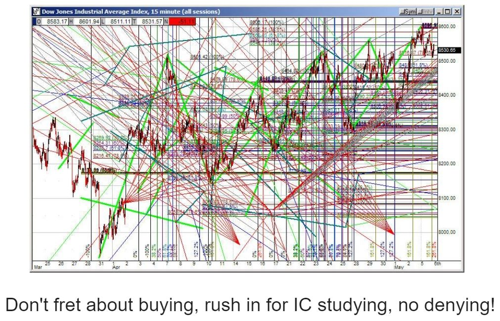What are IC and ICP?
-
IC stands for Internet Computer, a high-speed blockchain network specifically designed for decentralized applications.
-
ICP refers to the Internet Computer Protocol and also serves as the name of the token.
The emergence of the Internet Computer (IC) has brought revolutionary changes to software development. It allows developers to build applications directly on a decentralized cloud, free from dependence on traditional centralized cloud services, reducing development and operating costs. The security and high performance of IC greatly improves the security of applications and services.
The vision of IC is to become a global computing platform that provides unlimited scalability, security and decentralized governance.
IC is built with high performance and decentralized cloud services through technologies such as sharding, VRF random numbers, BLS threshold signatures, DKG, and embedded DAO governance models.
How high is its performance?
The current confirmed block rate of subnets is 36 blocks per second.

For every second, 6,355 transactions could be handled.

Here you can see the real time statistics of the IC network. While the number of the subnet keeps growing, the performance of the network will also get higher. (TPS is unlimited!)
The new era of software development
The Internet Computer (IC) is a brand new blockchain design built on the Internet Computer Protocol. Its core part is divided into 4 layers, running on nodes of each subnet. By running the core protocol, the nodes of a subnet implement a blockchain-based replicated state machine that progresses independently of other subnets (but communicates asynchronously with them). IC adopts a multi-subnet shards structure, which overcomes the performance bottlenecks of traditional blockchains while maintaining decentralization. This architecture allows IC to generate subnets (shards) indefinitely, allowing IC to scale almost limitlessly.
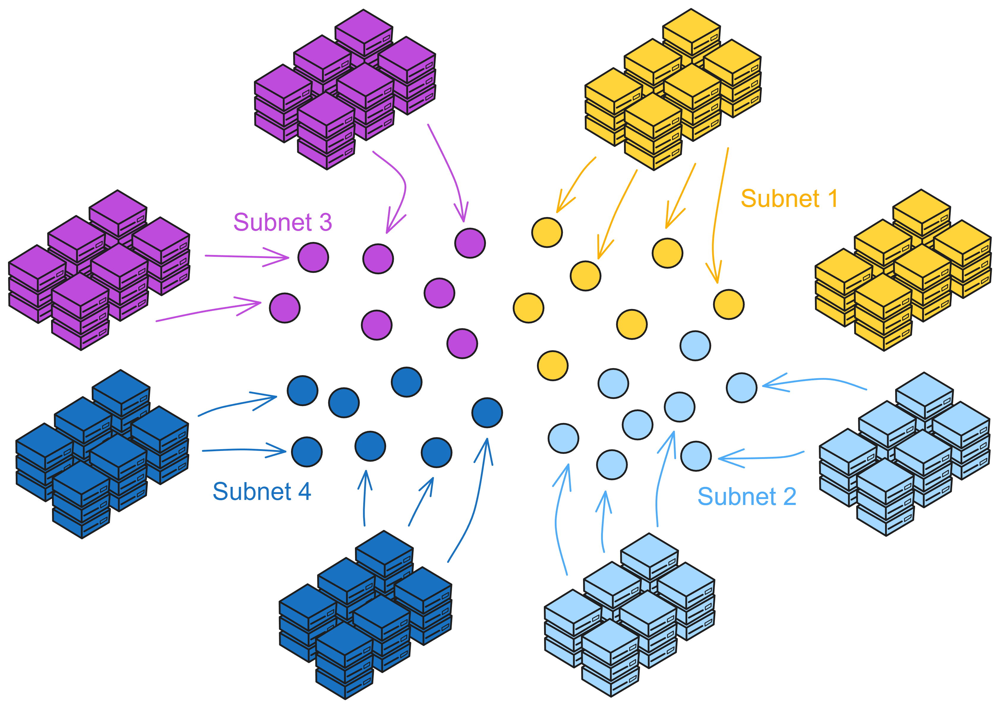IC scales horizontally by creating new subnets, just as traditional cloud infrastructure scales by adding new machines. Once IC's Network Nervous System (NNS) decides to create a new subnet, it will select a group of spare nodes that have not been allocated to any subnet and create the initial configuration for the new subnet. Then, the selected nodes form a new subnet blockchain.

IC eliminates the speed, storage cost and computing power limitations of smart contracts on traditional blockchains. Making smart contracts fully decentralized, from front-end to back-end can be hosted on the blockchain. IC's smart contracts are called Canisters. Canisters can store data, perform general computing on data, and provide a complete technology stack to provide network access services directly to end users.
Computing and storage overhead uses a "reverse gas model", and gas fees are paid by the developer who deployed the Canister by exchanging native tokens ICP into Cycles. ICP tokens are also used for governance: IC is managed by a decentralized autonomous organization (DAO). IC embeds the DAO system as its base: Network Nervous System. The DAO can decide to change IC's network topology and upgrade the IC protocol.
IC can also interoperate with other blockchains. IC's chain key cryptography enables it to interact with other blockchains and integrate other cryptocurrencies.
IC uses WebAssembly (WASM) as the standard for code execution, so developers can write smart contracts in a variety of popular programming languages (such as Rust, Motoko, Java, etc.).
Traditional IT developers face many problems: they have to go through a series of hurdles such as multiple commercial cloud services, cloud tools, proprietary and open source variants of operating systems, databases and firewalls, virtualization technologies, software development platforms, etc., to address the high customization of assembling systems, the labor costs of specialist developers needed to maintain them, and related vendor relationships, making it expensive and difficult to change, migrate and adjust old systems as needs change. The result is high development and operating costs, and security issues with centralized data storage.
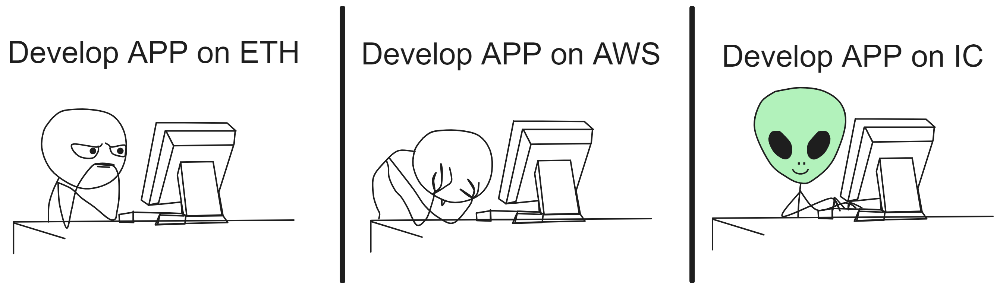IC allows developers to build applications, enterprise systems and Internet service apps in an open world. Based on the decentralized blockchain concept, it ensures that it can operate safely and stand the test of time. IC can automatically scale, resist attacks, and never go down. This novel design allows developers to focus on creating new applications and services without worrying about the security, cost and scalability of the underlying infrastructure. This will have a profound impact on the new era of software development.
Architecture
IC's architecture is unique:
The nodes in each data centre are virtualized into many replicas through the node software IC-OS, and then some replicas are randomly selected to form a subnet .
A subnet consists of nodes from multiple data centres. Each node establishes a TCP session with IPv6 and connects to NNS nodes and other nodes in the same subnet.

NNS (Network Nervous System) is the governance system embedded in IC, a DAO. Anyone who staked ICP can vote on proposals on NNS.
The nodes of the Bitcoin network can join whenever and wherever they want, but the problem is that the confirmation of transactions is too slow; the consortium blockchain first determines several nodes in the network, and then these few fixed nodes reach consensus, the speed is fast. IC combines the advantages from both, like a consortium blockchain composed of several fixed nodes to form subnets, the consensus speed between nodes (replicas) is very fast, and controlled by a DAO: NNS, to control subnets and nodes (replicas). Win-win.
IC integrates a DAO at the bottom layer of the blockchain protocol: a DAO-controlled network. This DAO controls each subnet, configures the network topology, creates subnet public keys, and upgrades the protocol version of replicas. Therefore, all NNS decisions are made by community members, and the voting weight of community members is determined by the amount of IC native governance tokens they stake in NNS.
If the proposal is approved by voting, the Canister in NNS will automatically execute the according decision. For example, if a proposal to change the network topology is approved, the NNS will automatically update the registry Canister with the new configuration.
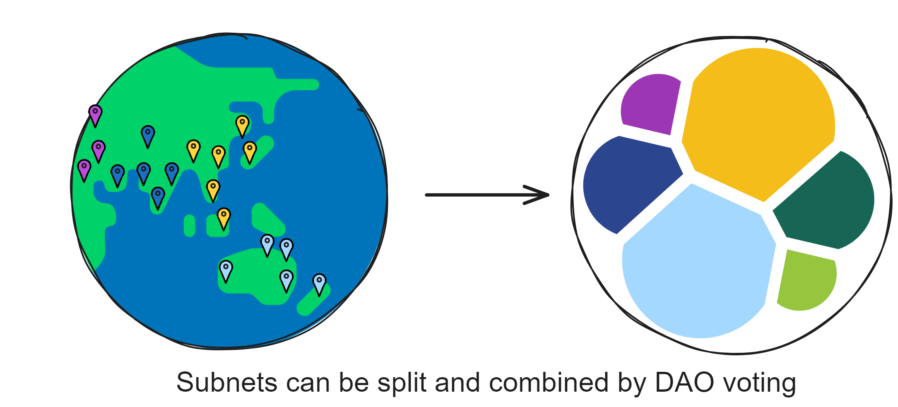NNS is also a decentralized governance system that helps the IC network achieve self-evolution. The purpose of NNS is to manage the Internet Computer network in an open, decentralized and secure manner. It is a system subnet of IC that controls IC subnets. It can also upgrade node protocols; adjust the exchange ratio of Cycles to ICP; in extreme cases, it can even freeze malicious Canisters to protect the network.
Replicas can be understood as "virtual nodes" virtualized in subnets. In the following content, we will call IC "nodes" as replicas.
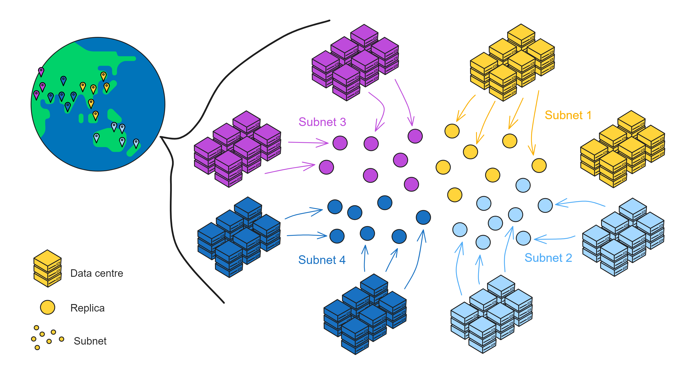
IC's subnets are similar to the idea of sharding. Sharding is a blockchain scalability solution. Take Bitcoin as an example. Nodes all over the world are competing for the accounting rights of a block, which is equivalent to a network covering the entire earth. If all nodes in Asia constitute a "Bitcoin subnet", Europe, Africa, America and Oceania also constitute their own subnets. Then consensus is reached within the subnet, with relatively fewer nodes and shorter communication distances, which can improve performance.
IC consists of many subnets, without the concept of mother network, main chain, side chain, beacon chain, etc. Each subnet is equal (except NNS). Each subnet runs independently, reaches consensus within the subnet, and there is no "global consensus" like Bitcoin. Different subnets synchronize and generate blocks in parallel. It can be understood that each subnet is a blockchain, and many chains together constitute IC. Cross-subnet communication is solved by Chain Key at the bottom layer of IC. Developers and users do not need to worry about which subnet the smart contract is deployed in, how to communicate across subnets, etc.
Chain Key is the core technology behind the Internet Computer that solves the problem of inter-subnet communication of IC. Chain Key allows each subnet to generate its own unique subnet public key (or Subnet Key) based on the root key. This is the underlying technology for IC's unlimited scalability.
Each subnet has a public key of only 48kb. Anyone can verify that the message they receive is from the IC network and has not been tampered with. Of course, various IoT devices and other blockchains can also verify information from IC. In comparison, when verifying traditional blockchains such as ETH, since each block is signed by different nodes, the device needs to synchronize hundreds of GB of signature data. In IC, all replicas sign a block together. Therefore, the device only needs to save a unique 48kb public key to verify each block.
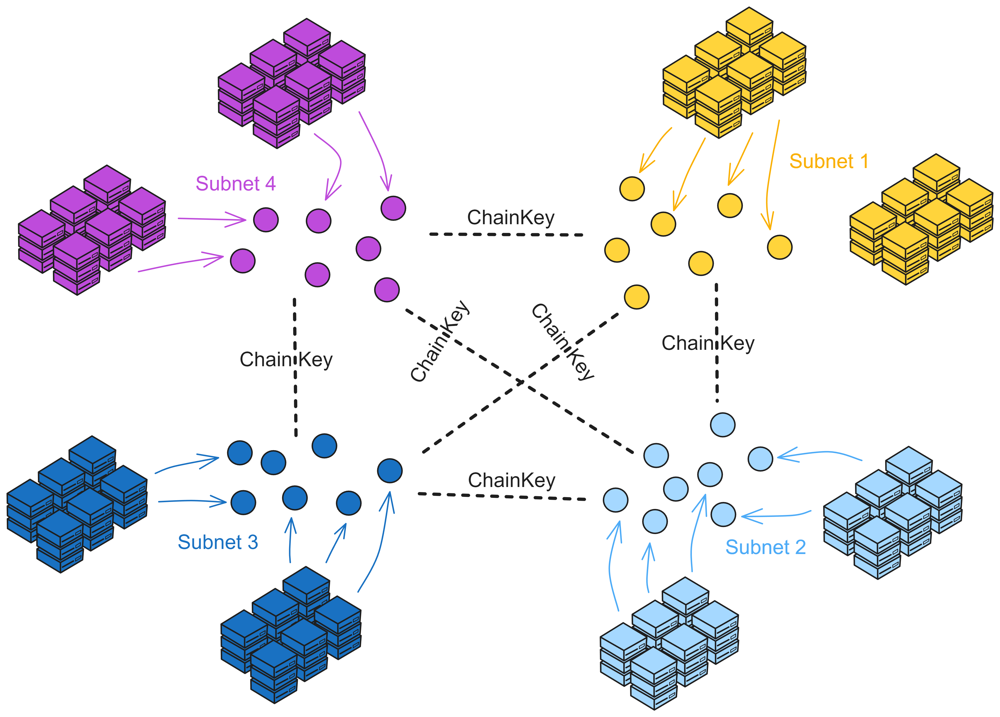Subnets can dynamically increase, delete, merge and split according to the network resource usage. The number of subnets has no upper limit, so theoretically it supports "infinite expansion" by adding subnets around the world.
But who decides the splitting and reorganization of subnets? NNS!
NNS is a special subnet, just like other subnets composed of some nodes. NNS can manage other subnets. However, NNS has more nodes than other subnets, so its security is naturally higher than other subnets. Becoming a node in a data centre, which subnet a node joins, which nodes make up a subnet, selecting a few nodes to create a new subnet, splitting a subnet into several subnets, etc., these operations require NNS permission.
The architecture of many subnets allows IC to scale infinitely.

The core part of the IC protocol is divided into 4 layers, running on the nodes of each subnet. Now we turn our perspective into the interior of the subnet to take a look at the core protocol of IC. For easy understanding, I change the top view of the subnet to a side view; the purple square blocks represent subnets, and the blue spheres represent replicas in the subnet.
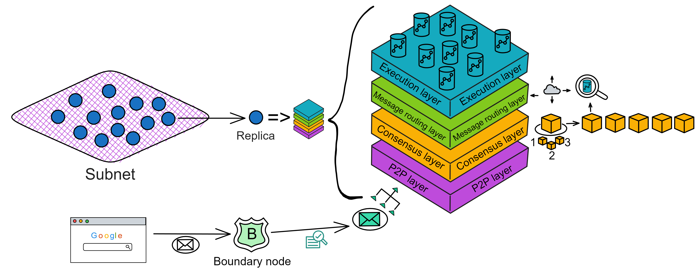The IC core protocol has a total of 4 layers, and each replica has this 4-layer structure. From bottom to top are the P2P layer, consensus layer, message routing layer, and execution layer:
- P2P layer collects and sends messages from users, other replicas in the subnet and other subnets. It ensures that messages can be delivered to all nodes in the subnet to ensure security, reliability and elasticity.
- Consensus layer reaches consensus within the subnet on the order in which various messages are processed. Then these blocks are passed to the message routing layer.
- Message routing layer forwards messages. After the consensus layer finalizes the block, the corresponding payload will be passed to the message routing layer. The message routing inputs the execution layer.
- Execution layer is where the Canister runs. The execution layer updates the state of the corresponding Canister in the replicated state machine, completes the computing task of the smart contract and passes the output to the message routing layer for processing.
P2P layer
The P2P network is like a large party, and the participants in the party are replicas in the subnet. At this party, people want to share the latest news and hope that as many people as possible can hear this news. However, it is tiring for everyone to shout out the complete message loudly (occupying network resources). We can adopt a more efficient approach.
This approach is the advertise-request-deliver mechanism. Just like at a party, someone (replica) loudly announces: "Hey, I have big news to share!" This is a small announcement. After hearing this announcement, others (other replicas) who heard and think that the message is important will come over (request) and ask that person to tell them the specific content of the message (deliver). This process may sacrifice some time (delay) but can save energy (reduce bandwidth usage).
If this party is very large, such as a huge music festival. In such a huge event, the advertise-request-deliver mechanism will run on an overlay network. This overlay network is like a large circle of friends, and everyone only shares messages with their good friends (peers).

When someone wants to broadcast a message, he will first tell his good friends about the announcement of the message. Those good friends, upon receiving the announcement, may request the delivery of the message and, under certain conditions, tell their good friends about the announcement of the message. This is like a gossip network.
The P2P layer can effectively reduce bandwidth usage and achieve high throughput at the cost of some latency by using the advertise-request-deliver mechanism and running on the overlay network.
Learn more about how the IC P2P layer works here.
Consensus
Consensus is reached within the subnet by replicas.
The task of the IC consensus layer is to sort incoming messages to ensure that all replicas process incoming messages in the same order. These messages are communications between users and Canisters, communications between Canisters, and the order of these communications.
By sorting replicas with unpredictable random numbers, select who to make blocks first. If the selected replica is honest and has no problems, it will package the block and broadcast to everyone for verification. If everyone agrees that there is no problem, they will provide their own notarization shares. After the threshold of two-thirds of the notarization shares is reached, a notarization of this block is formed. If most replicas have only made a notarization for one block, everyone will finalize and make a confirmation of the block.
The consensus protocol of IC satisfies: low latency (almost instant finality); high throughput; robustness (in the event of replica or network failures, latency and throughput will drop slightly instead of directly crashing and shutting down).
Learn more about how the IC consensus layer works here.
Message routing
In each round of IC, the consensus layer packs incoming messages into block payloads. After the consensus layer's final confirmation, the corresponding payload is passed to the message routing layer. The message routing component receives a message to be processed from consensus. Message routing routes the message to the corresponding Canister input queue. It then triggers execution. After execution is complete, the Canister places the result in the output queue. Finally, the output is passed to the message routing layer to send out.
The message routing layer can also communicate between subnets. This is called cross-subnet messages or XNet messages for short.
Another key function implemented by the message routing layer is state authentication. In each round, the subnet performs BLS threshold signature on the state changed by the subnet in this round. This authentication can be used by subnets to verify the authenticity of a data flow from one subnet to another, and also allows users to submit responses to messages submitted previously before reading. State authentication and secure XNet protocols enable Canisters to communicate securely and transparently between subnets, a challenge faced by any sharded blockchain.
Note that the consensus layer and the message routing layer are independent. Forks happened in consensus have already been resolved before incoming payloads. And the consensus layer can proceed to the next round in advance without keeping exactly the same progress as the message routing layer.
Learn more about how the IC message routing layer works here.
Execution
The basic computing unit in IC is called a Canister. IC provides a runtime environment that allows programs to run in Canisters and communicate (via messages) with other Canisters and external users.
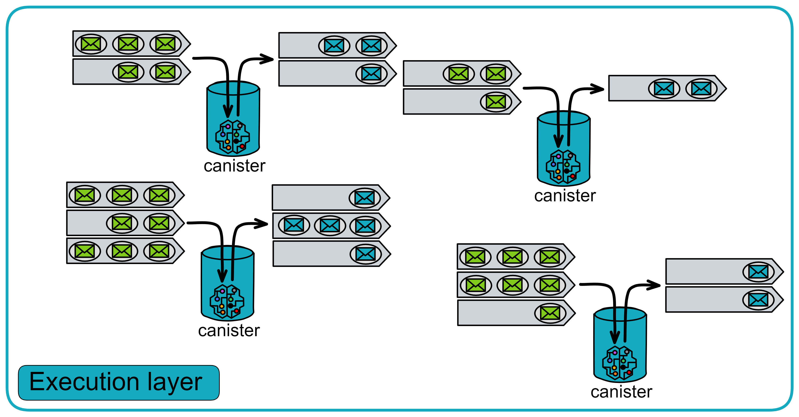The execution layer has many functions that other blockchains do not have:
-
Deterministic time slicing (DTS): For large messages requiring billions of WASM instructions to execute, they can be split up and completed gradually over multiple consensus rounds. This ability to execute messages over multiple consensus rounds is unique to IC.
-
Concurrency: Execute multiple Canisters simultaneously on multiple CPU cores. Since each Canister has its own isolated state.
-
Pseudo-random number generator: The execution layer can access unpredictable and unbiased pseudo-random number generators. Now Canisters can execute algorithms that require randomness.
Learn more about how the IC execution layer works here.
Boundary node
As mentioned earlier, IC is a decentralized cloud that can provide users with complete network services directly without relying on any centralized services.
So how are user requests sent to replicas (nodes) in a subnet? How does IC defend against DDoS attacks? Is there a firewall? Is there a CDN cache?

These services are provided by IC's boundary nodes.
Boundary nodes are responsible for forwarding requests to the corresponding subnets, protecting subnets, and providing caching.
When a user accesses IC through a browser, we will find the Canister through the URL link on the ic0.app domain name. First, the browser will look up the DNS record corresponding to the URL link and get the IP address of the boundary node. Then it sends an HTTPS request to the boundary node. The boundary node returns a JS library "Service Worker" to run on the browser.
One of the main tasks of this Service Worker is to use Chain Key cryptography to verify responses from IC. To achieve this functionality, the public verification key of NNS is hard coded in the Service Worker.
Boundary nodes are responsible for routing our requests to the replicas of the target Canister's subnet. It obtains the required routing information from NNS and randomly chooses a replica from a list of replicas that respond in real time. Communication between users and boundary nodes, as well as between boundary nodes and replicas, is secured by TLS.
In addition to communicating with the main network, boundary nodes also provide caching, load balancing, rate limiting, firewall, and the ability to verify IC response messages to improve the user experience.
You can see more about boundary nodes here.
Message request workflow
With these 4 core protocol layers, let us take a look at the flow of a user request on IC:
User requests are divided into query calls and update calls.
Query call:
The client sends a request message to the boundary node wanting to access a Canister. The boundary node forwards this message to replicas in the subnet hosting the target Canister. After receiving the message, the replicas return a response and send it to the user through the boundary node.
Update call:
The client sends a request message M to the boundary node, targeting Canister C. The boundary node forwards the message M to the subnet replica hosting Canister C.
Upon receiving message M, the replica broadcasts message M to all replicas in the subnet through the P2P layer.

The main node that receives message M will package message M and other inputs into a block B.
After a while, the block B is finalized, and the contents are sent to the message routing layer for processing.
The message routing layer puts the message into Canister C's input message queue.
The execution layer processes message M and updates Canister C's internal state.
Subsequently, the message routing layer takes out the response R and returns it to the boundary node, which returns it to the user.
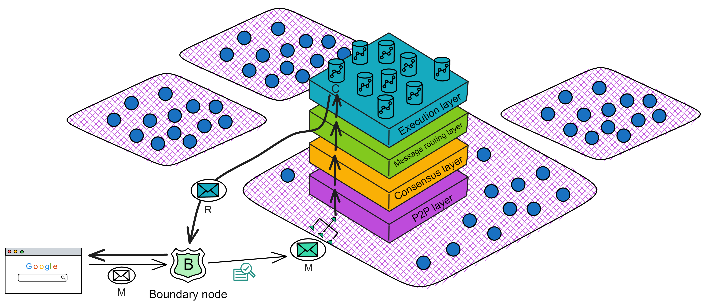Sometimes processing a request message M requires calling canisters from other subnets. For example, Canister C needs to initiate a request M' to Canister C' in another subnet. Request M' will be placed in Canister C's output queue, and then the following steps are performed:
- The message routing layer moves the call request M' to the corresponding cross-subnet data stream, which eventually transports it to the subnet hosting Canister C'.
- Upon receiving request M', the second subnet processes it through the consensus layer and message routing layer, and finally the execution layer updates the state of Canister C' and generates a response R' to request M'. Response R' enters Canister C's output queue and is eventually passed back to the first subnet.
- Upon returning to the first subnet, after receiving the response R' from the second subnet, it is processed through the consensus layer, message routing layer, and execution layer. The execution layer updates the state of Canister C and generates a response R to the original request M. This response R is recorded in the ingress history data structure.
Chain Key
IC uses an advanced cryptographic toolkit called Chain Key cryptography. This technology enables IC to achieve functionality and scalability that other blockchains cannot.
A key component is the threshold signature scheme, similar to ordinary digital signature schemes, but with the difference that the secret signature keys are distributed among the subnet replicas, making the keys less prone to leakage or get stolen.

Chain Key brings many benefits. For example:
- Anyone (mobile phone, tablet, laptop) can easily verify signatures to validate content received from IC without synchronizing the entire blockchain.
- It allows IC's topology to evolve autonomously, such as adding new replicas and subnets, recovering failed replicas, and autonomous protocol upgrades.
- It also provides unpredictable and unbiased pseudo-random numbers to allow Canisters to securely run algorithms that require randomness.
IC's key innovation is that subnets are actually consensus islands. With Chain Key, they can communicate securely and validate each other's messages without downloading other blockchains. This allows IC to achieve high scalability and security while remaining lightweight and easy to validate.
This unique Chain Key technology provides a powerful foundation for building the next generation of distributed applications.
Network Nervous System (NNS)
IC's decentralization is slightly different from Bitcoin and Ethereum. Its nodes do not join and leave as they please. Instead, to join or leave IC network, no third-party centralized agency's approval is needed. Before nodes join the IC network, they need to obtain approval through voting in the NNS. IC's underlying protocols have a built-in DAO for governance.
To explain in detail:
Early consensus protocols such as PBFT were permissioned. That is, the network topology and nodes were fixed, not open for anyone to join. Although such protocols are more efficient, they violate the spirit of decentralization. Therefore, permissionless consensus protocols such as Bitcoin and Ethereum now use proof-of-work or proof-of-stake mechanisms. Although fully decentralized, these protocols are relatively inefficient.
IC combines the advantages of both. It has the efficiency of permissioned protocols and the benefits of permissionless PoS protocols. You can call it a DAO-controlled network (semi-permissioned network).
Each subnet runs a permissioned consensus protocol with fixed replicas (nodes) in the subnet. When the network topology needs to be adjusted, a DAO called the Network Nervous System (NNS) determines which nodes can join a subnet, configures the network topology, configures public keys, and controls the protocol version deployed by replicas. NNS decisions are made by community members voting, with voting rights related to the ICP they stake in the NNS. The more ICP, longer period they stake, the more votes, the greater the weight they have.
Through this governance system, IC can add or remove replicas in existing subnets; deploy software updates; upgrade replicas; create new blockchain subnets for expansion; split subnets to balance network load; configure economic parameters such as adjusting the exchange ratio of Cycles to ICP and the Cycles burn rate; in extreme cases, it can freeze malicious Canisters to protect the network, and so on. The NNS runs on a specific subnet, similar to other subnets. However, it has more replicas, is more secure, and the NNS subnet is a system subnet that only deploys a few of the most critical Canisters.
The Canisters in the system subnet do not charge Cycles fees because only a few of IC's own Canisters are deployed. Ordinary developers cannot deploy Canisters on the system subnet. So IC is managed by a DAO across all subnets.

The NNS maintains a database called the registry to track the network topology of the IC, such as which replicas belong to which subnets, the public keys of the replicas, etc.
The DAO-governed IC network allows the IC to enjoy the benefits of permissioned networks in efficiency while retaining the advantages of decentralized networks under DAO governance. Moreover, the replicas running the IC protocol are hosted in geographically distributed and independently operated data centres, which also enhances the security and decentralization of the IC.
Canister
After I understood the IC, I saw the first time a blockchain that can directly deploy web pages.
The IC is the only blockchain that can host complete dapps (front end, back end and data). The IC can securely provide HTTP requests.
A canister is the IC's smart contract that can store code logic, data state, and front-end resources. Developers do not need to care about the underlying communication. As long as the code is deployed in the Canister, users can directly access the application through the URL.
For example, there is a canister dedicated to front-end pages in the project and a back-end canister. After the client sends a request, the browser first downloads a Service Worker from the boundary node to check whether the browser supports WASM, whether the network environment is secure, etc. The Service Worker can verify whether the front-end page comes from the IC and whether it has been tampered with. The request message passes through the IC protocol to locate a front-end canister, and the front-end canister directly sends an HTML page to the client. Then it interacts with the back-end canister through the official JS proxy library. Canisters can also call and interact with each other.
ETH is a synchronous state update machine triggered by transactions, and then reaches consensus; IC is an asynchronous state update machine. As long as the client sends a message to the IC, a result will be returned: success or failure.
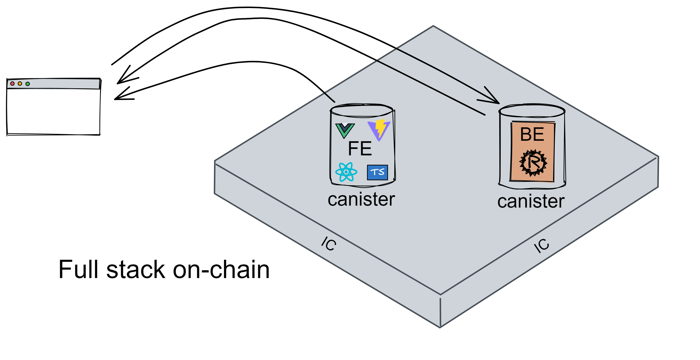IC simplifies the development of Ethereum Dapps and traditional web development. Developing Dapps does not require third-party wallets, nor do developers need to consider load balancing and firewalls, which are solved by the IC protocol layer.
Above is just the simplest Dapp project example. In actual development, a Dapp usually has many canisters.
The meaning of Canister is a jar or container. On IC, it is a lightweight WASM (WebAssembly) container.
Canister automatically persists data in memory without the need for database servers and storage management, improving computational efficiency and simplifying software development. In theory, all languages that can be compiled into WASM bytecode can be used to write IC smart contracts: Motoko, Rust, C, C++, Go, JavaScript, etc. (Now Motoko and Rust's CDKs are more mature, and the SDKs of other languages are under development) Therefore, both front-end and back-end can be compiled into WASM and installed in the container for on-chain deployment. Of course, only browsers that support WASM can open Dapps, but more and more browsers will support WASM in the future.

In addition,with integration on HTTP, Canisters could access to webpages outside IC without the use of Oracle!
See here for more content about Canister.
Internet Identity
On the Internet, we usually use usernames and passwords to identify and authenticate identities, but these methods are difficult to manage and have many security vulnerabilities. To solve these problems, IC has created a more advanced and secure encrypted authentication method called Internet Identity, which can be used on Dapps in the IC ecosystem. When logging in to Dapps, no password is required, nor do you need to remember complicated private keys or recoverys to easily control your decentralized identity.
When users use Internet Identity, websites will not collect information about the user's online activities. Since it will help you create and manage anonymous, independent accounts on each website, allowing you to enjoy the privacy protection of having many different accounts without worrying about managing these accounts. It not only frees you from complex username and password management but also makes you safer and more private when using network services.
Users can perform face scanning, fingerprint recognition, Ledger or Yubikey hardware wallets to create a decentralized identity. This identity can be used to log in/register to various Dapps.
Logging in to different Dapps with this identity will have different accounts. That is to say, it is isolated, and the identities are not interoperable (different from ETH). This identity is a completely isolated account in different Dapps. In each Dapp, it is like a split derived from the main identity. Use one DID identity to control all Dapps.
We like to call it "ii".
ii is an identity authentication mechanism. The underlying principle is still private keys, public keys, and things like that.
The user's mobile phone and computer have a TPM security chip that can generate a pair of keys. The public key is uploaded and stored in the ii Canister. The private key is saved by the TPM chip of the device, and no one can get it (including the user).
On the IC, user and Dapp interactions require signature authentication each time. Since the private key exists in the security chip, of course, the user cannot use fingerprint signature for each interaction request. So ii uses a delegated key to form a delegated key chain. Set an expiration time for the delegated key and then sign with the private key of the delegated key.

So what exactly does this delegated key mean?
You see, the device security chip generates a pair of keys, and then let the browser generate a pair of keys (Session key). Let the private key generated by the security chip sign the public key, expiration time, and other information generated by the browser. The generated signature is the delegation. With this delegation, you can sign the request with the private key of the browser.
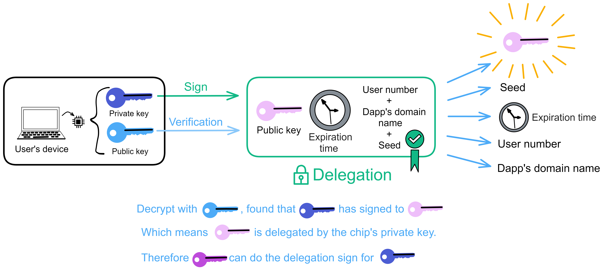As shown in the figure above. The recipient receives the blue public key, Delegation, the pink private key signed content, and the pink public key. Unlock the Delegation with the blue public key and find the pink public key inside, indicating that the blue private key has signed the pink public key. That is, the blue private key has granted permission, just like a general holding the emperor's tiger symbol to dispatch troops and generals. The tiger symbol represents the emperor's authorization.
Since the domain names of each Dapp are different, the generated pid (Principal id) are also different. Pid is a user's identity identifier in a Dapp. This will be described in detail later.
An anchor is equivalent to a username, that is, the User number in the above figure. Each device saved by the user in ii is a private key. The user can add or delete devices, that is, the user can add or delete private keys. So if the user's phone is lost, it is equivalent to losing a private key. As long as you log in to anchor on other devices, you can delete the phone device.
One thing ii does is to add the user's different devices and bind them to the anchor's corresponding Master key. This Master key is hosted on the Canister. As long as one device can be added, the devices saved in ii can be changed. The user does not need to contact the private key. The Master key can be understood as a total private key. As long as the device is bound to this total private key, there is no need to worry about losing the ii identity. If all are lost, only the recovery phrase can be recovered. If the recovery phrase is lost, there is no way to recover it. All lost 😝.
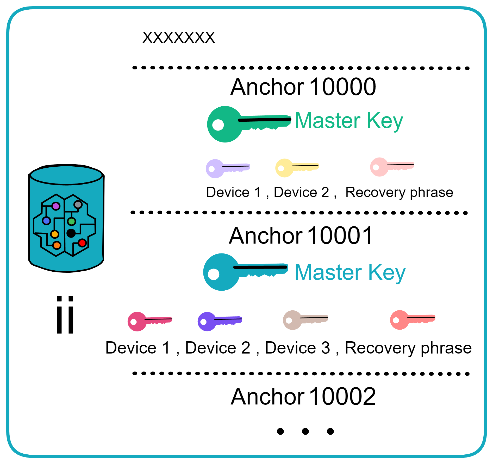So ii is an identity authentication mechanism. ii does not save user information, only the user's ii identity. User related information is saved by Dapp itself.
The Canister stores anchors and the corresponding Master keys. Anchors start from 10000 and increment.
This gives ii the following two characteristics:
- When an anchor logs in to different Dapps, the identities are different. As for the user information corresponding to this identity, such as username, ii will not save it.
- When logging into Dapp on different devices with the same anchor, the identity is the same.
More information about ii can be found here.
ICP tokenomics
The IC network is governed by the Network Nervous System (NNS), and the governance token is called ICP. There is another token called Cycles, which is used to pay for the storage, transmission and calculation fees of Canisters on the IC network, similar to Ethereum's gas fee.
Cycles are used to pay for the Canister (smart contract) operations. ICP can only be burned into Cycles in one direction and cannot be changed back to ICP. The exchange rate between ICP and Cycles is dynamically adjusted according to the ICP price to always maintain a stable exchange of a certain amount of Cycles. In this way, ICP will become less and less. As the number of IC network users increases, more people will buy ICP to run smart contracts, and the value of the IC network will continue to increase.
Data centres who want to become nodes need to buy a large amount of ICP as collateral. If the data centre goes evil, ICP will be fined from them.
As the ecology on IC becomes more and more prosperous, and more and more enterprises and organizations deploy decentralized applications Dapp on IC, ICP needs to be burned into Cycles to pay for the deployment of applications.
ICP holders can pledge ICP in the NNS to create Neurons and then vote. After voting, they will receive ICP rewards, which is one of the inflation mechanisms of ICP. However, the role of NNS is to govern by voting, not to earn interest.
In addition, NNS will send ICP token incentives to data centre providers every month. This is another inflation mechanism.
The amount of Cycles consumed in the Canisters of these data centres and the amount of ICP obtained by these data centres are dynamically balanced. The amount of ICP incentives depends on the contribution of data centres to the IC network. The more Canisters deployed and the more computing power and storage provided, the more ICP incentives.
In the process of using Ethereum smart contracts to sign, transfer and trade, cryptocurrency users need to pay a certain amount of gas fee to the network. The gas fee will rise with network congestion. Especially when the De-Fi market is booming, high gas fees have become a barrier for the majority of ordinary users to participate.

ICP can be exchanged for Cycles tokens. The exchange rate between the two is dynamically changing to ensure the relative stability of the value of Cycles and prevent Gas fees from fluctuating sharply.
Future has come!
Due to the existence of cross-chain bridges, there are inherent 51% attack security issues in cross-chain.
However, IC solves the cross-chain bridge problem. IC directly abandons the cross-chain bridge. IC itself is a cloud service. IC can directly integrate other chains.
Currently, IC has integrated Bitcoin and Ethereum. Canisters can directly receive, hold and send Bitcoin. Canisters can perform ECDSA signatures. IC implements ECDSA threshold signatures.
This technology allows Canisters to control ECDSA private key fragments, and private key fragments are distributed across replicas in the Bitcoin subnet, similar to BLS threshold signatures.
In this way, cross-chain no longer needs bridges, nor does it need to wrap assets, such as wrapping BTC into WBTC.
Developers only need to write business logic in Canisters to achieve Bitcoin De-Fi, such as trading and lending. It is very fast, only takes a few seconds, and the cost is very low.
So after saying so much, I don't need to say much about what IC can do 😏. The following content comes from the IC white paper:
In addition to providing a smart contract platform, the IC is designed to act as a complete technology stack, such that systems and services can be built that run entirely on the IC. In particular, smart contracts on the IC can service HTTP requests created by end users, so that smart contracts can directly serve interactive web experiences. This means that systems and services can be created without relying on corporate cloud hosting services or private servers, thus providing all of the benefits of smart contracts in a true end-to-end fashion.
Realizing the vision of Web3. For end-users, accessing IC-based services is largely transparent. Their personal data is more secure than when accessing applications on a public or private cloud, but the experience of interacting with the application is the same. For the people creating and managing those IC-based services, however, the IC eliminates many of the costs, risks, and complexities associated with developing and deploying modern applications and microservices. For example, the IC platform provides an alternative to the consolidation driven by large technology companies that are monopolizing the Internet. In addition, its secure protocol guarantees reliable message delivery, transparent accountability, and resilience without relying on firewalls, backup facilities, load balancing services, or failover orchestration.
That's why I believe that IC will start a new era on the internet. The singularity!
Dominic Williams was very excited in his blog post on January 6, 2021:

You could see the structure of this chapter below, which links to different chapters:
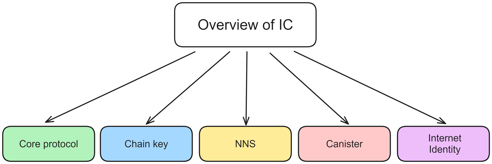WAGMI!!
Brief Description of the P2P Layer
The P2P layer is primarily responsible for transmitting protocol messages between replicas within a subnet. These messages include those required to reach consensus, such as block proposals and attestations, as well as ingress messages from the message routing layer. When edge nodes send messages, the P2P layer of the replica receives and broadcasts these messages.
There are two main types of these messages: one is the signed messages used to reach consensus, and the other is the input messages sent by user clients. For input messages sent by users, the P2P layer will arrange them in order so that the consensus layer can package the data into payloads and generate blocks in order.

Artefacts
For example, we have a neutron star express company (IC), and the P2P layer is the distribution network of the express company, responsible for transmitting parcels (information) between distribution points (replicas) in different regions (subnets).
The P2P layer is a broadcast channel. The design of the P2P layer ensures that if an honest distribution point (replica) broadcasts a message, the message will eventually be received by all honest replicas in the subnet. Even if someone tries to maliciously interfere or the network is occasionally interrupted, the parcel can still be delivered efficiently to the recipient. Even if some replicas fail, it cannot affect the mutual communication between honest replicas.

Each delivery terminal (replica) has some parcels, these parcels are "artefacts". So each delivery terminal (replica) has an "artefact pool" to store its own information. Artefacts are the information used by the delivery terminals to create, verify and reach consensus. This information can be consensus block proposals, user ingress information or response signatures for HTTPS external calls. The delivery terminals will distribute these parcels to other delivery terminals so that they all know the status of the subnet.

delivery terminals, the P2P layer is called. This is like a express company manager (such as a component of the consensus layer) notifying the delivery staff that they need to send out a new parcel. For example, now a delivery terminal (replica) has created a new block proposal and needs to send it to other delivery terminals in the subnet. Or, for example, a delivery terminal (replica) receives a parcel from another delivery terminal and then forwards it elsewhere.
Advertise-Request-Deliver
The P2P layer is responsible for ensuring high throughput, which is more important than low latency.
However, in the consensus protocol, some messages, especially block proposals, are very large. And according to the consensus protocol, for security reasons, these messages will be repeatedly broadcast by all replicas.
They hope to deliver a large number of parcels as fast as possible (high throughput), but also consider transportation costs (bandwidth).

The express company adopts a advertise-request-deliver mechanism to improve efficiency. When a delivery terminal (replica) has an important parcel (large message) to send, they will not send the parcel directly. Instead, they will send a parcel list (adverts) to inform other delivery terminals that there is an important parcel. When other delivery terminals receive this list and confirm that this is the parcel they need, they will actively contact the sending delivery terminal (request) and request to deliver the parcel (deliver). This process may sacrifice some time (latency), but it can save transportation costs (reduce bandwidth usage). For small parcels (messages), it is not worth sacrificing latency to pursue bandwidth. You can skip the advertisement and send the message directly.
In order to save bandwidth, the P2P layer will create a short message called Advertisements, which is very small and only contains the hash value of the artefact and some metadata. Then these messages are broadcast to other replicas. When other replicas receive the advertisement, they will determine whether they want to download the relevant artefact. If the answer is yes, they will send an explicit request message to the replica that issued the advertisement.

If this express company operates well and develops into a very large scale, containing many delivery terminals. At this time, the advertise-request-deliver mechanism can run on an overlay network. In this overlay network, each delivery terminal only sends parcels to their partners (peer nodes/peers). When a delivery terminal wants to broadcast a parcel, it will first tell the parcel list to its partners. Those partners may request the delivery of the parcel after receiving the list, and under certain conditions, tell the parcel list to their partners. This is like a gossip network, one passes ten, ten passes a hundred. If the number of replicas in the subnet is small, the advertisement will be sent to all replicas in the subnet.
The express company (P2P network) can effectively reduce transportation costs (bandwidth usage) at the cost of a certain delay, achieving the goal of high throughput. This is very important for an efficient express company (distributed network system).

But don't be careless. In order to ensure that each parcel is complete, secure and efficiently delivered, each advertisement contains an integrity hash value, like the barcode of the parcel. After downloading the parcel, the delivery terminal will check the downloaded content to ensure that it matches the hash value in the advertisement, so as to ensure the integrity of the parcel.
Of course, relying solely on hashes is not secure enough. Malicious delivery terminals may send an advertisement and then send a forged parcel with a hash value that matches the hash value in the advertisement. At this time, the delivery terminal needs to check that the parcel meets the requirements (for example, check if the parcel has the correct signature) before further processing or forwarding it to other delivery terminals to ensure that the parcel is secure.
When it is found that the received advertisement has a problem or when joining a new subnet, the delivery terminal will send a retransmission request to other delivery terminals. This request can be sent to a specific delivery terminal or to all delivery terminals. The request contains information about the current status, and other delivery terminals can help the delivery terminal update its status by sending advertisements. Learn more here.
Chunks
Sometimes some parcels (such as state synchronization artefacts) are too large to send as a whole. We can cut them into several small data blocks (Chunks), and then use an advertisement to represent these data blocks.

When downloading these data blocks, the delivery terminal will try to download the corresponding data blocks from multiple delivery terminals that have issued advertisements. This can speed up the download speed and make better use of bandwidth. Blocked parcels will undergo verification of individual blocks and the whole, and the corresponding delivery terminals will be responsible for verifying individual blocks.
Re-request
Courier companies need to ensure that parcels are delivered on time. Sometimes, for some reason, the parcel list (announcement) may have problems during the journey, such as the courier forgetting to scan the bar code of the parcel, the delivery is overdue or the parcel list is lost. Or when new delivery terminals are added to the subnet.
At this time, the delivery terminal needs to send a "re-request", similar to asking: "Hey, did I miss any parcels? Did I miss any information? Please send it to me again."
Other delivery terminals can send the information he missed to him. Although re-requests are mainly to help delivery terminals synchronize missed parcels, delivery terminals will regularly send such requests to ensure accurate parcel delivery.
Transport
The core business of courier companies is to transport parcels between locations. The transport component at the P2P layer, which is the transport tool (trucks, airplanes, etc.) of the courier company, is responsible for transporting parcels from one place to another. These means of transport create TLS-based TCP connections between delivery terminals, and both parties verify their identities with their own private keys. The transport layer protocol will choose appropriate methods according to network conditions, parcel size and other factors to ensure that parcels can be smoothly transported (Transport). The protocol has certain fault tolerance and ability to handle network failures.
In order for delivery terminals to know which delivery terminals they should connect with, courier companies need to maintain a "roster" (NNS Canister registration) containing information about all delivery terminals. This roster will contain the address of the delivery terminal and a special identifier for identity verification.
Each replica has its own public key, stored in a place called the "Network Nervous System" (NNS). To prevent DOS attacks, replicas only connect with other replicas in the same subnet. Connections between replicas will be adjusted according to NNS records.
The NNS registry also contains the latest subnet membership information (which replicas belong to which subnet) and historical information. Replicas query the NNS registry to learn about their own membership, replicas, IP addresses, and public keys. When establishing a TLS connection, replicas can ensure that they only connect to other replicas in the same subnet, enabling two-way identity verification.

Over time, courier companies may open new delivery terminals or close some old delivery terminals. Therefore, the transport component needs to constantly track these changes and accordingly adjust the connections with the delivery terminals.
In addition, the transport component also needs to ensure that communication lines are unobstructed and automatically re-establish contact in case of problems. The transport component provides a mechanism to maintain stable connections, can quickly detect connection problems (through heartbeat mechanisms), and automatically re-establish connections when connections are disconnected. When a TCP connection is idle for more than 200 milliseconds, the system will send a heartbeat message. On the receiving end, if no data (including heartbeat messages) is received within 5 seconds, the connection will be disconnected and reconnection will be attempted. This avoids the possibly very long timeout of the TCP protocol, which sometimes occurs when Internet routing changes. After successfully re-establishing the connection, a retransmission request will be sent to the corresponding replica.
Sometimes, the transport component will also connect with delivery terminals (replicas) that have just been deleted from the registry until the consensus layer no longer needs such connections.
Summary
The P2P layer efficiently transports parcels through the announcement-request-delivery mechanism, while using integrity hash values and other checks to ensure the correctness of parcels. The transport component is responsible for transmitting parcel information between couriers and sorting centres. It uses a method called retransmission request to ensure that no critical information is missed, and performs identity verification and reconnection when needed. It provides an efficient, secure and stable communication basis for information transmission through various mechanisms.
Introduction to Consensus Layer
What? PoUW? Isn't it Pow?
Consensus on IC ? Take a look at this term: PoUW, Proof of Useful Work.
Does it looks familiar to you?

Proof of Work (PoW) is the consensus algorithm of Bitcoin, which is very inefficient from today's perspective, but still it is relatively secure.
What is Proof of Work ?
Imagine a school organizing an competitive exam, only students who get full marks are eligible to put their names on the "Honor Wall" of the Education Bureau, they will be also rewarded with one full bitcoin! The school is open 24 hours a day, anyone can come and take the exam at any time, and the results will be released automatically after finishing all the questions. After one student gets full marks, the answer sheets of students who are still taking the exam will be immediately invalidated. That is because the answer (full mark paper) has already been born. In addition,other students must copy the full mark paper and then start the next exam.
In the school of PoUW, the candidates are randomly divided into several classes, and the exams are conducted in these classes. This time,not everyone can enter the school but only teachers can join. Each class completes a set of questions together. Since everyone is supposed to be an experienced teacher, they will roll the dice to decide who gets to do the first question, and who gets to do the second ... After finishing the questions, everyone has to discuss and reach a consensus on various opinions, and then hand in the papers eventually. Each person in the class shares the reward equally.
How efficient it is!😉😎
PoUW adds a 'U' to PoW, it significantly improves performance and reduces useless work for node machines. PoUW does not artificially create difficult hash calculations. It tries to put as much computing power as possible into serving users of the network. Most resources (CPU, memory) are used to execute codes in Canisters.
How is consensus reached?
No matter what, Bitcoin is one of ancestors of the blockchain. Even though the consensus reaching speed is inefficient, it is a solution to distributed system issues.
Satoshi Nakamoto's Bitcoin is a feasible solution to the "Byzantine generals problem".
Simply put, this problem involves attempts to reach consensus on a course of action through information exchange in an unreliable network with potential threats. Satoshi Nakamoto's solution used the concept of Proof of Work to reach consensus without a centralized authority that needs to be trusted, representing a scientific breakthrough in distributed computing and transcending the widespread applicability of currency.
However, can consensus only be reached in this way? Is there a more efficient way with high security?
Let's talk about the essence of consensus.
The essence of consensus is to maintain data consistency in a globally distributed network.
Bitcoin's approach is that everyone competes for computing power to determine who gets to pack valid blocks, then everyone has to copy the winner's blocks. In this way, Bitcoin transaction ledgers will have multiple copies, and the goal of keeping data consistent across all nodes is achieved. However, the efficiency is very low.
Let's take a look at the logic of consistency here:
The goal: Maintain data consistency across all nodes.
The method: Rely on some means to select a node to pack the block, and others copy the block packed by that node. The same node cannot be selected repeatedly in a continuous way, and the process of getting selected to pack the blocks is random.
Let us analyse the purpose only. Since the purpose is to maintain data consistency between nodes, as long as the nodes receive messages at the same time, the problem will be solved.

In the actual network environment ,it could not be achieved. Information transmission always has varying delays, not to mention that nodes are not located in a same place. The locations of clients are also far and near,the transmission distances are different. It is chaotic and sounds impossible to guarantee that all nodes receive messages at the same time. What should we do?

The answer is simple. Building a "relay station" can solve this problem. No matter where the messages come from, they are first queued in the relay station, then the relay station sends the messages and execution order to the nodes. As long as the nodes execute the operations in the order received from the relay station, data consistency can be guaranteed!
It is not over yet! Since there is another big issue: Centralization. All nodes have to obey the commands of the relay station. If the relay station says to execute messages in the order of ABDC, the nodes have to follow ABDC. Going round and round a big circle, the result returns to its starting point. So how can we sort messages in a decentralized way?
Decentralizing is actually simple, that is, doing something completely independent of any other one. There is no "boss" or "manager".It is very democratic, everyone works together to reach a consensus. Anyone who comes is allowed to pick up the jobs, and anyone who leaves will not affect the continuous operation of the system. (Unless everyone leaves, but with economic incentives, someone will always come!)
So how can we design it? The nodes need to reach consensus on the order of executing messages and we need to decentralize the working process of the relay station.
IC is designed like this: (IC abstracts nodes into replicas in subnets)
We could not rely on a relay station. Although the time for messages to arrive at each replica may be different (that is, the time of executing messages is different), all replicas must execute messages in the same order.

Then if everyone's order is different, which order should be executed? It will use random number to decide! (IC's Random Beacon)
IC uses a verifiable random function (VRF) at the base layer. It can generate unpredictable random numbers, and everyone can verify that the random numbers are not made by human.
VRF uses threshold BLS signature scheme. The threshold BLS signature algorithm uses DKG to distribute private key shares to replicas. This is a non-interactive distributed key generation protocol. DKG can distribute private key shares between members. There is no need for a trusted third-party, it does not depend on any member to distribute private key shares, avoiding single points of failure. Everyone uses the private key shares to sign information. Once the signature reaches the threshold, it can be aggregated into a complete signature. The signature process is non-interactive. Any third party can aggregate after receiving enough shares. Anyone can verify the signature with the unique public key. The public key is also recorded in the NNS registry.
If a message is confirmed, no matter which private key shares participate in the signature, as long as the threshold quantity is reached (the threshold for generating the Random Beacon is one-third), the final unique signature information can be aggregated. For example, the threshold in the following figure is 6. In order for the 16 replicas to generate the random beacon signature for this round, as long as the signature is greater than 6, it can be aggregated.

As long as the bad guys get less than one-third of the private key shares, they cannot interfere with the threshold BLS signature. It is also impossible to predict the signature result because the private key shares are not enough. That is to say, no one knows the signature result.
The consensus of the subnet can resist up to less than one-third malicious replicas. If the malicious replicas are less than one-third, all they can do is sign or not sign, they are unable to interfere with the final result of the threshold signature, nor prevent the signature from being generated. If malicious replicas are greater than or equal to one-third, the subnet has been destroyed, so the random number does not matter. Therefore, the threshold for the random beacon is low, at one-third. The speed of generating random numbers can be faster.
- In the traditional RSA algorithm, you control the private key and the message is public, which is equivalent to knowing the signature result yourself. After the private key is leaked, others can also know the signature result in advance.
- However, in the threshold BLS signature algorithm, a group of people control the private key shares. The signer himself does not have the complete private key, so he does not know the signature result. Only after everyone has signed and aggregated ,then they know the signature. Throughout the process, no one knows the global private key, but the signature result is the result recognized by most people. A group of people generate signatures, and no individual can predict the signature result. A single person cannot prevent the signature from being released.
This can serve as Random Beacon to provide a reference for which replica to produce a block. This random number is also a consensus result and cannot be tampered with by a single person. Moreover, this can continuously safely generate random numbers, as long as different information is used for each round of signatures. This different information is naturally the random beacon and some block dkg_ids of the previous round, so that the information signed in each round is different.
IC's random beacon, notarization, finality, random tape, and certified copy status all use threshold BLS signatures. (The random tape and certified copy status are content at the execution layer)
Solution
Let us take a closer look on how IC's consensus protocol produces a block
Preparation before block
The consensus protocol produce block by rounds. For example, consensus is reached on the genesis block in round 1, and round 6 for block 6.

Before start, the subnet first randomly selects some replicas to form a "consensus committee" according to the number of replicas. If the number of replicas is too low, all replicas will join the committee. The members in the committee are responsible for producing the blocks, so even if there are a large number of replicas in the subnet, it will not affect performance.

There is also the concept of "epoch" in the subnet. An epoch is approximately a few hundred rounds. The NNS can adjust the epochs for each subnet.
Each subnet operates within epochs that contain multiple rounds (typically around a few hundred rounds). Different replicas make up the committees in each epoch.

At the end of each epoch, the consensus committee members for the next epoch are selected through the random beacon, and the current consensus committee members will all become random beacon committee members in the next epoch.
The first block of the new epoch contains the list of consensus committee members and random beacon committee members for this epoch.
And at the beginning of the new epoch, the private key shares will be redistributed to the members. This process is called Pro-active resharing of secrets. There are two reasons for doing this:
- When the members of the subnet change, resharing can ensure that any new member will have new private key shares, and any member exiting the subnet will not have a new private key share.
- Even if a small amount of private key shares are leaked to attackers in each epoch, it will not threaten the consensus.
The number of consensus committees is related to the total number of replica members in the subnet. To improve scalability, in small-scale networks, committee members can be all replicas. In large-scale networks, committee members are part of all replicas and constantly changing in each epoch.
The number of consensus committee members cannot be too large or too small. Too few are insecure, too many affect the consensus speed.
So the relationship between the number of committees and the total number of members has a mathematical model to describe: When the total number of members in the subnet tends to infinity, the hypergeometric distribution tends to the binomial distribution, that is, non-replacement random sampling tends to replacement random sampling. Because the total number of replica members is infinite, there is no difference between replacement and non-replacement. If you are interested, you can read the introduction here.
Once the preparation is complete, blocks can be produced.
Block Maker
At the start of each round, the random beacon generated from the previous round produces a ranking to determine the weight of members to produce blocks. The leader with the highest weight is given priority to produce blocks. (As shown in the figure below, the ranking assigns a number from 0 to 4 to the 5 consensus committee members, with 0 having the highest weight)
Under normal circumstances, the leader is honest and the network connection is normal. The leader is responsible for producing blocks. Others are waiting to notarize the leader's block. Even if block from the 2nd member is received, it will not be notarized until the leader's block is received.
At the same time, the random beacon committee will also package, sign and broadcast the hash of the previous round's beacon and the NiDKG record of this round. When the signature reaches the threshold, this round's random beacon is generated, which also determines the block production weight for the next round.

A non-genesis block generally contains:
- The messages received from the time the previous block was notarized to the time this block was packaged, called the "payload".
- The hash of the previous block.
- The ranking of the block-producing replica.
- The height of the block.
After the block is assembled, the replica responsible for producing the block will generate a block proposal, including:
- The block itself.
- Its own identity.
- Its own signature on this block.

Then broadcast the block proposal to other members.
The leader produces a block and broadcasts it to everyone. After notarization is completed, since only the leader's block is notarized, there is no need for finalization, and it enters the next round. This is the fastest and most common situation. About 1 second to finalize a block. (Optimistic responsiveness: The protocol will continue to execute based on actual network latency rather than the upper limit of network latency)
If after waiting for a period of time, the leader's block has not been received, it may be that the leader has a poor network or the machine has malfunctioned. Only then will members accept block from 2nd member or 3rd member and notarize their blocks.

The system has an agreed upon waiting time. If the leader's block is not received within a period of time, it will expect block 2 in the second time period. Then in the third time period, block 3 is expected. If block 3 is its own, then produce the block itself ...
Notarization
Notarization only verifies the reasonableness of the block, and the notarized block does not represent consensus. This ensures that at least one block in the current round can be notarized.
Therefore, notarization does not mean consensus, nor does it require consensus. If multiple blocks have the same weight, these blocks will be signed.
During notarization, the members of the consensus committee verify the following three aspects:
- The block should contain the hash of the block already notarized in the previous round.
- The payload of the block must meet certain conditions (specific regulations on the payload content, these conditions are independent of the consensus protocol).
- The ranking of the replica responsible for producing this block must correspond to the ranking in the random beacon (for example, if the replica ranked 2nd claims to be ranked first, then this block will not be notarized).
If the block information is correct, the replica responsible for verification first signs the block height and block hash, and then forms a "notarization share" with the just signed signature, hash, height, and its own identity. Broadcast the notarized shares.

Notarization also uses BLS threshold signatures. When a replica receives enough (the threshold is two-thirds) notarization share, it aggregates the signature share to form a notarization for this block.

The aggregated notarization information includes the block hash, block height, aggregated signature, and more than two-thirds of the identity identifiers. Replicas either find that they have collected enough notarization shares and aggregate them into notarizations themselves; or they receive aggregated notarizations from others.

After notarization, the block is still broadcast. When other members receive the notarized block, they will re-broadcast the notarized block and will not generate notarization shares for other blocks.
For example, in the figure below, the girl holding the cell phone and the blue hat enter the next round of consensus. When the girl sends messages to the other three people, the network is interrupted for 700 milliseconds. The message forwarded by the blue hat plays a key role. Otherwise, five missing three would not be able to work.

If the leader's block has a problem and the notarization fails, the weighting of the second block will now be the largest. If the blocks of the second member and the third member have both passed notarization, the leader of the next round will choose to produce block after the block with the greatest weight. As in round 5 and 6 below, the weight of the 2nd block is greater than the weight of the 3rd block. Adding up the weights of all blocks, the chain composed of yellow and purple blocks is the chain with the greatest weight.

In order to maximize efficiency, each replica has a "maximum waiting time" (Delay functions), which is the maximum waiting time before accepting new blocks or voting on blocks. After this time, it will not wait. The length of this waiting time varies from person to person, and is different for each replica.
If a replica does not receive messages for several consecutive rounds due to network latency, it is because its waiting time is too short. Before the message arrives, it does not wait. If the final confirmation fails, all honest replicas will wait a little longer until the final confirmation is received.
At this time, replicas can appropriately increase the delay and wait a little longer. This makes it more likely to receive messages in the next round.
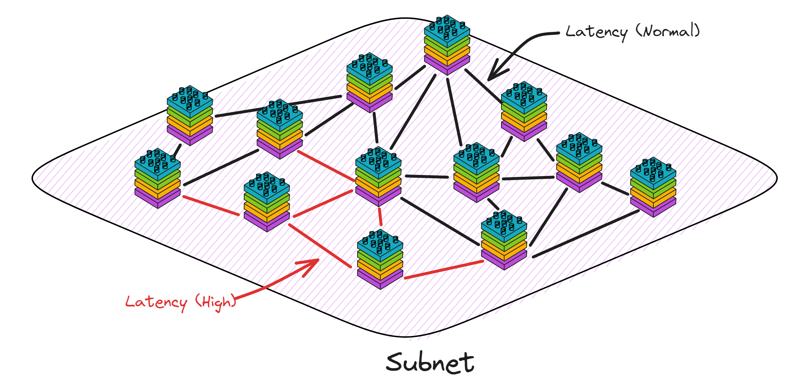
Finalization
Because sometimes more than one block may be generated (when the leader does not respond, the second and the third may produce block to save time). This requires a finalization. The finalization stage will determine the only block that everyone has notarized. Then the blocks before the block that everyone agrees with will also be implicitly finalized, and other branches will become invalid.

The finalization process is specifically:
After a replica finds a notarized block, it will check whether it has notarized any other blocks in this round. If it has not notarized any other blocks, it will broadcast a "finalization share" for the block. To prove that it has only issued a notarization share for this block.
To achieve the finalization of a block, two-thirds of different replicas need to issue finalization share, and then aggregate for the finalization of a block. The format of the finalization share is exactly the same as the notarization share (but marked in a specific way to prevent confusion). After receiving the finalized block, like the notarization process, it will broadcast to other members again.
Note: The replica does not deliberately wait for the aggregation of the finalization share into the finalized before entering the next round. After receiving a finalization share of a certain height, the replica only checks whether it has notarized blocks other than that block, and then broadcasts its own signed finalization share; or forwards the finalization share intact.
For example, after a replica receives the finalization share of round 10 in round 11, it will check its behaviour at that time and then broadcast a reply.
If after a while, if you receive the finalization of the block in round 10, you can implicitly consider all previous blocks as finalized.

These finalized blocks can be considered as safe confirmed by everyone, meaning that all replicas agree with the branch where the finalized block is located. At the height of block 10, only this block has passed notarization. Then the replica reaches consensus at this height.
For example:
If a replica only generates a notarization share for one block in Round 5, the replica will also issue a finalization share and then enter Round 6 consensus. If the finalization is received later, the branch containing the finalization is considered valid. If the block after finalization does not fork , there will be no problem without finalization.
It is possible that in Round 4, half of the replicas generated notarization shares for the leader and the 2nd blocks, and the other half of the replicas only generated notarization shares for the leader's block. Then the finalization share proposed by the replicas that only notarized the leader's block cannot reach the threshold and cannot obtain finalization. Only half of the replicas generate notarization shares for the 2nd member's block, so the 2nd member's block does not obtain notarization.

Compared with many other blockchains, the advantage of the IC consensus protocol is that it adopts asynchronous finalization. In other blockchains, nodes usually need to find the longest chain. If the chain forks, the nodes need to wait for a while to find the longest chain. If some blocks are missed due to network failures, the longest chain cannot be found, and data from other nodes needs to be synchronized.
The IC protocol does not rely on finding the "longest chain" to eventually confirm the block. IC's finality method only relies on cryptographic signatures, not on the confirmation of the entire chain. A small number of signatures can observe a block consensus formed without waiting for the confirmation of the entire chain. Forks can be eliminated in a short time, and finalization speeds can be achieved in less than one second.
The consensus process is over here!
To summarize, the members of the Consensus Committee need to do 3 things when entering a new round:
(1) See how they rank and then decide whether to produce block yourself
(2) Notarize the block
(3) Observe the blocks, find the main chain, and ignore invalid branches
The Consensus Committee will become a random beacon committee in the next period and be responsible for generating random beacons for each round.
The consensus process is for the leader to block, everyone verifies and then issues a notarization share, the notarization share reaches the threshold and aggregates into notarization, and enters the next round. Finalization does not have to be completed every round.
The IC consensus protocol ensures that when there are individual malicious attacks, IC's performance will flexibly decrease instead of directly freezing. The consensus protocol currently tends to maximize performance as much as possible in the "optimistic case" without failures.
As the protocol progresses round by round, the blocks connected from the genesis block form a chain that extends continuously. Each block contains a payload, consisting of a series of inputs and the hash of the parent block.
Honest replicas have a consistent view of the path of the blockchain. The blocks record the messages that have been sorted, which are sent by the message routing layer to the execution layer for processing.
Comparison of consensus mechanisms
| Classic public chain | Consortium Blockchain | Internet Computer | |
|---|---|---|---|
| Write order | Write first, then consensus | Consensus first, then write | Write first, then consensus |
| Typical algorithm | PoW,PoS,DPos | PBFT,BFT | PoUW |
| Consensus process | Finalized when consistent (high probability) | consistent confirmation before P2P broadcast | Select block nodes through random numbers |
| Complexity | High computational complexity | High network complexity | High network complexity |
| forked? | Yes | No | No |
| Security threshold | One half | One third | One third |
| Number of nodes | The number of nodes can change at any time | The number of nodes cannot be changed arbitrarily, and the more the number, the lower the performance. | The number of nodes cannot be changed arbitrarily, and the large number has little effect on performance. |
| Application scenarios | Non-licensed chain | Licensed chain | Semi-licensed chain, decided whether nodes join by DAO voting |
Comparison of several consensus algorithms
| Consensus algorithm | PoW | PoS | DPoS | PBFT | VRF | PoUW |
|---|---|---|---|---|---|---|
| Node management | No license | No license | No license | Licensed | Licensed | DAO voting license |
| Consensus latency | High | Low | Low | Low | Low | Ultra low |
| Throughput | Low | High | High | High | High | High |
| Energy saving | No | Yes | Yes | Yes | Yes | Yes |
| Safety boundary | 1/2 | 1/2 | 1/2 | 1/3 | 1/3 | 1/3 |
| Representative application | Bitcoin | Ethereum | BitShare | Fabric | Algorand | Internet Computer |
| Scalability | Good | Good | Good | Poor | Poor | Unlimited |
Message routing layer
Message relay station in the replica
The message routing layer, as its name suggests, is responsible for message transimission within a replica. It acts as an intermediary, interfacing between upper and lower layers.
Introduction
The consensus layer packages messages into block payloads. Once a block is finalized, each replica in the subnet parses the payloads in the block. The message routing layer then passes the messages to the corresponding canisters in the execution layer. After executing the messages, the canisters update their internal state and return message responses to the message routing layer.

The messages received by the message routing layer are of two types:
One type is messages from users, called ingress messages. The other type is messages from canisters in other subnets, called cross-subnet messages.
The messages sent by the message routing layer are also of two types:
One is responses to user messages, called ingress message responses. The other type is still cross-subnet messages, which are messages sent by canisters in its own subnet to canisters in other subnets.

Message queues
Each canister in the execution layer has an input queue and an output queue. The message routing layer routes the payloads in the blocks to the input queues of the target canisters.

Each canister has its own input queues and output queues.
- Input queues:
The input queues contain: messages from users, inter-subnet messages from canisters in other subnets, and messages from other canisters in the subnet.
Each round, the canister executes some messages from the input queues and puts the message responses into the canister's output queue.
- Output queues:
The output queues contain: responses to user messages, messages sent to canisters in other subnets, and messages sent to other canisters within the subnet.
When the message routing layer takes messages from the message queues and puts them into the subnet-to-subnet streams, the crossnet transfer protocol is responsible for actually transferring these messages to other subnets.
In addition to the output queues, there is an ingress history data structure. It records in a hash tree called the "Per-round certified state". The ingress history only records the responses after the canister executes the messages so that users can get responses to their messages.
Note: The ingress history does not retain a complete history of all ingress messages. It only retains the responses after update calls.
The responses of query calls are not recorded in the ingress history (the ingress history only records the responses of update calls), so they cannot be verified by each round of authentication status. But IC provides another verification mechanism, called certified variables. We can store some important information using certified variables.
If the content of a query call is a certified variable, then the query call is secure and verifiable. Because the certified variables of the Canister are also recorded in each round of authentication status after hashing. And each round of authentication status is consensus-based, meaning that this information is the same in all replicas in the subnet.
Looking at the message routing and execution layers separately, it looks like this:

Intra-subnet messages
When a Canister sends information to Canisters in other subnets, this information is placed in the cross-subnet queue and verified by the subnet at the end of this round. The receiving subnet can confirm that the information is authorized by the sender by verifying the signature. These messages require consensus. IC implements cross-subnet communication using the Xnet protocol, which will be introduced in detail later.
Intra-subnet cross-canister call
In addition to cross-subnet messages, there are also messages from one canister calling another canister in the same subnet, called intra-subnet messages. The message routing layer forwards these messages directly from the output queue to the input queue of the corresponding canister without an extra round of consensus.
So why do messages from canisters to other subnets require consensus, but messages from canisters to the same subnet do not need consensus?
Because these state-changing operations are within the subnet.
Think about it, the data states in the replicas are the same, and consensus is also to ensure the consistency of the data in the replicas. After the replicas reach consensus, each honest replica will execute intra-subnet cross-canister calls, and everyone will execute cross-canister calls together. This is still a consistent operation.
Consensus is used when everyone faces different choices to make everyone execute the same operation.

So when a canister in a subnet calls another canister within the same subnet, each replica will make the same cross-canister call. Each replica stores all the data in the subnet. When the replicas execute cross-canister calls, the consistency of data in the subnet is still maintained.

Guarantees provided by the message routing layer
- Cross-subnet messages must be delivered to the execution layer of the target Canister subnet at one time.
- If a message cannot be delivered, a rejection response must be generated.
- If a Canister A sends two messages m1 and m2 to Canister B, and if they are not rejected, it must be guaranteed that they are placed in Canister B's input queue in order.
Summary
At this point, let's summarize. The state of a replica (subnet) includes the state of Canisters and "system state". The "system state" includes the input and output queues of Canisters, cross-subnet data streams, and the ingress history data structure.

In other words, the message routing layer and the execution layer together maintain the state of a replica. And the state of the replica is updated under fully deterministic conditions, so that all replicas in the subnet maintain exactly the same state. The consensus layer does not need to keep exactly the same progress as the message routing layer.
Per-round certified state
In each round, the state of each replica in the subnet will change.
Of course, the part that changes in each round also needs to be recorded separately. Because IC's consensus only guarantees that honest replicas process messages in the same order. Consensus only guards before messages enter the execution layer, but the exit after message processing lacks a "guard": What if the message response is not sent successfully due to network issues? How does the client verify the authenticity of the message after receiving the message? If the message response is forged by hackers, it will be troublesome. In case the server system has strange bugs that prevent messages from being executed...

Replicas need to verify the state again after processing messages. The per-round certified state, also known as the system state tree, serves as the last guard in a complete round. The per-round certified state can record the state changes of replicas in one round, and re-broadcast a threshold signature to everyone for confirmation by two-thirds of the replicas.
Both input and output must be certified by consensus, otherwise there is a risk of divergence.
Therefore, in order to ensure that each replica processes the message correctly, after the Canister executes the message, the executed message must be recorded to allow the replicas to verify each other again.

After executing messages in each round, each replica hashes its own per-round certified state, packs it into a Merkle tree, and signs it with a private key fragment. Collect two-thirds of the signature fragments to aggregate into a complete signature. The state tree and the certified signature are called the per-round certified state.
Because the execution layer processes messages in the same way, theoretically each replica in the subnet will independently create the same tree.
The per-round state tree only contains some data information that has changed after each round of execution. The overall state of the replica is not in the per-round certified state.

Each round of certification states contains the following in this round:
- Various metadata about each Canister (such as the hash of wasm, etc., not the complete status of the Canister)
- The root node hash of the Merkle tree of the certification status of the previous round
- Intra-subnet messages added to the data flow between subnets
- Ingress history, various responses to messages
- The ID and public key of each subnet
- Current time
- Metadata
The consensus layer and execution layer of IC are separated and are two independent parts. The consensus layer and execution layer can also adjust their own rhythms and speeds. If the consensus is too fast and the execution layer accumulates too many messages to keep up with the consensus, message routing needs to notify the consensus layer to slow down. (It may be due to some bugs in the execution layer, etc.) Here we see how the consensus slows down.
How do you know if the execution layer is slow? Through the certification status of each round. Each replica will observe the round of threshold signature certification and the round of consensus reaching in each round. If the difference is too large, the speed must be reduced.

Just like the assembly line in a traditional factory, if one part slows down, the entire production line has to slow down. Otherwise, the backlog of messages to be processed will accumulate more and more.
XNet Protocol
IC implements communication between subnets through the XNet protocol. In order to reduce the latency of message transmission, replicas tend to choose replicas closer to themselves for communication.
Simply put, cross-subnet messages are transmitted as follows:
After the Canister in the execution layer processes the message, it puts the cross-subnet message into the output queue. The message routing layer has a component called the Stream builder, which is responsible for forming cross-subnet messages into data streams. After Per-round state threshold signature certification, the XNet endpoint of the replica executes and sends. The XNet endpoint sends messages to the nearest replica of subnet B. After the replica XNet payload builder of subnet B receives the message, it broadcasts the payload. Then pack it out and reach consensus.

The Stream builder extracts messages from the Canister's output queue and queues the messages. It needs to meet determinism, orderliness and fairness:
- Determinism: All replicas must reach consensus on the content of the stream. (Replicas perform threshold signature certification for each round of state certification)
- Orderliness: If Canister A sends a request R1 to Canister B first, then sends a request R2, then R1 is ahead of R2 in the data stream.
- Fairness: We do not want a Canister to occupy too much bandwidth. The Stream builder will try to give each Canister the same bandwidth.
The Stream builder sorts these messages according to the target subnet and forms message streams (one message stream per target subnet). Each message in the message stream has a unique increasing index.
After that, **per-round certified state ** will certify the submitted state. After the certification is completed, the certified data stream can be sent to other subnets.
The XNet endpoint is responsible for sending certified messages to other subnets. The XNet endpoint is a component that provides messages to other subnets. It provides services through secure TLS connections and only accepts connections from other replicas. The XNet endpoint obtains a complete list of nodes, subnet allocation, IP addresses and public keys (for establishing TLS connections) from the registry.

If a replica of subnet B wants to get new messages from subnet A, it will choose the nearest replica of subnet A and send a request to this replica through the XNet protocol. XNet transmits information through the HTTPS protocol.
The XNet payload builder is responsible for receiving cross-subnet messages. As the name suggests, after receiving these messages, it will package them as payloads into blocks, reach consensus, execute ...
In addition to cross-subnet messages, user ingress messages and Bitcoin transactions (for subnets enabling Bitcoin integration) will also be packaged as payloads into blocks.

After combining and packaging these payloads into a block, the consensus protocol will verify the entire block and reach consensus. After the consensus is reached, the messages in the payload will be processed.
This is the process of transmitting messages from one subnet to another subnet. As shown in the figure below.

Garbage collection: After sending the messages, subnet A still needs to tell subnet B which messages have been processed so that subnet A can clear those messages that are no longer needed.
These components ensure that cross-subnet messages can be delivered correctly and implement secure and scalable blockchain communication.
Execution Layer
The execution layer is responsible for executing smart contracts. On IC, a smart contract is a virtualized container: Canister.
Introduction
IC works in rounds, with each round triggered by the consensus layer reaching agreement on a set of message blocks.
At the beginning of each round, messages are assigned to the input queues of contracts according to their destinations. Subnet messages are assigned to the subnet input queue. The scheduler will sort these messages for execution. Each time the subnet state is processed in a round, the execution will end when the limit is reached.

The scheduler can fairly allocate workloads between Canisters and give priority to Canisters that need to optimize throughput. When a Canister is scheduled to execute, it will be assigned an available CPU core and execute the messages in the input queue one by one until all messages are processed. Then, the scheduler selects the next Canister for execution until the instruction round limit is reached or there are no Canisters left to schedule.
The execution environment monitors resource usage and deducts corresponding Gas fees from the Canister's balance.
For security and reliability, each Canister executes in an isolated sandbox environment. When executing each individual message, the scheduler starts the sandbox process hosting the Canister and executes the provided message. Executing each message may send new messages to other Canisters, modify the Canister's memory pages, or generate a response. The execution environment charges according to the number of instructions consumed by the Canister.

As shown in the figure above, for more details about Canisters, please refer to Chapter 4.
To manage the execution time of Canisters, the IC limits the number of instructions executed by each Canister. Each Canister has a fixed number of instructions in each round. At the end of a round of execution, the Canister's execution will pause and continue in the next round. To prevent Canisters from occupying too many resources, the maximum number of instructions that can be executed in a single call of each Canister is limited. If the limit is exceeded, the execution will be terminated, the state of the Canister will be rolled back, and the consumed Cycles will be deducted.
The execution environment also limits the number of heap pages that a Canister can modify in each round. However, after a Canister exceeds the limit, the execution result will still be saved, just no subsequent operations will be performed. Only when the number of heap memory pages a Canister plans to modify is less than the limit will subsequent operations be performed.
Scheduler
The scheduler is like a brain that is responsible for arranging the execution order of Canisters running on the execution layer. The scheduler needs to do the following:
- It must be deterministic, that is, under the same conditions, its decisions must be the same every time.
- It needs to fairly allocate workloads between Canisters.
- It should prioritize overall processing speed rather than the execution speed of a single task.
To allow Canisters to respond quickly even when the system is busy, they can choose to prepay a certain amount of computing resources. Each Canister has its own allocation of computing resources, which is like a small part of a CPU core. Only part of the subnet's computing power can be allocated so that Canisters that have not pre-allocated computing resources can also be executed.
Fairness means ensuring that each Canister can obtain its allocation of computing resources and distribute the remaining computing resources evenly. The scheduler will select several Canisters to execute a complete round. In one round, Canisters will either complete executing all their tasks or reach the instruction limit.
The scheduler will use the cumulative points accumulated by each Canister over multiple rounds as priorities. At the beginning of each round, each Canister will receive a certain number of points, including their allocation of computing resources and the average share of the remaining computing resources. The scheduler will allocate Canisters to CPU cores for execution in a polling manner and deduct 100 points from Canisters that have executed a full round.
Here is an example:
Assume there are three Canisters: A, B and C. Each replica has 2 CPU cores. Each Canister has an input queue for receiving messages to be processed. The scheduler handles the execution of these Canisters.
- At the beginning of the round, the input queues of Canister A, B and C have 5, 3 and 10 messages respectively. The scheduler will evaluate these messages and sort them for execution.
- Assume the scheduler first chooses Canister A for processing. It will allocate an idle CPU core to Canister A and execute the messages in Canister A's input queue one by one. After all messages (5) of Canister A have been processed, the scheduler will mark Canister A as completed.
- Without waiting for Canister A to complete, the scheduler can allocate a core to Canister B after allocating a core to A. It allocates another core to Canister B and executes the messages in Canister B's input queue one by one. After all messages (3) of Canister B have been processed, the scheduler marks Canister B as completed. Then it allocates the CPU core to Canister C.

- Finally, according to its own rules, the scheduler selects Canister C for processing. It will allocate an idle CPU core to Canister C and start executing the messages in Canister C's input queue one by one. At this point, after processing 6 messages, Canister C reaches the instruction limit for this round. The scheduler will mark Canister C as incomplete, suspend execution, and continue in the next round.

- At the beginning of the next round, the scheduler will evaluate the input queues of all Canisters, including the unprocessed messages of Canister C. Then, according to priorities, accumulated shortages and other factors, it will schedule to ensure fair and efficient allocation of tasks.
Canisters are single-threaded, and multiple Canisters can run in parallel on multiple cores. If there are 300 CPU cores, the scheduler will try to run different Canisters on these cores as much as possible. On each CPU core, Canisters will be executed one by one until the limit is reached.
Each Canister has an independent state, and communication between Canisters is asynchronous. This gives IC scalability similar to traditional cloud services. By increasing the number of subnets, IC can achieve horizontal scaling.
Cycles cost
When performing tasks, Canisters consume resources such as CPU, network bandwidth, and memory usage. These resource consumptions are measured by "Cycles".
Technically, the Wasm bytecode running in smart contracts is checked when installing or updating Wasm bytecode to the IC to count the number of instructions required to execute smart contract messages. This can calculate the amount of Cycles required to execute the message. Using Wasm as the bytecode format for smart contracts helps achieve determinism to a large extent because Wasm itself is essentially deterministic during execution. Most importantly, Cycles billing must be completely deterministic, so that the number of Cycles billed by each replica for a given operation is exactly the same and maintains the replica state machine properties of the subnet.
The memory used by smart contracts, whether Wasm bytecode or smart contract state, needs to be paid for through Cycles. Network activities such as receiving ingress messages, sending XNet messages, and making HTTPS calls to Web 2.0 servers are also paid for by smart contracts through Cycles.
Compared with other blockchains, the cost of storing data on the IC is quite low (of course, cheaper than Arweave, Ar, which specializes in storage, and others).
Cycles are a price-stable token anchored to the SDR. 1 SDR = 1 Trillion Cycles = $10^{12}$ Cycles
Consumption of resources of Canister
Each Canister has a Cycles account, and Canisters can hold, send and receive Cycles. The billing standards are controlled by the NNS and can be adjusted through voting proposals. Consumption of Cycles includes the following:
-
Execution fee: When a Canister processes a request (calls a Canister function), a fee is charged according to the number of instructions executed.
-
Call fee: Fees are generated when Canisters send messages to each other. The fee is proportional to the message size. When a Canister sends a message to another Canister, it has to pay for the bandwidth consumed. The cost of message transmission is proportional to the size of the message, and the size of messages on the IC is limited, so the fees are also limited.
When a Canister initiates a call to another Canister, the execution environment will deduct Cycles from the calling Canister's account to pay for the cost of the outgoing call message and the cost of the reply message that the callee will send. Since the size of the reply message is unknown, the maximum message size is deducted first, and excess Cycles are returned to the caller if the reply is short.
-
Storage fee: Canisters pay a fee to store data (including Wasm bytecode and state). The system reaches consensus on the "current" time after each round of consensus and then charges according to the number of rounds. For more details, please refer to the source code.
-
Creating a Canister: When deploying a Canister online for the first time, you need to top up some Cycles for the Canister. The default is 3T cycles, with a minimum top-up of 0.01T.
Cycles calculation
IC adopts a "reverse gas model". That is, the maintainer of the Canister needs to provide Gas fees (Cycles) to perform calculations, and users do not need to pay for sending messages.
During the execution of the Canister, IC's execution layer uses contract-level scheduling and batch message processing to optimize the system's throughput and latency. At the same time, to ensure security and reliability, Canisters run in isolated sandbox environments. The execution environment records the Canister's usage, such as CPU time, memory, disk space, and network bandwidth, and then deducts the corresponding fees from the Canister's Cycles balance.

The more Cycles consumed in a subnet, the more ICP the corresponding data center of that subnet will receive. The amount of newly issued ICP is proportional to the amount of Cycles consumed. Therefore, if there are more replicas (more data centers) in a subnet, the Gas fee will be higher because the ICP ultimately has to be paid to the data centers. Similarly, (if) if no Canisters are deployed in a subnet, no Cycles are consumed, and the data center does not receive ICP (loss). However, Dapp developers cannot choose which subnet their Canisters are deployed in, this is randomly assigned, so each subnet will be fairly allocated Canisters.
If there are more Canisters in the subnet,
Since it is a reverse gas model, Canisters pay for their own Gas fees for running, how does the IC prevent malicious consumption of Cycles calling attacks?
-
Before executing messages from users, the Canister can inspect the user's message, called the ingress message. When receiving a user's update call, the system will use the canister_inspect_message method to check if the message should be accepted. If the Canister is empty (no Wasm module), the ingress message will be rejected. If the Canister is not empty and is not intercepted by the canister_inspect_message method, the Canister will execute the ingress message.
In the canister_inspect_message method, the Canister can call ic0.accept_message: () -> () to accept the message. If the Canister has called the message acceptance function ic0.accept_message too many times, the canister_inspect_message method will reject it. Or if the Canister does not call the ic0.accept_message method, it is equivalent to rejecting it. If the Canister rejects the message, no fees will be charged.
In addition, query calls, cross-Canister calls, and Canister management calls do not check the canister_inspect_message method.
-
When a Canister sends a message to another Canister, it is called a cross-Canister message. The sending Canister must pay for the transmission of the request and the final response. See here for operating fees.
Freeze threshold
To prevent Canisters from suddenly depleting cycles and losing data, there is a freeze threshold in the system. If the Cycles are insufficient to maintain the Canister's storage fees for the next 30 days, the Canister will be frozen.
After being frozen, the Canister will no longer receive and send messages, stop computing, and directly reject all requests. At this time, the Canister only consumes Cycles for storing data. After the Canister is frozen, topping up some Cycles to make the balance higher than the threshold can unfreeze it. If no Cycles are topped up within 30 days after being frozen, the Canister will be deleted from the subnet when the Cycles run out.
In addition, if deducting Cycles for a certain operation will drop below the freeze threshold, the Canister will not be able to perform that operation.
Next, let's take a look at the scheduler code.
Introduction
How to pick the number of consensus committee ?
First and foremost, we have a large group of individuals (let's call it U), consisting of both honest and dishonest people.
Now, we want to randomly select a small subset of individuals from this group (referred to as G) and calculate the probability of honest people within this subgroup. Ideally, we would like everyone selected to be honest. However, it is clear that we cannot guarantee that all chosen individuals will be honest, so let's strive to maximize the probability of selecting honest people!
So, how do we calculate this probability?
We employ the hypergeometric cumulative distribution function (CDFhg) and the binomial cumulative distribution function (CDFbinom) formulas to determine the smallest subgroup size that ensures the probability of honest individuals exceeds an acceptable threshold.
We use a mathematical formula called the hypergeometric cumulative distribution function (CDFhg). Put simply, this formula helps us calculate the probability of honest individuals based on the total number of people in group U, the number of honest people, and the size of the subgroup G we wish to draw.
However, we want to establish a minimal subgroup size (denoted as n) such that the probability of honest individuals surpasses an acceptable threshold (1 - ρ). This way, we can employ this subgroup size in practical applications.
If our group U becomes exceedingly large, we utilize another formula called the binomial cumulative distribution function (CDFbinom), which is based on the binomial distribution. This formula is similar to the previous one but is applicable to larger group U sizes.
Lastly, by comparing various thresholds (ρ) and the proportion of dishonest individuals (β), we identify the smallest subgroup sizes suitable for different scenarios. These sizes can be applied to practical protocols, ensuring that the probability of honest individuals in our drawn subgroup G is sufficiently high.
Now let's talk about CDFhg and CDFbinom.
Hypergeometric cumulative distribution function (CDFhg)
In this formula, we use CDFhg(x, n, M, N) to represent the cumulative distribution function of the hypergeometric distribution.
Here:
- N: Total number of people in group U
- M: Number of honest people in group U
- n: Size of small group G formed by randomly selecting
- x: The maximum number allowed of honest people in the small group G
Then, we can calculate the probability of honest people in the randomly selected small group G by the following formula:
$$ Prob[G honest] = CDFhg(⌈n/2⌉ − 1, n, ⌊|U|/β⌋, |U|) $$
This formula tells that: given the number of honest and dishonest people in a group U, we can calculate the probability of getting honest people when drawing a specific sized small group G.
Binomial cumulative distribution function (CDFbinom)
When the size of group U approaches infinity, we can use the binomial distribution to approximate the hypergeometric distribution. The cumulative binomial distribution function is expressed as CDFbinom(x, n, p).
Here:
- p: The success (honest people) probability for each draw
- n: Size of small group G formed by randomly selecting
- x: The maximum number allowed of honest people in the small group G
We can calculate the probability of honest people in the randomly selected small group G by the following formula:
$$ Prob[G honest] ≥ CDFbinom(⌈n/2⌉ − 1, n, 1/β) $$
This formula tells that in a very large group , what are the probabilities of getting honest people when drawing a specific sized small group G.
Both of these mathematical formulas are used to calculate the probability of honest individuals in a randomly sampled subgroup G. The CDFhg is applicable to group U with a finite size, while the CDFbinom is suitable for infinitely large group U sizes. These formulas aid us in identifying appropriate subgroup sizes to ensure the probability of honest individuals surpasses an acceptable threshold.
How does the P2P layer reduce malicious attacks?
The P2P layer uses several methods to mitigate the effects of malicious behavior and ensure that replicas in a subnet can communicate efficiently and securely. Here are some key points on how the P2P layer handles potential malicious behavior:
Use encrypted hashes to ensure integrity: When a replica receives a notification of an artefact, the notification contains an encrypted hash of the artefact. After downloading the artefact, the replica will apply the same encrypted hash function to the downloaded content. Only if the generated hash matches the hash in the notification is the artefact considered valid and continues processing. This prevents malicious replicas from sending tampered artefact content.
Client verification: Even if a malicious replica sends an artefact with a matching hash, client components (such as consensus layer components) need to verify the artefact before processing or forwarding it to other replicas. This includes verifying signatures or checking that the artefact conforms to expected formats and rules.
Selective download of artefacts: The P2P layer does not download artefacts immediately upon receiving a notification. Instead, replicas decide whether to download an artefact based on the notification content and their own state. This reduces the impact of malicious replicas flooding the network with unnecessary or malicious artefacts.
Redundancy and fault tolerance: When downloading large artefacts that can be divided into multiple data blocks, the P2P layer will try to download data blocks from multiple replicas that have published the artefact. This improves download speed and bandwidth utilization. At the same time, it provides fault tolerance in the event of malicious behavior or failure of a replica.
Verified connections: The underlying transport component of the P2P layer establishes secure TLS and TCP-based connections between replicas in a subnet. Replicas use private keys to authenticate each other to ensure that only replicas in the same subnet can communicate. This reduces the risk of unauthorized replicas injecting malicious traffic into the subnet.
Monitoring and resending requests: The P2P layer continuously monitors connection quality and received artefacts. If a replica encounters an artefact issue, such as lost or invalid data, it can request the peer replica to resend the artefact. This mechanism helps recover from issues that malicious replicas may cause.
Web3
Web3 is the next generation of the Internet. It aims to bring more decentralization, security and transparency to our online world. Imagine that the current Internet (what we call Web2) is largely controlled by a few large companies, while Web3 attempts to decentralize power and control to users. This means that in the Web3 world, users have more control over their own data and identities, rather than giving them completely to companies like Google and Facebook.
The core technology of Web3 is blockchain, a decentralized and secure distributed database. You can think of the blockchain as a public ledger that records everyone's transactions and activities and cannot be tampered with once recorded. Blockchain-based applications such as smart contracts, decentralized finance (DeFi) and decentralized applications (Dapps) are an important part of Web3.
Let's use an example to illustrate how Web3 changes the existing Internet. In Web2, if artists want to sell their works online, they usually have to rely on some centralized platforms (such as eBay and Amazon). These platforms often charge high fees and control the user's trading process. In the Web3 world, artists can sell their works on decentralized markets (such as OpenSea). Here, artists can turn their works into non-fungible tokens (NFTs) and sell them directly to buyers without third-party intervention. In this way, artists can get greater returns and have more control over transactions.
Web3 also provides better protection for online privacy. On today's Internet, users' data and privacy are often easily compromised. In Web3, users can ensure the security of their data through encryption and self-managed identities. This makes the entire network more secure and reliable.
Web3 is the new era of the Internet based on blockchain technology. It redistributes power and control back to users, increases security and transparency. Through decentralized applications and services, Web3 is poised to change the way we interact with the Internet and create a fairer, freer online world.
Smart contract
Smart contracts are like automatically executed digital contracts. It defines a set of prewritten rules. Once these rules are met, the smart contract will automatically execute the corresponding operations. It is based on blockchain technology, which means it is decentralized, secure, and cannot be modified once deployed. Simply put, a smart contract is a piece of automatically executed computer program that ensures that the parties can complete transactions, sign contracts, etc. without a third party.
It's like a vending machine where you put in 5 dollars and same worth of drinks.
Imagine you and your friend bet on which football team will win the match. In real life, you may need to find a reliable third party to hold the stakes. But with smart contracts, you can create a program to replace this third party. This program will receive your stakes and automatically pay out the winnings after the match based on the match result. In this way, there is no need for a real person to be involved, and you don't have to worry about the other party being dishonest.
Smart contracts have a wide range of applications such as finance, real estate, insurance, etc. For example, imagine an insurance company. If you purchase flight delay insurance and your flight is actually delayed, you usually need to submit some materials and wait for the insurance company's approval. However, if there is a smart contract-based insurance system, as long as your flight information is confirmed to be delayed, the smart contract will automatically execute and immediately pay you compensation. In this way, the whole process becomes simpler, more efficient and transparent.
A smart contract is an automatically executed, blockchain-based digital contract. It can streamline processes, improve efficiency and ensure transaction security in various scenarios.
DApp
A DApp (Decentralized Application) is an application that runs on a blockchain network and is not controlled by any centralized entity. This means that no single company or individual can fully control it. The design of DApps makes them more secure, transparent and reliable because their data and operations are based on blockchain technology, which is a decentralized, tamper-proof distributed database.
Imagine you are using a centralized social media platform (such as Facebook or Twitter). These platforms control your data and privacy, and they can arbitrarily change rules, censor content or even sell your information. DApps, on the other hand, provide you with a decentralized social media platform that is not controlled by any centralized entity, allowing you to manage your own data and privacy.
A great example of a DApp is a cryptocurrency exchange. In traditional centralized exchanges (such as Coinbase or Binance), users' funds and transaction information are stored on the exchange's servers. However, decentralized exchanges (DEXs, such as Uniswap) are DApps based on blockchain technology that allow users to directly trade digital currencies without involving a third party. In this way, users can enjoy higher privacy and autonomy while keeping their funds secure.
In addition to exchanges, DApps have many other use cases such as decentralized finance (DeFi) platforms, games, markets, etc. These decentralized applications provide users with a freer, more secure and transparent Internet environment.
DApps are decentralized applications based on blockchain technology that are free from the control of centralized entities. By using DApps, users can better protect their data and privacy while enjoying higher security and transparency. DApps are a key part of the Web3 era, and together they help build a fairer, more secure Internet future.
Big Pie/Big biscuit
A meme name of Bitcoin from Chinese community.
All in / Show hand
Going all in on something or betting everything you have. In poker, "all in" or "show hand" refers to a player betting all of their chips. It's a high-risk, high-reward strategy because a player can either win all of their opponents' chips at once or lose all of their chips.
Imagine you're participating in a game of Texas Hold'em. Players sit around a table with chips in their hands. In each round of the game, you need to determine your chances of winning based on the cards in your hand and the public cards on the table. If you think your hand is very good and you have a high chance of winning, you may choose to go "all in" and bet all your chips. This way, you may win the pot for that round or scare other players into not following suit.
However, going "all in" also carries a lot of risk. If your opponent has a better hand, you could lose all your chips and be eliminated. Therefore, going "all in" is a strategy that requires careful consideration by the player. Before deciding to go "all in", you need to weigh factors such as the odds of winning, the size of the pot, the behaviour patterns of your opponents, etc.
In addition, the concept of "all in" is often used in real life to describe an attitude of taking risks and putting all your effort into something. When a person puts all their savings and energy into their own business venture at a crucial moment to pursue success or achieve their dreams, we can also say that they have gone "all in". For example, an entrepreneur who decides to invest all of their savings and efforts into their own business project demonstrates an "all in" spirit.
"All in" or "show hand" is a term originating from poker that refers to a player betting all their chips. It is both a high-risk, high-reward strategy and an attitude of daring to take risks and forge ahead. In real life, the "all in" spirit encourages us to courageously pursue our goals at critical moments, overcome difficulties and give it our all.
ECDSA
ECDSA (Elliptic Curve Digital Signature Algorithm) is an encryption technology used to ensure data security and integrity. Its principle is to generate a pair of keys: a public key and a private key, through elliptic curve cryptography. The public key is open and can be shared with others, while the private key is kept secret and known only to the key owner. This encryption method can help us securely send information over the network and verify the source of data.
Imagine you are sending a letter to a friend. To ensure the security of the letter, you need to put it in a locked box. In this example, ECDSA is like a special lock: lock the box with your private key, and this lock can only be opened with your public key. This way, when your friend receives the letter, they can use your public key to open the box, verify that the letter was sent from you and has not been tampered with.
ECDSA has a wide range of applications in cryptocurrencies and blockchain technology. Cryptocurrencies such as Bitcoin and Ethereum use ECDSA as their encryption and digital signature standard. In these systems, a user's private key is used to sign transactions, while the public key is used to verify transactions. This ensures the security and integrity of transactions and prevents others from forging or tampering with transactions.
An important feature of ECDSA is that it provides a high level of security while requiring relatively low computing resources and storage space. This makes it very useful in cryptocurrencies and other security-sensitive applications. However, ECDSA also has some limitations, such as its inability to resist quantum computing attacks. Therefore, as technology progresses, new encryption methods may be needed in the future to protect our data security.
ECDSA is an encryption technology based on elliptic curve cryptography to ensure data security and integrity. It plays an important role in network communication and cryptocurrencies, helping us protect information and verify the source of data. Although it has certain limitations, ECDSA remains a key encryption technology for many current applications.
BLS
BLS (Boneh-Lynn-Shacham) signature is an encryption technology whose main advantage is the ability to achieve highly efficient aggregate signatures. This means that multiple signatures can be aggregated into a single signature, greatly reducing storage and transmission overhead. BLS signatures have been widely used in blockchain, distributed systems and cryptography research.
Suppose a group of people work together to complete a project, and each person needs to sign the project report. In traditional signature methods, each person needs to sign the report separately, which takes up a lot of space. However, using BLS signatures, this group of people can aggregate their signatures into a compact signature, greatly reducing the volume of the report. This way, the verifier only needs to check this aggregate signature to ensure that all participants have signed.
BLS signatures have important applications in the blockchain field, especially in some decentralized consensus algorithms, such as Ethereum 2.0's consensus protocol. In these systems, nodes need to sign transactions or blocks to express their consensus. By using BLS signatures, the signatures of multiple nodes can be aggregated into one signature, thereby reducing network transmission and storage overhead. This helps to improve the scalability and performance of the blockchain.
BLS signature is an efficient encryption technology that can aggregate multiple signatures into a compact signature. This method saves storage space and transmission bandwidth and improves system performance. In the fields of blockchain and distributed systems, BLS signatures play an important role in enabling more efficient and scalable consensus mechanisms.
Merkle Tree
A Merkle tree is a tree data structure used to store and verify data integrity. You can think of it as a tree where each node has a hash value calculated from the hash values of its child nodes. The bottom layer (leaf nodes) of the tree stores the hash values of the actual data.
For example, suppose we have four files: A, B, C and D. We first calculate the hash values of these four files, resulting in hash values HA, HB, HC and HD. Then we combine these hash values in pairs and calculate their hash values, e.g. combine HA and HB to calculate the new hash value HAB; similarly, combine HC and HD to get the hash value HCD. Finally, we combine HAB and HCD to get the root node hash value HABCD. In this way, the entire Merkle tree is constructed.
So what are the advantages of Merkle trees? First, it can quickly verify data integrity. To check if file A has been tampered with, we only need to calculate the hash value of A and then verify that the root node hash value is correct through the other nodes of the tree (such as HB and HCD). In this way, we can check the integrity of the data without obtaining the complete data. This is very useful for distributed systems and blockchain technologies.
Second, Merkle trees can also efficiently improve data storage efficiency. Because each node stores the hash values of its child nodes, we can calculate the hash values layer by layer to find a piece of data. This avoids the time consumption of traversing the entire dataset.
In summary, the Merkle tree is a very practical data structure that can efficiently verify and store data, especially suitable for distributed systems and blockchain technologies. Like a tree, the root node contains the information of the whole tree, and by simply calculating hash values, we can easily ensure data integrity.
Gas fee
When you want to complete a transaction or call a smart contract on the blockchain network, you need to pay a certain fee. This fee is called the gas fee.
Why is this fee required? This is to provide some incentives for the "miners" who provide computing power to the blockchain network. Miners are responsible for verifying transactions, ensuring the legality of transactions, and bundling transactions into blocks. To incentivize them to work, users need to pay gas fees to them.
The price of gas fees on Ethereum fluctuates depending on the volume of transactions on the network. When many people are using the blockchain network, gas fees will rise, just like taxi fares become more expensive during rush hour traffic. You can set the price of gas fees yourself, but note that if you set the price too low, miners may be unwilling to prioritize your transaction, leading to transaction delays or even failures.
On IC, gas fees are fixed and do not fluctuate arbitrarily with the network. Ordinary users can generally ignore gas fees. Learn more about gas fees here.
Decentralized Finance (DeFi)
DeFi (Decentralized Finance) is a financial service model based on blockchain technology. It aims to eliminate centralized institutions such as banks, exchanges and insurance companies in the traditional financial system. By utilizing smart contracts and cryptocurrencies, DeFi provides users with a more transparent, open and reliable financial service model.
For example, if you need a loan to purchase a new car. In the traditional financial system, you need to apply to a bank, and the bank will decide whether to approve your loan based on your credit score and income. This process can be both time-consuming and complicated. It can be even more difficult for those without a credit history or unable to provide sufficient collateral.
However, in the DeFi system, you can apply for a loan through a decentralized lending platform. This platform is not operated by a centralized institution but based on blockchain technology and smart contracts. You only need to pledge a certain amount of cryptocurrency as collateral to get a loan immediately without going through a cumbersome review process. In addition, DeFi platforms can also allow you to view the status and interest of the loan at any time, providing higher transparency.
DeFi is not limited to lending services. It also includes a series of financial products and services such as decentralized exchanges (DEX), stablecoins, asset management, prediction markets, etc. These services allow users to trade and invest directly on the blockchain without relying on traditional financial institutions.
DeFi is a financial service model based on blockchain technology. It aims to eliminate centralized institutions in the financial system and provide more transparent, open and reliable financial services. Whether in lending, trading or investment, DeFi promises to change our perception of financial services and make financial markets more inclusive and efficient.
Liquidity Providers and Liquidity Pools
Liquidity providers (LPs) play an important role in the decentralized finance (DeFi) market. They help improve market liquidity by injecting assets into exchanges or decentralized platforms. In short, liquidity providers are like "plumbers" in the financial market. They ensure the smooth flow of funds in the market so that participants can easily trade.
For example, if there are many fruit stalls in the market. Customers can freely buy fruit between these stalls. However, to ensure that customers can find the fruit they want, the stall owners need to maintain sufficient inventory. This is the role of liquidity providers: they provide goods (assets in the financial market) to the market to meet trading needs.
In the decentralized finance market, liquidity providers typically inject their assets into a smart contract called a "liquidity pool". These assets can be cryptocurrencies, tokens, etc. By injecting assets into the liquidity pool, liquidity providers help platform users trade, such as token swaps and lending.
In return, liquidity providers can earn income from transaction fees. This is like fruit stand owners earning profits by selling fruit. In addition, some decentralized finance platforms will also issue reward tokens to liquidity providers to incentivize them to participate and improve market liquidity.
However, liquidity providers also face certain risks, such as "impermanent loss". This risk stems from fluctuations in the prices of assets in the liquidity pool, which may cause liquidity providers to lose value when redeeming assets. Therefore, before becoming a liquidity provider, you need to carefully evaluate the potential risks and rewards.
Liquidity providers play an important role in the decentralized finance market. By injecting assets into the market, they improve trading liquidity so that participants can trade smoothly. In return, liquidity providers can earn income from transaction fees and reward tokens. But at the same time, they also need to pay attention to potential risks such as impermanent loss.
Automated Market Makers (AMMs)
Automated market makers (AMMs) are algorithms used in decentralized finance (DeFi) exchanges to ensure trading liquidity in the market. Unlike traditional exchanges, AMMs do not require matching between buyers and sellers. Instead, AMMs automatically calculate asset trading prices through a pre-set mathematical formula.
AMMs are implemented through smart contracts and liquidity pools. Liquidity pools consist of assets injected by liquidity providers. Users can exchange assets in these pools. When a user wants to exchange two assets, the AMM calculates the exchange ratio according to a preset mathematical formula. This ratio is adjusted in real time as the transaction occurs to maintain market balance.
Uniswap is a typical decentralized exchange that adopts the AMM (automated market maker) algorithm. It uses a formula called $x*y=k$ to determine trading prices. In this formula, x and y represent the quantities of two assets in the liquidity pool respectively, while k is a constant. When users trade in the pool, the quantities of x and y change, but the k value remains unchanged. This ensures that trading prices automatically adjust to maintain market equilibrium.
Suppose we have a decentralized exchange with an AMM-based liquidity pool that allows users to exchange between two tokens (Token A and Token B). We use Uniswap's formula $x*y=k$as the AMM algorithm.
First, liquidity providers inject Token A and Token B into the liquidity pool. Assume that initially, there are 1000 Token A and 1000 Token B in the liquidity pool. According to the AMM formula, we have:
$x*y=k$
$1000*1000=1,000,000$
In this case, the constant k is 1,000,000.
Now, suppose a user wants to purchase Token B with 100 Token A. They will inject 100 Token A into the liquidity pool, bringing the quantity of Token A in the pool to 1100. To keep the constant k unchanged, we need to recalculate the quantity of Token B. According to the AMM formula:
$1100*y=1,000,000$
$y ≈ 909.09$
Therefore, there are now approximately 909.09 Token B left in the liquidity pool. The user exchanged 100 Token A for about 90.91 Token B (1000 - 909.09). In addition, transaction fees (if any) will be allocated to liquidity providers.
In this process, the AMM automatically adjusts the exchange ratio of Token A and Token B according to the preset formula. As transactions occur, token prices are adjusted in real time to maintain market equilibrium. This is the basic working principle of the AMM.
It should be noted that this example is a simplified version, and the actual operation may involve additional details such as fees and slippage. However, this example should be sufficient to help you understand the core concepts and working principles of the AMM.
The AMM brings some advantages such as simplifying the trading process, increasing market liquidity and reducing transaction latency. However, it also has some disadvantages, such as potential impermanent loss and potential price slippage.
Automated market makers (AMMs) are algorithms used in decentralized finance exchanges to ensure market liquidity. Through smart contracts and liquidity pools, AMMs can automatically calculate asset transaction prices, simplify the trading process and reduce latency. Although AMMs have certain advantages, it is also necessary to pay attention to potential risks when using them.
GameFi
GameFi is the abbreviation of "Game Finance". It refers to the emerging trend of applying decentralized finance (DeFi) and blockchain technology to the gaming industry. In short, GameFi is an innovative way to combine gaming and finance, allowing players to earn income in virtual worlds while playing games.
Imagine that you are playing an adventure game and have obtained some virtual items and currencies in the game by completing tasks, fighting monsters, etc. Typically, these items and currencies can only be used within the game. However, in the GameFi world, these virtual items and currencies can be converted into real-world value. This is because the items and currencies in the game are often represented by cryptocurrencies (such as NFTs, non-fungible tokens) with uniqueness and scarcity, which can be traded on the blockchain.
Let's use a simple analogy to illustrate the GameFi concept. Imagine you are playing a "pet raising" game where each pet is a unique NFT. By taking care of and nurturing the pet, you can increase the attributes and skills of the pet, thereby increasing its value. In a GameFi environment, you can sell these pets in in-game or out-of-game markets in exchange for other players' cryptocurrencies. These cryptocurrencies can be traded on the blockchain and even exchanged for fiat currencies. This way, you can earn income while enjoying the fun of the game.
In addition, GameFi also encourages players to participate in game governance and ecosystem building. For example, by holding governance tokens in the game, players can participate in decision-making on the future direction and rule-setting of the game. This helps to establish a decentralized and shared game world where players become true stakeholders.
GameFi is an emerging trend of applying decentralized finance and blockchain technology to the gaming industry. It combines gaming and finance, allowing players to earn income in virtual worlds and participate in game governance and ecosystem building. This mode brings new business models and revenue opportunities to the gaming industry, while providing players with more participation and value.
SocialFi
SocialFi is an emerging field that combines social media and decentralized finance (DeFi). By integrating social networks and financial tools, it provides users with more convenient, interesting and personalized financial services. The goal of SocialFi is to make financial services more socialized while utilizing the advantages of decentralization, security and transparency brought by blockchain technology.
To help you better understand SocialFi, we can metaphore it as a financial social party. At this party, you can not only communicate with friends and family, but also participate in various financial activities together, such as investment, lending and trading. In this way, financial services become more friendly and fun.
A typical application of SocialFi is social tokens. Social tokens are cryptocurrencies issued by communities or individuals that represent the value and trust between community members. Users can participate in community activities by purchasing, holding and trading these tokens, such as voting, obtaining privileges or sharing profits. For example, a musician can issue his own social tokens, fans buy these tokens to support the musician, and get privileges like albums, concert tickets, etc.
In addition, SocialFi also includes a series of social network-based financial tools and services, such as decentralized prediction markets, social investment portfolios, and community governance. These tools and services make the financial market more transparent, fair and inclusive, allowing more people to participate and benefit.
SocialFi is an emerging field that combines social media and decentralized finance. By integrating social networks and financial tools, SocialFi provides users with more convenient, interesting and personalized financial services. It is expected to change our perception of financial services and make the financial market more socialized, fair and inclusive.
Token
A token is a digital asset based on blockchain technology, usually used to represent a certain value or right. In the cryptocurrency world, tokens can be used to exchange goods, services or as investment tools. Unlike cryptocurrencies (such as Bitcoin, Ethereum, etc.), tokens are usually created based on existing blockchain platforms (such as Ethereum) rather than having independent blockchain networks.
The applications of tokens are wide-ranging, including: Utility Tokens are used to access specific services or applications; Governance Tokens are used to participate in project decision making; and Security Tokens represent ownership of real assets (such as stocks, real estate, etc.). Therefore, when investing in tokens, understanding the underlying project and value is very important.
Whale
A whale refers to an investor who holds a large amount of digital currencies or tokens. These investors have very large assets, so their trading behavior may have a significant impact on market prices. When whales buy or sell large amounts of tokens, market prices may rise or fall rapidly, attracting the attention and following of other investors.
DID (Decentralized Identity)
When talking about DID (Decentralized Identity) in blockchain, you can think of it as a digital identity credential that can help us securely verify and manage personal identity information on the Internet. Traditional identity verification methods usually require trusted third-party institutions, such as banks or governments, but DID uses blockchain technology to make the identity verification process more decentralized and transparent.
A DID is a unique identifier consisting of a long string of numbers and letters, similar to your identity card number in real life. However, unlike ID cards, DIDs are not issued by a central authority but are self-created and controlled by individuals. This means you can manage and control your own identity information without an intermediary.
For example, imagine that you want to register an account on an online social platform. Typically, you need to provide a lot of personal information, including name, address, phone number, etc., and then submit this information to the platform for verification and storage. However, this approach poses risks to privacy and security because you do not have full control over your data.
Using a DID, you can create your own digital identity and store the required verification information on the blockchain. The platform only needs to verify that your DID is valid without directly accessing your personal information. This way, your identity information is not centrally stored in one place but is dispersedly stored on different nodes of the blockchain, greatly reducing the risk of data being hacked or misused by hackers.
In addition, DID allows you to reuse your identity information in different scenarios. Imagine that you want to rent a car, usually you need to provide documents such as a driver's license, credit card, and other identity information. But with a DID, you only need to go through one verification process, and then use your digital identity for authentication in multiple scenarios, from car rental companies to hotels to airlines, avoiding the hassle of repeatedly filling in and verifying personal information.
In summary, DID is an innovative digital identity verification method that enables decentralized and secure management of personal identity information through blockchain technology. It provides higher privacy protection and convenience to the Internet, allowing individuals to better control their own identity data.
Seed Phrase
A seed phrase is a group of 12 to 24 words that is used to recover access to an encrypted cryptocurrency wallet. When you create a new digital wallet, the system generates a unique seed phrase derived from the private key. So it is as important as the private key. These words are like keys that allow you to control and access the assets in your wallet.
Note that the seed phrase is extremely important! Be sure to keep it safe and avoid disclosing it to others. Once someone else gets your seed phrase, they can easily control your assets. For security, it is recommended to write down the seed phrase on paper and keep it in a safe place.
IDO
IDO (Initial DEX Offering) is a way for cryptocurrency projects to raise funds. It is similar to IPO (Initial Public Offering) in traditional stock markets, but it occurs on decentralized exchanges (DEXs). The purpose of IDO is to raise funds for new projects and provide liquidity and initial pricing for project tokens.
Let's use a simple analogy to understand IDO. Imagine that a startup company (such as an innovative cryptocurrency project) wants to raise funds to support its business development. In the traditional stock market, this company can choose to conduct an IPO to sell its stocks to the public. In the cryptocurrency market, this company can choose to conduct an IDO to sell its tokens to the public through decentralized exchanges.
The general process of conducting an IDO is as follows:
- The project party selects a decentralized exchange to conduct the IDO. This exchange needs to provide a platform for initiating IDOs, such as PancakeSwap, Uniswap, etc.
- The project party determines the conditions of the IDO, including token price, total issuance, fundraising goals, etc. This information needs to be publicly transparent to allow investors to understand the basic information about the project.
- When the IDO begins, investors can purchase tokens issued by the project party. This process is usually first come, first served, and purchase limits are sometimes set to prevent a single investor from occupying a large number of tokens.
- After the IDO ends, the project party will use the raised funds for project development, marketing, etc. At the same time, tokens held by investors can be traded on decentralized exchanges. In this way, the token price is determined by the market supply and demand, forming a free market price.
IDO is a way for cryptocurrency projects to raise funds on decentralized exchanges. Through IDO, new projects can raise funds, distribute tokens, and provide liquidity and initial pricing for tokens. Compared to traditional IPOs, this approach has advantages such as lower barriers, higher transparency and faster trading speed. However, IDO may also bring higher risks because the cryptocurrency market is relatively new and there may be deficiencies in regulation and market stability. When participating in IDO, investors need to carefully evaluate the potential value and risks of the project.
ICO
ICO (Initial Coin Offering) is a way for cryptocurrency projects to raise funds, similar to IPO (Initial Public Offering) in traditional stock markets. Through ICO, new projects can raise funds to support their development and issue tokens to investors. These tokens often have certain utility, such as using within the project's ecosystem or as governance interests.
For example, imagine that a startup company (such as a cryptocurrency project) wants to raise funds to support its business development. In the traditional stock market, this company can choose to conduct an IPO to sell its stocks to the public. In the cryptocurrency market, this company can choose to conduct an ICO to sell its tokens to the public.
The general process of conducting an ICO is as follows:
- The project party publishes a white paper detailing the background, goals, technical architecture and other information about the project. The purpose of the white paper is to allow investors to understand the basics of the project and evaluate its potential value.
- The project party determines the terms of the ICO, including token price, total issuance, fundraising goals, etc. This information needs to be publicly transparent to allow investors to understand the basics of the project.
- When the ICO begins, investors can purchase tokens issued by the project party. This process is usually first come, first served, and purchase limits are sometimes set to prevent a single investor from occupying a large number of tokens.
- After the ICO ends, the project party will use the raised funds for project development, marketing, etc. At the same time, tokens held by investors can be traded on cryptocurrency exchanges. In this way, the token price is determined by the market supply and demand, forming a free market price.
ICO is a way for cryptocurrency projects to raise funds. Through ICO, new projects can raise funds, distribute tokens, and provide liquidity for tokens. Compared with traditional IPOs, this approach has advantages such as lower barriers, higher transparency and faster trading speeds. However, at the same time, ICO may also bring higher risks because the cryptocurrency market is relatively new and there may be deficiencies in regulation and market stability. When participating in ICO, investors need to carefully evaluate the potential value and risks of the project.
IPO
An IPO (Initial Public Offering) is the process by which a company first offers its stocks for sale to the public on the stock market. Through IPO, a company can raise funds to support its business development while providing an investment opportunity for investors. IPO is an important way to turn a private company into a publicly listed company.
Let's use a simple analogy to understand IPO. Imagine that you and your friends created a company. Initially, the company only belonged to a few founders. Over time, the company succeeded and business expanded continuously. You decided to raise more funds to support the sustained development of the company. One feasible method is to sell the company's stocks to the public through IPO on the stock market. This way, the company can raise funds while investors have the opportunity to share in the company's future profits.
The general process of conducting an IPO is as follows:
- The company decides to conduct an IPO and hires investment banks and other professional institutions to prepare for the IPO. This includes writing a prospectus, auditing financial statements, etc.
- The company submits the prospectus and related documents to regulators, such as the U.S. Securities and Exchange Commission (SEC). The regulators will review the submitted documents to ensure that they meet regulatory requirements.
- After the review is approved, the company determines the details of the IPO, including stock issue price, issue quantity, listed exchange, etc.
- When the IPO begins, investors can purchase stocks issued by the company. Typically, the initial price of stocks is jointly determined by investment banks and the company, while the subsequent stock price is determined by the market supply and demand.
- After the IPO ends, the company successfully goes public, and its stocks are publicly traded on the exchange. Investors can buy and sell company stocks to share in the company's growth and profits.
In summary, an IPO is the process by which a company first offers its stocks for sale to the public on the stock market. Through IPO, a company can raise funds to support business development while providing investors with an opportunity to share profits. Companies conducting IPOs need to follow strict regulatory requirements and review processes to ensure that investors' interests are protected.
OTC
OTC (Over-The-Counter) refers to transactions conducted outside of exchanges. Unlike transactions conducted on exchanges, OTC transactions are usually conducted directly between the parties without going through a central exchange. This trading method is applied to financial products such as stocks, bonds, derivatives, etc.
If you want to buy a used car. Buying on an exchange is like going to an organized used car market where there are many sellers, buyers and intermediaries (such as exchanges) involved, and the prices and trading rules are standardized and public. Conducting OTC transactions is like buying a used car through private channels. You can communicate directly with the car owner to negotiate the price and trade terms.
The characteristics of OTC transactions are:
- Flexibility: OTC transactions allow the parties to freely negotiate the terms of the transaction according to their own needs, such as price, quantity, settlement method, etc. This flexibility makes OTC transactions more attractive in some cases.
- Privacy: OTC transactions are not as publicly transparent as transactions on exchanges. The parties can maintain the privacy of the transaction. This may be beneficial in some cases, such as large transactions, sensitive information transactions, etc.
- Risk: Because OTC transactions do not go through the central exchange, the credit risk between the parties may be higher. To reduce risks, participants may need to conduct additional credit investigations or use third-party guarantee institutions.
- Regulatory difficulty: The decentralization of OTC transactions makes regulation more difficult. Therefore, in some cases, OTC transactions may be more susceptible to manipulation, fraud and other misconduct.
OTC is a trading method conducted outside of exchanges with features such as flexibility and privacy. However, at the same time, OTC transactions may also bring higher risks and regulatory difficulties. When participating in OTC transactions, investors need to fully understand the counterparty, assess credit risks, and ensure compliance with relevant laws and regulations.
C2C
C2C (Consumer-to-Consumer) is a model of direct transactions between consumers, usually conducted through online platforms. C2C platforms act as intermediaries between buyers and sellers, helping consumers find, evaluate and contact other consumers online to complete transactions.
For example, if you want to sell your old bicycle. In the C2C model, you can post an advertisement online describing the condition and price of the bicycle. After other consumers see your advertisement, they can contact you to negotiate the transaction details. In this process, you and the buyer transact directly without going through a merchant or other intermediary. (Xianyu, Zhuazhua Market)
The characteristics of C2C transactions are:
- Decentralization: C2C transactions are conducted directly between consumers without going through merchants and other intermediaries. This helps reduce transaction costs and allows buyers and sellers to get better prices.
- Convenience: C2C platforms usually adopt online operations, allowing consumers to buy and sell anytime, anywhere. This convenience makes C2C transactions more attractive in some cases.
- Diversity: There are a wide variety of goods and services on C2C platforms. Consumers can purchase various types of products on the same platform. This diversity makes C2C transactions more rich and interesting.
- Risk: Because C2C transactions do not go through merchants, transaction security may be lower. To reduce risks, consumers need to evaluate counterparties and use secure payment methods. At the same time, the platform party also needs to take certain measures, such as real-name registration, credit rating, etc., to ensure transaction security.
C2C is a mode of direct transactions between consumers, usually conducted through online platforms. C2C transactions have the characteristics of decentralization, convenience and diversity, which can enable buyers and sellers to get better prices. However, at the same time, C2C transactions may also carry higher risks. When participating in C2C transactions, consumers need to fully understand the counterparty, evaluate transaction security and ensure compliance with relevant laws and regulations.
DEX
DEX (Decentralized Exchange) is a blockchain-based trading platform that allows users to directly trade cryptocurrencies without a centralized intermediary. Unlike traditional centralized exchanges, DEX does not hold user assets, but completes transactions directly between user cryptocurrency wallets.
The characteristics of DEX transactions are:
- Decentralization: DEX does not hold user assets, transactions are completed directly between user cryptocurrency wallets. This helps reduce trust risk and improve asset security.
- Transparency: Because it is based on blockchain technology, DEX transaction records are public and can be queried at any time. This transparency makes DEX transactions fairer and more impartial.
- Privacy: DEX allows users to trade without revealing their identity, increasing trade privacy. However, this may also lead to some regulatory difficulties.
- Speed and efficiency: Due to its decentralized nature, DEX transactions may be slower and less efficient than centralized exchanges. To increase transaction speed, DEX needs to adopt some technical optimizations, such as off-chain expansion, cross-chain interoperability, etc.
DEX is a decentralized exchange based on blockchain technology that allows users to directly trade cryptocurrencies without a centralized intermediary. DEX has the characteristics of decentralization, transparency and privacy, which can improve asset security. At the same time, DEX transactions may face certain challenges in terms of speed and efficiency. When using DEX for transactions, users need to fully understand the platform characteristics, evaluate transaction risks, and ensure compliance with relevant laws and regulations.
CEX
CEX (Centralized Exchange) is a cryptocurrency trading platform where users can buy and sell different cryptocurrencies. Unlike decentralized exchanges (DEX), CEX is operated by a centralized company or organization with user assets held in exchange accounts.
The characteristics of CEX transactions are:
- Centralization: CEX is operated by a centralized company or organization that holds user assets. This makes the trading process easier, but may also bring some trust risks and asset security issues.
- Speed and efficiency: CEX usually adopts high-performance servers and technical architectures to provide higher transaction speed and efficiency. However, this may also make exchanges a target of attacks and increase security risks.
- Trading pairs and liquidity: CEX usually provides multiple cryptocurrency trading pairs and higher trading liquidity. This allows users to easily buy and sell different cryptocurrencies to achieve their investment goals.
CEX is a centralized cryptocurrency exchange that allows users to buy and sell different cryptocurrencies on an organized platform. CEX has advantages such as speed, efficiency, regulation and compliance, but may also face trust risks and asset security issues. When using CEX for transactions, users need to fully understand the platform characteristics, evaluate transaction risks and ensure compliance with relevant laws and regulations.
Airdrop
Airdrop is a method of distributing cryptocurrency, typically used to promote a new digital currency or token. In an airdrop campaign, the project party distributes a certain amount of tokens for free to users who meet specific conditions, such as following social media, participating in community activities, or holding certain assets.
Airdrop is like a company giving out free samples to attract more attention and trial of their products. In the cryptocurrency market, airdrops can help project parties expand awareness, attract users, and increase market liquidity. However, it should be noted that investors participating in airdrops should carefully understand the project background and token value to avoid potential risks.
CZ
Changpeng Zhao, also known as CZ, is a Chinese-Canadian entrepreneur and a well-known figure in the cryptocurrency industry. He is the founder of Binance, currently the largest cryptocurrency exchange in the world. He has worked for companies including the Tokyo Stock Exchange, Bloomberg L.P., Blockchain.info, and OKCoin.
CZ is the abbreviation of Changpeng Zhao. He is an ethnic Chinese Canadian entrepreneur and a well-known figure in the cryptocurrency field. He is the founder of Binance, currently the largest cryptocurrency exchange in the world. He has worked for companies including the Tokyo Stock Exchange, Bloomberg L.P., Blockchain.info, and OKCoin.
SBF
SBF is the abbreviation of Sam Bankman-Fried. He is an American entrepreneur and a well-known figure in the cryptocurrency industry. He is the founder and CEO of Alameda Research, a company focused on quantitative trading and liquidity provision. He is also the co-founder and former CEO of FTX exchange, a platform that provides a variety of digital asset derivatives.
SBF was born on March 6, 1992. His parents were both professors at Stanford Law School. He studied physics at MIT from 2010 to 2014 and earned a degree. SBF's career began at Jane Street Capital, a proprietary trading firm that primarily trades international ETFs. In 2017, he founded Alameda Research, and in 2019 he founded FTX. With his innovative products and keen sense of market demand, he has made FTX the second largest cryptocurrency exchange in the world.
FTX
FTX is a digital asset derivatives exchange founded in May 2019 by SBF. Users can trade Bitcoin, Ethereum and other cryptocurrencies as well as related derivatives on it. In July 2021, FTX completed a $900 million Series B financing with a valuation of $18 billion, the largest financing in the history of the cryptocurrency industry.
The reason for FTX's collapse was that it fell into a liquidity crisis, resulting in its inability to meet customer withdrawal demands. There were reports that FTX's affiliated company Alameda Research used most of its assets to collateralize FTX's self-issued FTT tokens, and these tokens fell sharply in the market, causing a break in the capital chain.
On November 11, 2022, FTX announced that it had filed for bankruptcy in the United States and suspended cryptocurrency withdrawals. SBF resigned as CEO but said he would continue to assist the company in an orderly transition. FTX's collapse triggered a panic in the cryptocurrency market and sharp price declines in major cryptocurrencies such as Bitcoin.
FTX was once a flourishing cryptocurrency exchange, but went bankrupt due to poor capital management and market volatility. This is a heavy blow to both the cryptocurrency industry and investors.
OG
OG refers to Original Gangster. Originally, OG was a word from American hip hop culture to describe people with senior experience and status in a certain field, community or industry. OG means that this person has extensive knowledge, experience and influence in their field and is usually respected and admired by people around them. In the cryptocurrency and blockchain field, OG can also be used to describe some early participants, innovators and leaders.
OG usually accumulates a lot of experience and knowledge in their field. Due to OG's senior status and extensive experience in the industry, their views and suggestions usually have higher authority and are easily noticed and respected by people around them.
OG is a word used to describe people with senior experience and status in a certain field, community or industry. In the cryptocurrency and blockchain field, OG can refer to those early participants, innovators and leaders. With their extensive experience, influence and innovative spirit, they have made important contributions to the development of the entire industry.
To the moon
"To the Moon" is a popular slang in the cryptocurrency and investment fields, meaning that the price of an asset (usually cryptocurrency) is expected to rise sharply. This phrase is often used on social media, forums and chat groups to express investors' optimistic expectations for future market performance.
The cryptocurrency market is a huge rocket launch site, with rockets representing various cryptocurrencies. When the market expects the price of a cryptocurrency to skyrocket, people will say the cryptocurrency is "going to the Moon", as if the rocket is about to launch to the moon.
This phrase reflects investors' optimistic expectations for the future performance of an asset. They believe the asset price will rise sharply. "To the Moon" is usually popular on social media and online communities. People use this phrase to express their enthusiasm and confidence in an investment. "To the Moon" is largely influenced by market sentiment. When the market has a strong optimistic mood towards an asset, the frequency of using this phrase will increase.
FOMO
FOMO refers to Fear of Missing Out. It is a psychological phenomenon that people worry about missing an important event, opportunity or trend, resulting in a sense of urgency and anxiety. In the investment field, especially in the cryptocurrency market, FOMO is a common emotional reaction. When the market shows a strong upward trend, people may follow the trend blindly due to the fear of missing opportunities.
The cryptocurrency market is a lively party where everyone is dancing, cheering and enjoying the pleasure of the rising market. At this time, standing outside the party, you see everyone's joy and start to worry that you will miss this rare opportunity. So you decide to join in, even though you may not understand the risks of cryptocurrency investment.
- Emotionally driven: FOMO is an emotionally based reaction. When people see others succeed or enjoy something, it is easy to have the urge to join in.
- Late realization: FOMO often occurs after the market or trend has been going on for some time. People start to consider joining only after seeing others make profits.
- Blind following: Due to the psychological pressure caused by FOMO, people may follow the trend blindly without fully understanding the risks, leading to losses.
- High risk: In the cryptocurrency market, FOMO may cause investors to buy at market peaks and panic sell when prices fall, resulting in losses.
FOMO is a psychological phenomenon that refers to the fear of missing important events, opportunities or trends. In the investment field, especially in the cryptocurrency market, FOMO can lead to blind follow-up and high-risk investment behavior. To avoid FOMO, investors should remain calm, fully understand and analyse the market and investment targets, and follow their investment strategies and risk tolerance.
FUD
FUD refers to Fear, Uncertainty and Doubt. It is a psychological phenomenon that people have negative emotions due to fear, uncertainty and doubt about the future in a certain field, especially in investment markets.
FUD is an emotionally based reaction. When facing fear, uncertainty and doubt about the future, people tend to feel anxious and worried. FUD is usually accompanied by the spread of negative news, which may come from media reports, online forums or social media and can easily trigger market panic. To some extent, FUD can become a self-fulfilling prophecy. The spread of panic and selling behavior of investors may lead to further price drops in the market. For experienced investors, FUD may also bring investment opportunities. During market panic, they may look for undervalued high-quality assets and take countercyclical operations.
In the cryptocurrency market, FUD can lead to market panic, investor selling and price drops. To avoid the influence of FUD, investors should remain rational, fully understand and analyze the market and investment targets, and make wise investment decisions.
Contributors:
NeutronStarPRO ,WoW ,tuo,xiaoyuanxun,and potentially you! Come and join us now!
Acknowledgements
Thanks to Nash ,WoW(Ryan) ,Tuo , xiaoyuanxun for contributing to early production.
Thanks to Dfinty official, ICPL, DoraHacks, TinTinLand community, some early videos and materials are referenced from the WorkShops held by these communities.
Special thanks to Neeboo, Elie, Jiu Gua, Ben Ji Zhai, Peter, wuhu, Anna Lai, CoCo, LastMelody, and Bei De for their support and help. (To be confirmed)
References：
https://eprint.iacr.org/2016/199.pdf
https://internetcomputer.org/whitepaper.pdf
https://internetcomputer.org/how-it-works#Core-IC-Protocol
https://wiki.internetcomputer.org/wiki/Internet_Computer_wiki
https://internetcomputer.org/docs/current/developer-docs/ic-overview
https://medium.com/dfinity/disentangling-dfinity-and-ethereum-dfa2151ad419
https://medium.com/@dominic-w/helo-world-im-back-blogging-ae6ceacbc1d7
https://medium.com/dfinity/the-dfinity-blockchain-nervous-system-a5dd1783288e
https://medium.com/dfinity/dfinity-in-a-nutshell-a-non-technical-introduction-ec45ec5967c1
https://medium.com/dfinity/the-decentralized-cloud-vision-of-the-dfinity-blockchain-f68449c49be2
https://medium.com/dfinity/chain-key-technology-one-public-key-for-the-internet-computer-6a3644901e28
Thanks：
Thanks to the official Dfinty, ICPL, DoraHacks, and TinTinLand communities, some of the early video materials are from the WorkShop held by these communities.